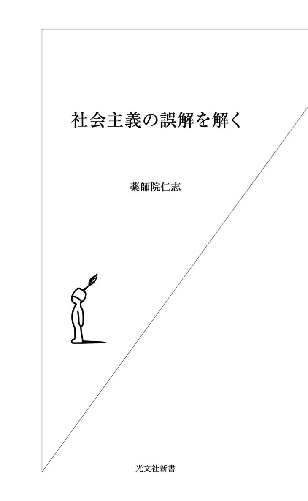
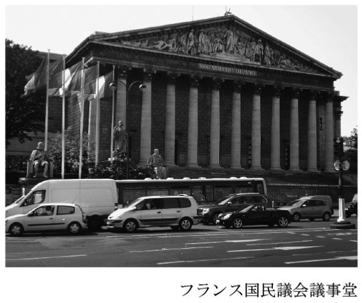
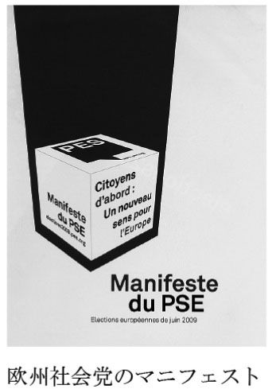
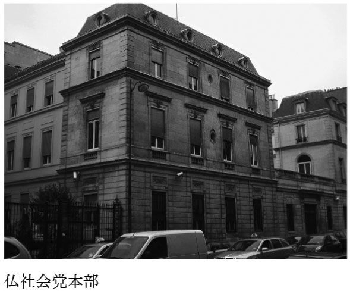
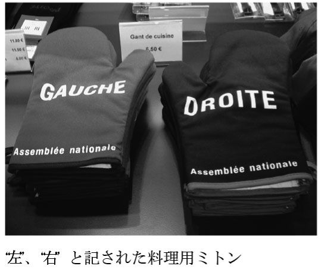
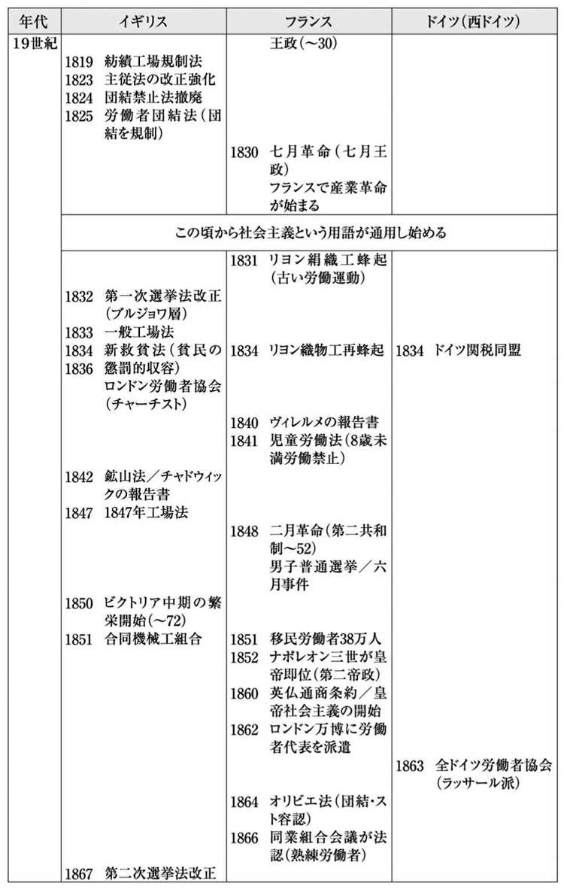
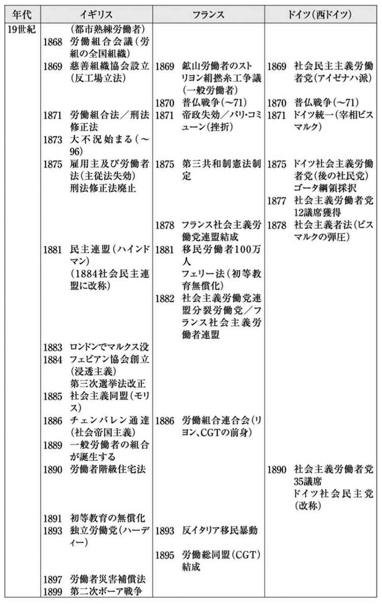
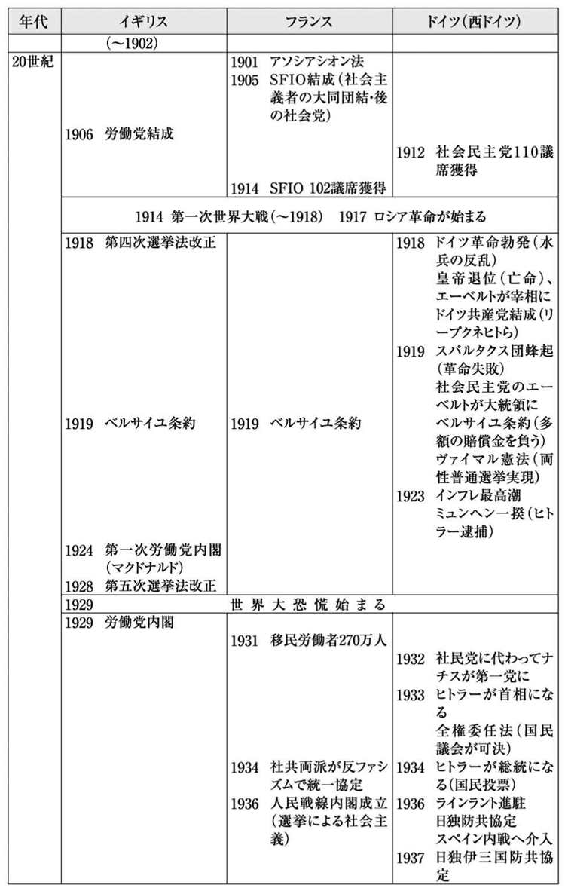
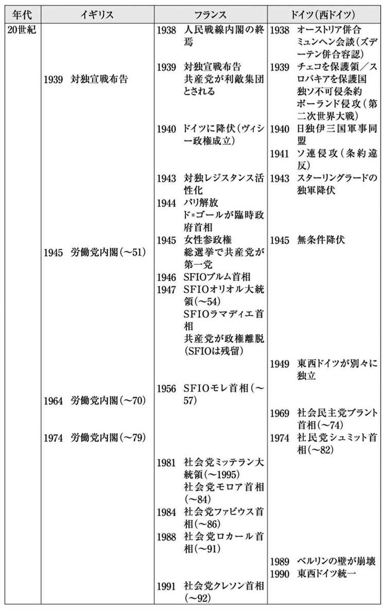
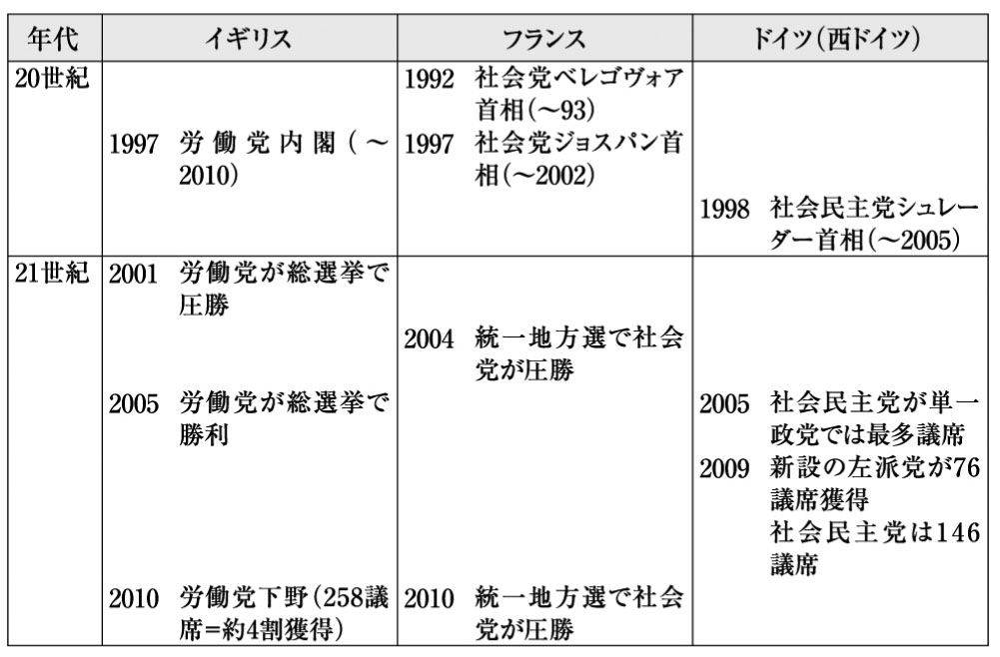

| 社会主義の誤解を解く | |
| 薬師院 仁志 | |
| (2011) | |

社会主義勢力は今も健在
日本では、未だに社会主義が偏向した思想のように受け取られる風潮が残っている。極端な場合、社会主義が反日思想と同列視されてしまうのだ。なるほど、この国の自称社会主義者の中には、胡散臭い言辞を弄した人物が多くいたことも事実であろう。
だが、少し考えてみよう。例えば、フランスの社会党やドイツの社会民主党は、朝鮮労働党と親交を結んで来ただろうか。あるいは、イギリスの労働党やオランダの労働党は、朝鮮労働党の同類なのだろうか。もちろん、そんなわけはない。普通に考えれば、当たり前のことだろう。だから、西欧諸国では、社会主義政党が政権を取れば自国が北朝鮮のようになるとは誰も思わない。そんなバカなことはあり得ないのだ。実際、愛国意識が高いとされるフランス人たちは、第二次世界大戦後から今世紀初頭にかけて、九人もの社会党首相を誕生させて来たのである。
さらに言えば、二一世紀を迎えたとき、イギリスの首相は労働党、フランスの首相は社会党、ドイツの首相は社会民主党、スウェーデンの首相は社会民主労働党、オランダの首相は労働党、ポルトガルの大統領は社会党、フィンランドの大統領は社会民主党、ノルウェーの首相は労働党、イタリアの首相は元社会党......という次第であった。西欧諸国では、グローバル経済の弊害による不平等が叫ばれる中で、自由よりも平等を旨とする社会主義勢力が概して健在なのである。だが、日本は違う。日本の左派勢力は、すでに前世紀末から衰退の一途を辿っている。日本には、社会主義勢力など不要だということなのだろうか。おそらく、そうではあるまい。
自由な社会を目指して来た日本でも、世紀の敷居を跨ぐ頃から中流崩壊という現象が指摘され、二一世紀の最初の一〇年の間には格差社会という自国認識さえ定着してしまった。もちろん、そのことによって、自由という価値の重要性までもが否定されるわけではない。それでも、自由化や自由競争といった路線に負の側面があったことは、経験的な事実として認めざるを得ないだろう。例えば、ある識者は、自由競争に起因する教育格差に着目し、それを次のように指弾している。
ここでもまた自由競争がおこなわれ、そしていつものように金持は得をし、競争がかならずしも自由ではなく、ものごとの判断に必要な知識をもっていない貧乏人は損をする。
初っ端から、ごめんなさい！ この文章を書いたのは、二一世紀の日本人ではない。右の記述は、マルクスの盟友であったフリードリヒ・エンゲルスによるものなのだ。具体的には、一八四五年に出版された『イギリスにおける労働者階級の状態』という書物から掘り出した一節である。
先入見を捨てて、率直に認めよう。マルクスやエンゲルスの思想や主張が妥当であるか否かを別にしても、その問題意識だけは、二一世紀に入っても色褪せていないのである。ちなみに、水野忠邦が老中の座を追われて蟄居したのは、エンゲルスの著書が出されたのと同じ一八四五年のことであった。そして、マルクスがロンドンで没した一八八三年に、東京では鹿鳴館が開館したのである。
近代的な社会主義の歴史は、日本で一般に感じられている以上に奥深く、幅の広いものなのだ。だから、それを短絡的な固定観念の中に押し込めてはならない。社会主義を肯定したり否定したりする前に、まずは、それを客観的で中立的な立場から理解することが不可欠なのである。
社会主義は多種多様
社会主義と聞いて、マルクスの名を連想する人は多いだろう。あるいは、ソビエト社会主義共和国連邦を思い起こす人も多いかもしれない。だが、社会主義と言われて、フランスのナポレオン三世やイギリスのジョセフ・チェンバレンの名を持ち出す人は、極めて少数派であるに違いない。なるほど、ナポレオン三世は共和制を廃して皇帝の座に就いた独裁者であり、チェンバレンは第二次ボーア戦争を推進した筋金入りの帝国主義者であった。日本的な常識で判断すれば、そのような人物は「右」か「保守」であって、むしろ社会主義者とは正反対の側に位置づけられることになるだろう。
しかし、ナポレオン三世もジョセフ・チェンバレンも――少なくとも内政面では――一種の社会主義政策を採用していたのである。この指摘は、独自の新説でもなければ、特に異端的な解釈でもない。事実、それぞれの母国では、ナポレオン三世統治期の後半は「皇帝社会主義」の時代だと言われているし、チェンバレンの政治姿勢は「社会帝国主義」と形容されているのである。たしかに、皇帝社会主義や社会帝国主義は、マルクス流の社会主義とは別物であろう。だが、マルクスこそが社会主義の本家本元だという認識は、必ずしも万人に共有されて来た定説ではないのである。
社会主義は、一つではない。それは、マルクス主義やロシア革命の専売特許ではないし、社会主義的な政策を掲げたのはレーニンや毛沢東ばかりではないのである。むしろ、一口に社会主義と言っても、その中身は実に多様なのだ。極端な例かもしれないが、ドイツのヒトラーも「国民社会主義」を掲げていたし、イタリアのムッソリーニもまた、親の代から続く社会主義運動の闘士として、元々はレーニンの盟友だったのである。この史実に照らせば、戦時期の日本政府は、国内で労働運動や社会主義運動を弾圧する一方で、「国民社会主義ドイツ労働者党」の党首であるヒトラーと同盟を結んだということになろう。その背後にあった共通点は、反自由主義に他ならない。
近代的な社会主義は、いかに多様だとは言え、何らかの形での反自由主義、とりわけ反自由競争経済という方針を共有している。ナポレオン三世、マルクス、エンゲルス、チェンバレン、レーニン、ヒトラー、ムッソリーニ、毛沢東......この中に、自由主義者はいないだろう。もちろん、反自由主義であれば必ず社会主義だというわけではない。現に、戦時期の日本政府は極めて反自由主義的であるには違いなかったが、そこに社会主義的な意図が伴っていたとは言い難いのである。
肯定／否定の前に客観的に理解する
ここで、先ほど挙げたエンゲルスの言葉に立ち返ろう。エンゲルスもまた、「自由競争」に懐疑的であった。言うまでもなく、自由という価値そのものは、人類が獲得した極めて重要な成果であるに違いない。だが、問題は、自由主義的な政策――特に経済政策――が、必ずしも人間を自由にしなかったという事実である。エンゲルスの言葉に象徴されているとおり、社会主義は、この矛盾を直視した。そして、少なくともその問題意識だけは、二一世紀に入っても色褪せていないのである。
一方、多様かつ複雑な社会主義と比較した場合、自由主義の主張は、実に単純明快だ。抑圧よりも自由、強制よりも自由、束縛よりも自由、そして、自由競争による切磋琢磨が、社会発展の原動力となるということである。なるほど、分かり易い理屈であるに違いない。だが、逆から考えてみよう。何でも各人の自由にすれば、抑圧や強制や束縛がなくなるのだろうか。あるいは、自由競争や自由市場などの導入によって、貧困や過重労働や教育格差が減少したのであろうか......。エンゲルスが喝破したとおり、現実は、そんなに単純ではあるまい。社会主義が直視したのは、何よりもまず、この矛盾なのである。
もちろん、ある問題を直視することは、その問題を解決することと同じではない。社会主義は妄想や空論ではないにしろ、当然、万能薬でもないのである。ただし、逆に言えば、社会主義は問題解決の万能薬ではないにしても、単なる妄想や空論ではない。すなわち、崇拝すべき理想でもなければ、悪の陰謀でもないのである。社会主義を論じるに当たっては、まず、この当たり前の視点に立ち返る必要があるだろう。
おそらく、一九八〇年代の半ば頃までは、日本で「社会主義とは何か」を論じる本を出しても、そのタイトルは、額面どおりに受け取られ難かったに違いない。例えば、「法治主義とは何か」や「自然主義とは何か」といったタイトルならば、ごく素直に、何らかの「主義」に関する研究書や解説書だと受け止められたのだろうが、「社会主義とは何か」になると、そうはいかなかったと思われるのである。
実際、社会主義を論じた書物は、二分法的なレッテルを貼られてしまうのが常であった。つまり、社会主義を賛美したり宣伝したりするための本か、社会主義の欠点や失敗をあげつらうための本か、そのいずれかだというわけである。その背後には、理論や思想としての社会主義を支持するか否かと、社会主義を掲げる特定の国家を好むか否かが混同されていたという事情もあったのだろう。
まあ、そんな話も、今は昔である。ペレストロイカ、天安門事件、ベルリンの壁崩壊、東西冷戦の終結、東西ドイツ統一、ソビエト連邦の解体といった出来事が過去に遠ざかるに連れて、社会主義という言葉もまた、徐々に先入見から解放され、ごく一般的な単語として用いられるようになって来た。しかしながら、そのことによって、「社会主義とは何か」という問題が解決したわけではない。政治的な闘争や経済的な利害に長く巻き込まれ続けた結果、社会主義という言葉は、世紀の敷居を跨いだ後も、極めて混乱した理解にさらされたままになっているのである。
社会主義が過去の代物に過ぎないのなら、それに対する理解が混乱しようとも、大した実害はない。すなわち、資本主義が――万能とは言わないまでも――せめて大多数の人々を納得させる体制であるのなら、今さら社会主義を広く論じる必要もないのである。だが、現実の世界を見れば、必ずしもそうではない。むしろ、二一世紀の世界は、資本主義に替わり得る対抗軸を探し求めているようにさえ見える。おそらく、問題は、その対抗軸として、未だに社会主義以外の具体的な選択肢が見つけ難いことであろう。
こうなると、社会主義は、それに対する正確な理解を欠いたまま、ただ心情的な期待ばかりを背負い込むことになりかねない。そのような事態は、万人にとって非常に危険である。社会主義を肯定するにせよ否定するにせよ、その前に理論を学び、歴史を知り、現実を直視し、論理的に思考しなければならない。安易な期待や早計な拒絶は、もう終わりにしよう。
とは言え、「社会主義とは何か」を論じる書物は、「社会主義について理解して下さい」という態度で書かざるを得ない。だが、それは、あくまでも「社会主義に対する真正な知識を持って下さい」ということであって、「社会主義を支持して下さい」という訴えではない。ましてや、特定の社会主義政党の政策や主張を擁護するものでもなければ、特定の人物の理論や著作を奉じるものでもない。本書の目的は、社会主義という思想や制度を、出来る限り客観的な視座から論じることに尽きる。ただ純粋に、「社会主義とは何か」を考えたいだけである。
言うまでもなく、社会党や共産党と名乗る政党を支持しないことは、社会主義や共産主義を否定することと同じではない。それは、自由民主党や民主党と名乗る政党を支持しないことが、民主主義を否定することと同じではないのと全く同様なのである。
目次
社会主義思想は理屈っぽい
自由主義の根本原理が単純明快であるのに比べて、社会主義の原理は、少しばかり込み入っている。誤解を恐れずに言えば、かなり理屈っぽいのだ。歴史的に見ても、社会主義の理論や思想は、庶民層の要求が具現化したものではなく、知識人の思弁の中で生まれ、政治家階層によって広められたものである。そのこと自体は、別に悪いことではない。問題は、社会主義の定義が学派や党派によって異なるばかりか、社会主義、社会民主主義、共産主義といった用語が、客観的な弁別基準を欠いたまま広まってしまったことである。実際、これでは非常に分かりにくい。
しかしながら、学問的な議論を試みる場合、学派や党派のしがらみなど、どうでもよいことである。だから、まずは、社会主義、社会民主主義、共産主義といった形式的区別を無視して出発しよう。なるほど、三者の違いは重要な論点であるに違いない。だが、それに関する説明は、敢えて後回しにする。考えてみれば、ソビエト社会主義共和国連邦を統治していたのはソビエト共産党だし、同党の源流はロシア社会民主労働党なので、社会主義と共産主義と社会民主主義を大枠で同列視したとしても、それほど本質的な誤謬ではあるまい。
そこで、無理を承知の上で、敢えて三者を混同し、しばらくは、それらを全て社会主義という呼称に統一して論じることにする。もちろん、一口に社会主義と言っても、その中には様々な立場や理論がある。だが、ここでは、それらの違いもまた、一時的に封印しておこう。そして、極めて大雑把に考えることから始めよう。いきなり詳細な議論に入り込むのではなく、最初に大枠を確定しておきたいからである。
だから、御託は手短に切り上げて、早速その大枠を示そう。社会主義とは、生産活動が私的なカネ儲けの手段と化さないよう、それを理性的な意志決定の下に統制することである。もっと平たく言うと、何をどれだけ生産するのか、その価格はいくらで、労働時間や賃金はどのくらいなのか等々を、私的な自由意志や無規制な市場原理に委ねず、人民の参政権が及ぶ機関が全て決定するということである。
あくまでも「生産手段の私的所有」の否定
ここで、注意が必要だ。たしかに、社会主義は、私的なカネ儲けを制限する。ただし、それは、私有財産そのものを否定しているわけではない（＊１）。社会主義の下でも、ある個人が正当に獲得した所有物は、その個人の私的財産なのである。実際、マルクスが第一に問題にしたのは、あくまでも「生産手段の私的所有」なのであって、生活手段の私的所有ではない。社会主義は、何よりも「生産手段の社会化」を旨とする制度なのである。
この点を誤解すると、とんでもない発想が生まれてしまう。例えば、一九七〇年代後半、カンボジアのポル・ポト政権は、共産主義の名の下で、通貨の廃止や私有財産の禁止を訴えた。言うまでもなく、こんな政策は無茶苦茶であって、ユートピア幻想でありこそすれ、少なくとも近代的な社会主義からは完全に逸脱している。その結末がいかに悲惨であったのかについては、今さら論じる必要もあるまい。これは極端な例だとしても、現に社会主義の看板を掲げた国々において、社会主義に関する正しい知識に欠ける大衆庶民層を一部の独裁支配者たちが一方的に指導し、個人の私的自由に属する領域までもが不当に統制されて来たことは事実であろう。
実際に社会主義を導入した国では、定義の上では当然のことであるが、国家権力が――私生活ではなく――生産活動を統制することになる。そして、歴史的な事実を見る限り、その統制は、しばしば国家権力による抑圧に転化する傾向があった。性急な国内革命による権力奪取を通じて、無理やり社会主義化を推進すると、そのような結果を生んでしまうのである。特に、大国になればなるほど、その傾向が強い。大きな国では、統治に強大な権力が必要とされるからである。
たしかに、本来の社会主義は、国家という枠組を超えた国際的な制度として構想されたものであって、一国社会主義という体制には、それ自体として問題も多い。それでも、社会主義的な意味での国家統制の主眼は、生産活動が特定の者に主導されることを避けるため、それを参政権の及ぶ範囲内に置くことなのである。これまた大雑把に言えば、社会主義国は、民間主導の自由で営利的な生産活動を排し、正当な国家権力が指導する公正な生産活動を旨とするということになろう。いずれにせよ、国家権力による統制を、国家権力による抑圧と混同してしまうと、社会主義の意味は理解できない。社会主義国に限らず、最も正当な統治を実現するのは、定義上、国民が選んだ公権力なのである。
話を戻そう。社会主義は、生産活動を私的自由や市場原理に委ねることを拒絶する。つまるところ、社会主義の原点は、資本主義の廃絶なのである。当然のことながら、資本主義を廃絶するためには、それに先立って、まず資本主義が存在していなければならない。歴史的に見ても、固有の意味での社会主義は、資本主義が誕生した後に、それに代わる対立軸として提起されたものである。では、社会主義は、資本主義の何を問題にし、何を乗り越えなければならなかったのだろうか。この問いが、我々に課せられた第一の課題である。それを解明するためには、少々遠回りになるが、資本主義とは何なのかを、まず知っておかなければなるまい。
〝生産様式〟とはなにか
マルクスが問題視したのは、『資本論』第一部の本文冒頭にあるとおり、「資本主義的生産様式が支配的に行われている社会」である。正確に言えば、原書は「資本家的な生産（Kapitalistische Produktion）」となっていて、「資本主義（Kapitalismus）」ではない。しかし、両者の意味に特段の違いはないので、本書では「資本主義」（＊２）という訳称に統一にしておこう。なお、「資本主義」という用語自体は一八世紀から存在していたのだが、『資本論』が刊行された一八六七年当時、その用語は、まだ今日的な意味で一般的に用いられてはいなかったのである。
ともあれ、ここで確認しておくべきは、資本主義が、「生産」という活動の一様式だという点である。マルクスは、あくまでも生産活動の様式、すなわち生産様式に着目したのであって、私的な生活様式を問題にしたのではない。もう少し詳しく言えば、私的所有の次元に現れる問題点もまた、元を正せば、全般的な生産様式の問題点に起因すると考えたのである。この点において、マルクスの理論は、原始的な平等社会への単純な夢想とは一線を画していると言えよう。
では、生産様式とは、いったい何なのか。それは、手工業と機械工業の違いといった、技術論的な事柄を主たる基準にした類型ではない。むしろ、生産様式とは、生産活動という営みを、社会的な側面から類型化したものに他ならない。究極のところ、それは、人間にとって生産活動とは何かという問題なのである。もちろん、そこには、生産という営みが、どのような人間関係に基づいて行われるのかという問題も含まれる。
衣服の生産という活動を例に取って考えてみよう。人間は、太古の昔から衣服を生産して来た。単に着る物を生産するという事実だけを見れば、古代人から現代人に至るまで、何ら変わるところはないだろう。だが、何のために衣服を生産するのか。なるほど、最終的には、誰かの着用に供するためであるに違いない。実際、人類は、長い歴史を通じて、自分自身が着るために、あるいは自分の家族が着るために、さらには自分の属する共同体の仲間が着るために、必要な衣服を生産して来たのである。
これに対して、現代の我々が着ている衣服は、ほとんどの場合、衣料品製造業者が、赤の他人に販売するために生産した商品であろう。我々は、赤の他人が生産した商品を、カネで買うのだ。資本主義的な原則の下では、衣服だろうが食糧だろうが住宅だろうが、基本的に、全て商品として生産されるのである。
他方、自分や家族が着るために自作した衣服は、有用な富の一つでありこそすれ、決して商品ではなかった。商品とは、市場（マーケット）において、赤の他人同士の間で売買される物やサービスのことである。もちろん、商品生産の第一目的は、自らの使用に供することではなく、売りさばいてカネを儲けることに他ならない。だからこそ、資本主義的生産様式が支配的に行われている社会の富は、「商品の集まり」として現れるのである。
まず、このような点で、資本主義的な生産様式は、自給自足型の生産様式から区別される。その違いは、製造技術の次元にあるのではない。重要な点は、生産活動が、自分たちの必要や欲求を直接的に満たす行為ではなく、カネ儲けの手段と化すということである。こうなると、人間にとって生産活動とは何かという次元において、大きな変化が生じざるを得ない。
自分や家族が使用するための衣服ならば、それを一日に一〇〇着も作ろうとする人間はいないだろう。また、四人家族の食糧を得るために、一〇〇ヘクタールの田畑を耕す人間もあるまい。そんなに働いても、くたびれるだけなのだ。着るための衣服や食うための食糧は、消費量を超えて生産しても無意味なのである。だが、カネ儲けのために物を作るとなると、話は別だ。その場合、最小限のコストで最大限の生産を行い、少しでも多く売りさばき、一銭でも多くのカネを手に入れることが、生産活動の最重要課題となる。つまり、自分が着るための衣服さえ充分に持たない貧しい労働者が、懸命に働いて一日に何千着もの衣服を生産したとしても、それは決して本末転倒ではないのである。
なるほど、衣服という生産物の商品化自体は、その規模や広がりを度外視すれば、かなり古くから始まっていた。そもそも、商業の歴史は、古代文明期にまで遡るのだ。とは言え、ほとんど全ての生産活動が、初めから商品生産による利潤追求を自己目的化するようになるには、資本主義的な生産様式が「支配的に行われている」社会の誕生を待たなければならない。そこでは、生産活動の原動力が、実際に物を作る人間ではなく、カネ儲けを目論む人間に託されることになる。これこそ、マルクスの言う「資本家的な生産（Kapitalistische Produktion）」に他ならない。資本主義社会において、生産活動の主役は、カネ儲けを行う人間であって、生産活動を担う人間（労働者）ではないのである。
持つ／持たざるという不平等
マルクスは、このような疎外状態を問題視した。すなわち、実際に物やサービスを生産する労働者が、カネ儲けを目論む資本家に従属し、さらには搾取されるような事態は矛盾していると考えたのだ。衣服の生産によって得られた利益は、それを実際に生産した者に享受されるのが当然ではないのか。それにもかかわらず、労働によって実際に富を産み出している者が、どうして貧しいのか......。マルクスは、この単純明快な矛盾を、極めて率直に見つめた。そして、この矛盾の源泉を、「生産手段の私的所有」と「労働力の商品化」を前提とする資本主義的な生産様式に求めたのである
少々難しげな言葉が出て来てしまったが、「生産手段の私的所有」や「労働力の商品化」とは何なのかについて、平易な物語で説明しよう。ある日、資産家のＡ氏は、衣服の生産でカネを儲けようと思い立ち、仲間のＢ氏とＣ氏を誘い、三人で元手を出し合って衣料品製造会社を設立した。この時点で、Ａ、Ｂ、Ｃの三氏は、単なる資産家から資本家となったと同時に、自分たちの会社の社員となったのである。そして、三人の社員たちは、事業を始めるに当たって、不動産屋から土地と建物を買い、機械屋からミシンを買い、家具屋から椅子や机などを買い、糸屋や布屋から原材料を仕入れ、文房具屋から筆記具や帳面などを買った。要するに、この三人は、衣服の生産に必要な手段を、私物として手に入れたのである。これが、「生産手段の私的所有」に他ならない。
だが、生産手段を私物として所有しただけでは、何も始まらない。実際に生産活動を行うためには、働いてくれる人間が必要なのだ。だから、三人の社員たちは、文房具屋にカネを払ったのと同様、労働者にもカネを払うことになる。つまり、鉛筆や帳面という商品をカネで買ったのと同様、労働力という商品もまた、カネで買うことになるのである。会社にとって、労働者とは、自分の労働を売りに来る人間なのだ。その立場は、本質的に、文房具を売る人間と何ら変わらない。違いは、その会社に何を売るのかという点だけなのである。
マルクスは、このような事態を、「労働力の商品化」と呼んだ。資本主義社会において、労働力は、労働市場で売買される商品なのである。当然、労働者は、家臣でも使用人でもなく、会社の外部にいる独立した人間に他ならない。その生業は、赤の他人に労働力という商品を売ることである。先述の話で言えば、会社の社員とは、出資者たるＡ、Ｂ、Ｃの三人のことであって、そこで労賃を得る人間のことではない。この大前提を忘れてしまうと、資本主義下の雇用契約が、労働力の売買という対等な契約ではなく、封建的な主従契約だと誤解される危険性が生じる。そうなってしまえば、資本主義とも奴隷制ともつかない、何とも奇怪な生産様式が展開されることになろう......。
ともあれ、重要な点は、資本主義社会において、労働によって産み出される財やサービスだけではなく、労働力そのものもまた一つの商品だという事実である。ミシンであれ鉛筆であれ労働力であれ何であれ、それらが商品である限り、買う側からすれば、値段が安いに越したことはない。だが、売る側の立場は、もちろん全く逆である。それを調節するとされるのが、いわゆる市場原理なるものだ。要するに、万人に等しく開かれた透明な市場が、その自動調整機能を通じて、適正価格への指向性を発揮するという理屈である。
なるほど、売り手と買い手の立場が真に対等なのであれば、そのような理屈も成り立つかもしれない。だが、少なくとも労働力の売買において、売り手と買い手は、決して対等ではないのだ。労働力の買い手は、生産手段を私的に所有し、カネ儲けのために生産活動を推進する人間、すなわち資本家である。他方、労働力の売り手は、生産手段を所有せず、生きてゆくために自分の労働力を売るしかない人間、すなわち賃金労働者である。この二種類の人々は、別々の階級に所属する人間であって、対等な当事者ではない。一方は資本家階級、他方は労働者階級なのである。
マルクスが捉える階級社会は――その妥当性はともかく――単なる格差社会や階層社会と同じではない。階級の区別は、人工的な指標に基づくものではなく、客観的で二分法的なものである。究極のところ、生産手段を私有するか否か、それだけが基準なのだ。
たしかに、法律上は、資本家も労働者も、所属階級は違いこそすれ、同じく自由な個人である。だから、自由な労働者は、資本家に労働を強制されることはない。しかし、生産手段を持たず、自分の労働力以外に売る物を持たない人間は、現実として、資本家に雇われて働く他はないのである。さもなければ、失業だろう。だから、自由な労働市場は、あらかじめ不平等なものにならざるを得ない（＊３）。一方には、常に相手から足元を見られる売り手があり、他方には、常に相手の足元を見る買い手がいるからである。
結局、生産手段を私的に所有する自由を認めると、どうしたって、それを持つ者と持たない者が生まれざるを得ない。となると、持たざる者は、自分の労働力を売るしかなくなる。かくして、不平等な労働市場が成立し、実際に生産活動を行う人間が貧しくなるというわけである。少なくとも、純然たる資本主義が、実際に生産活動を行う人間を脇役に追いやり、さらには最低生活に追いやるという傾向を持っていることは、誰も否定できまい。
実際に生産活動に携わる人間は、その労働によって、以前にも増して多くの財やサービスを産み出しているのに、なぜ以前にも増して豊かになるどころか、逆に貧しくなってしまうのか。さらに言えば、豊かな人間よりも貧しい人間を多く生み出すような生産様式は、目指すべきものではなく、むしろ廃棄すべきものではないのか......。このような疑問が、資本主義の発展とともに、一九世紀のヨーロッパで芽生え始めたのである。
ただし、だからと言って、社会主義を目指すべきなのか。あるいは、資本主義の修正や改良を行うべきなのか。それとも、さらなる経済発展だけを目指すべきなのか......。この問題は、後回しにしよう。その前に、社会主義の理論や歴史を知ることが、まず先決なのである。
単純明快な動機から出発
論理的に、そして率直に考えてみよう。資本主義の社会が――少なくとも結果的に――少数者の利益ばかりに奉仕するのならば、大多数の者は、そんなものに協力する筋合いはないだろう。能力主義や成果主義を持ち出したところで、何ら変わりはない。負け組を宣告された多数者は、その時点で、現行の社会体制に貢献する意義を喪失するからである。そこには、近視眼的な利己主義しか残るまい。普通に考えれば、自分を冷遇する社会を進んで維持しようとするのは、極めて非合理的な態度なのだ。
そもそも、真に公平な実力競争が保証されない限り、能力主義や成果主義など、一片の正当性も持たない。それらは、教育を受ける機会、大企業の社長になる機会、国会議員になる機会、豪邸に住む機会などが、どの土地でどんな親から生まれた者に対しても均等に配分されて初めて成り立つ原則なのである。
ここで、資本主義の打倒といった、直情的な訴えに走りたいわけではない。ただ、事実を直視し、物事を率直に考えたいだけである。実際、一九世紀のヨーロッパで生まれた社会主義運動や労働運動にしても、根源的な次元において、その動機は、非常に単純明快なものであった。すなわち、大多数の者を生活苦に陥れるような社会は、皆で支えるべき代物などではなく、むしろ変革すべき対象に他ならないというわけである。この発想自体は、極めて合理的かつ論理的なものであろう。
言うまでもなく、この発想の背後にあるのは、市民革命の経験だ。絶対王政を打ち倒し、封建的な隷属状態から解放されたという歴史的な経験が、ヨーロッパの人々に対して、世の中は自分たちの力で変革し得るという確信を植え付けたのである。逆に、どうせ世の中が変わるはずなどないと信じるのであれば、一般庶民にとって、変革よりも自己保身が最も合理的な選択肢になろう。極端な話、奴隷にとって最も合理的な行為は、自分だけは少しでも甘い汁にありつくために、ひたすら主人に気に入られるよう振る舞うことである。これは、ある意味で最悪の事態であろう。
社会主義と労働運動は当初は別物だった
いずれにせよ、歴史的な事実として、一九世紀のヨーロッパでは、資本主義への異議申し立てが、一つの奔流として現れたのである。この異議申し立ては、思想面では社会主義の理論として、実践面では労働運動という形で台頭して来た。その発祥の地は、どちらもイギリスである。まあ、順当な事態だろう。世界に先がけて資本主義的な生産様式を離陸させた国において、それに対する抵抗が最初に生まれたのである。ただし、社会主義理論と労働運動は、重複する部分も多いが、必ずしも相互に連動していたわけではない。歴史的に見れば、社会主義と無関係な労働運動も数多く存在していたのである。
労働運動の直接的な目的は、労働者階級の具体的な利益に他ならない。それは、自然なことであろう。労働者は、思想や信条の殉教者でない。一人一人の労働者は、自分たちの権利や利益を求めて、労働運動や階級闘争に参加しているのである。そこでは、当然、未来の理想よりも今日の生活の方が重要なのだ。だから、労働運動は、たとえ妥協であれ対症療法であれ、常に現実的な問題解決を志向する傾向を持たざるを得ないのである。
他方、社会主義の理論や思想は、働く人間の利益や権利を肯定するとは言え、必ずしも労働者階級の即時的実利に直結するものではない。むしろ、目先の利害がどうであれ、問題の根本的解決を志向する傾向が強いのである。そもそも、社会主義を生み出したのは、労働者たちではない。社会主義の理論や思想は、知識人――一九世紀においては上流階層――の中から生まれたものなのである。だから、それを広めようとする運動は、しばしば労働運動とは別の文脈で展開されていた。労働者のいない社会主義運動もまた、数多く存在したのである。
しかしながら、労働者のいない社会主義運動は、結局のところ、大きな政治勢力を構成することが出来ない。社会主義運動が実を結ぶためには、労働運動と連携し、その支持を得ることが不可欠なのである。となると、社会主義運動は、現実問題として、労働者階級の具体的利益にも配慮せざるを得ない。社会主義の原則や理論がどうであれ、ともかく労働者を味方に付けることが、運動面での重要課題となるのである。だが、そうなると、社会主義理論と社会主義運動との間に、微妙な亀裂が生まれてしまう。その結果、社会主義理論と矛盾するような社会主義運動もまた、数多く存在することになるのである。
社会主義も資本主義も一つの観念
たしかに、一九世紀のヨーロッパにおいて、資本主義への異議申し立ては、思想面では社会主義の理論として、実践面では労働運動という形で台頭して来た。しかし、労働運動と社会主義運動は同じではなかったし、社会主義運動と社会主義理論もまた、同じではなかったのである。もちろん、社会主義を掲げる国家の誕生は、社会主義を実現した国家の誕生と同じではなかった。論理的に考えれば、どれも当然のことであろう。だが、歴史を振り返れば、社会主義理論、労働運動、社会主義運動、社会主義国といった事柄が、切り離し難く錯綜していたこともまた、厳然たる事実なのである。その意味で、純粋な形での社会主義は、観念の中にしか存在しないのかもしれない。
だが、社会主義が観念であるならば、資本主義もまた、一つの観念なのである。現実の世界には、完全な形での資本主義社会など存在しない。警察や軍隊が国営や公営であることを別にしても、近代化した文明社会において、貨幣や機関銃やヘロインなどの製造をバケツやスリッパの製造と同列視し、それら全てを自由な資本主義経済に委ねるような事態は、まず起こり得ないのである。教育や医療や交通などの事業に関しても、程度の差こそあれ、似たようなことが言えるであろう。
社会主義は、資本主義に対して、異議を申し立てる。それを打倒し、乗り越えようとする。しかしながら、乗り越えるべき相手自体が、そもそも観念的な存在に過ぎないのである。ある観念を打倒し、それを乗り越えることができるのは、結局のところ、別の観念だけであろう。それを現実世界で実行しようとすれば、遅かれ早かれ、事態は錯綜したものにならざるを得ない。資本主義であれ社会主義であれ、その完全な姿を現実世界の中に見つけることは、永遠に不可能なのである。この事実を、まず受け入れよう。
社会主義は、資本主義と同様、完全な形で実現する制度でもなければ、娑婆を浄土に変える魔法でもない。だから、社会主義の理論や思想を、実現不能な理念だと非難したところで、あまり意味はないだろう。そんなことは、当たり前のことなのだ。現存の資本主義にしても、その実態は、ツギハギだらけの資本主義に過ぎないのである。社会主義は、資本主義と同じく、信奉すべき理想ではないにしても、単なる妄想や空論でもない。逆に、社会主義にせよ資本主義にせよ、それを絶対的な善のごとく信奉してしまうと、妄想や暴走の世界に迷い込んでしまうだろう。これまた、当たり前の話なのである。
事実、歴史的に生起した社会主義運動を顧みれば、その目的や方針は実に多様なものであった。マルクスの理論を肯定する者たちの中にさえ、自らを社会主義者と名乗る者もいれば、共産主義者を名乗る者もいたし、社会民主主義を掲げる者もいたのである。社会主義の理論と実際の社会主義運動との関係もまた、必ずしも整合的なものではなく、むしろ矛盾と妥協に満ちたものであった。そして、社会主義運動と労働運動は、相互に重複する部分も多かったが、決して一体ではなかったのである。
資本主義は未解決の難点を抱えている
それでも、社会主義には、それなりの根拠と存在理由があった。ベルリンの壁が崩壊しようとも、ソビエト連邦が解体しようとも、社会主義が提起した問題意識は、そう簡単に却下し得るものではない。実際、二一世紀に入って以後も、ヨーロッパの国々の多くでは、社会主義を掲げる諸政党が――程度の差こそあれ――脈々と一定の勢力を保ち続けているのである。まあ、素直に考えれば、当然のことであろう。いかにツギハギを施そうとも、資本主義が抱える難点は、少なくとも根本的な次元において、未だ何も解決していないからである。
自由競争、自由経済、自由市場、自由貿易、金融自由化などの実現によって、さらには飛躍的な経済発展によって、飢餓人口や貧困や生活苦が減少したのだろうか。人々が多くの富を生産することに比例して、人々の社会生活が安楽なものになったのであろうか。そうでないのなら、現行の社会システムは、皆で懸命に維持するべきものではなく、やはり改変すべきものではないのか。数々の挫折や敗北を超えて社会主義を支え続けているのは、このような問題意識に他ならない。それは、断じて机上の空論に属するものではなく、多くの矛盾や葛藤を抱えながらも、極めて率直で論理的な問題意識なのである。
率直で論理的な問題意識と、矛盾と混乱に満ちた展開。実存する社会主義は、これらを合わせたものであって、それ以上でも以下でもない。だから、社会主義を理解するためには、それが実際に辿って来た歴史を知る必要がある。現実世界に存在する社会主義を知ることは、マルクスの著作を知ることと同じではない。そして、社会主義の歴史を語ることは、有名な社会主義者の奮戦記を書くことと同じではない。
以下では、社会主義がどのような歴史的文脈の中で生まれ、何を問題にし、何を解決しなければならなかったのかを、具体的な出来事を視野に入れながら探ってゆくことにする。
＊１ たしかに、マルクス・エンゲルスの『共産党宣言（Manifest der Kommunistischen Partei）』（一八四八年）には、「私的所有の廃止」という一語が登場する。しかし、その表現が、現に実在する形での「私的所有の廃止」、すなわち「ブルジョワ的所有の廃止」を指すことは、前後の文脈から明らかである。そこでは、搾取から生まれた私的所有が非難されているのであって、正当な私的所有までもが否定されているのではない。事実、同書にも、「共産主義を特徴づけるものは、所有一般の廃止ではなくて、ブルジョワ的所有の廃止」だと明記されているのである。ちなみに、『共産党宣言』は、共産主義者同盟の綱領として発表されたものであり、マルクスとエンゲルスが純粋に持論を展開するために書いた作品だとは言い難い面もある。（本文へ戻る）
＊２ 資本主義という語は、あくまでも一つの生産様式、あるいは一つの経済体制を指すのであって、何らかの思想や主張を指すものではない。この点、思想的な含意の強い社会主義という語とは、少し性格が異なっている。思想面での社会主義に対立する語は、むしろ自由主義である。だから、近代的な社会主義は、どれも何らかの点で反自由主義的であり、両思想はソシアル対リベラルという形で対峙することになる。なお、資本主義という用語を今日的な意味で使い始めたのは、自由主義者たちではなく、マルクス主義者たちの方であった。（本文へ戻る）
＊３ もちろん、根源的な問題は、労働力の売買における等価交換のトリックにある。労働者は、生活してゆくために、自らの労働力を売る。資本家は、労働者に対して、雇用した期間の生活を満たすだけの賃金を支払う。これは、一種の等価交換であるに違いない。そこで想定される生活が、最低限の暮らしなのか、それとも豊かな消費生活なのかは、あまり本質的な問題ではない。むしろ、問題は、労働力の価格が、その労働が持つ価値によってではなく、労働者の生活費によって決まるという点にある。簡単に言うと、普通の労働者の一ヶ月の生活費相場が三〇万円ならば、その労働者が一ヶ月に一〇〇万円分の価値を産み出す働きをしたところで、資本家は三〇万円だけ支払えばよく、それで等価交換が成立するという点にある。これが、利潤の源泉なのだ。資本家は、自分に有利な買い物が出来る場合にだけ、労働力を買えばよい。だが、労働者は、いかに不利な売買条件であれ、ともかく自分の労働力を売らねば生きてゆけない。かくして、賃金は常に買い叩かれ、労働者が産み出した利益の一部または大半が、生産手段の私有者に渡るという事態が生じるのである。資本主義的生産様式が利潤の獲得を目的とする以上、この事態は避けようがない。（本文へ戻る）
草分けとなった〈空想的〉社会主義者たち
社会主義という考え方は、一八三〇年代、まずイギリスにおいて、次いでフランスにおいて姿を現したと言われている。例えば、フランスの社会学者デュルケム（一八五八～一九一七）は、社会主義という言葉が登場した契機について、次のように述べている。
この語は、一八三五年、イギリスにおいて鍛造されたものである。この年、ロバート・オーウェンの指導の下で、「全階級全国民協会」なる少々大仰な名を冠した団体が設立された。その際に行われた議論の中で、社会主義や社会主義者（社会主義の）といった語が、初めて用いられたのである。
些末なことを言うと、イギリスでは、早くも一八二二年頃から、オーウェンやその支持者たちによって、社会主義という語が用いられていたらしい。また、フランスでも、一八三一年頃には、サン＝シモン学派のピエール・ルルーらによって、すでに社会主義という語が使用されていたと言われている。さらに、フーリエもまた、一八三三年、自ら創刊した『協働共生体または産業改革（Le Phalanstère, ou la Réforme industrielle）』という雑誌に寄せた論考の中で、「社会主義者（ソシアリスト）」という表現を用いていた。
しかしながら、ここでは、それほど詳細な年代測定は必要あるまい。何にせよ、社会主義という言葉は、一八三〇年代の半ばから、まずはイギリスで、直後にフランスで広まっていったのである。そこで鍵になる人物は、イギリスではロバート・オーウェン（一七七一～一八五八）、フランスではアンリ・ド・サン＝シモン（一七六〇～一八二五）とシャルル・フーリエ（一七七二～一八三七）であった。
この三人の人物を、遠く離れた日本でも有名にしたのは、おそらく、マルクスとエンゲルスの『共産党宣言』（一八四八年）であろう。その中で、オーウェン、サン＝シモン、フーリエの三人は、いわゆる「空想的社会主義者」なるレッテルを貼られたのである。となると、一八三〇年代に出現した社会主義思想は、空論や妄想でしかなかったのだろうか。結論から言うと、そんなことはない。少なくとも社会主義という考え方の本質は、多少の混乱を伴いながらも、当初から明確に現れていたのである。
マルクスにしても、「空想的」という修飾辞を、必ずしも妄想や空論を断罪する意味で用いたのではない。むしろ、的場昭弘氏が正しく指摘するとおり、「『共産党宣言』の第三章をよく読むと、マルクスは三人について実はかなり高い評価をしている」のである。この点を、断じて誤解してはならない。
ただ、マルクスやエンゲルスにとって、オーウェン、サン＝シモン、フーリエの三人は、古い世代の社会主義者であった。特に、実践面において古く感じられたのであろう。事実、三人の「空想的社会主義者」の中で一番若いのは一七七二年生まれのフーリエなのだが、それでも、一八一八年生まれのマルクスと比べれば、両者の年齢差は坂本龍馬と吉田茂の差よりも大きいのである。そう考えれば、「空想的」という語の意味も明快だろう。新しい日本の夜明けを夢見た坂本龍馬にとって、近代化した日本の姿は、「空想」するものでしかなかったのだ。同様に、「空想的社会主義者」たちの思想もまた、未来社会の空想的描写にならざるを得なかったのである。
その意味で、マルクスから見れば、三人の「空想的社会主義者」の思想や理論は、すでに現実味を失ったものと映ったに違いない。たしかに、両者の間には、世代の違いも相俟って、いくつもの対立点が存在するのだろう。それでも、敢えて巨視的に見れば、オーウェン、サン＝シモン、フーリエ、マルクスは、全て一九世紀に活躍した社会主義者なのであり、少なくとも根底的な次元では多くの論点を共有しているのである。とりわけサン＝シモンとマルクスとの間には、理論的な面において、かなりの接点を見出すことが出来るだろう。
マルクスもエンゲルスも社会主義者に分類
党派意識に拘泥して、何が何でもマルクスを絶対視したり全否定したりするような態度は、もう忘れよう。素直に考えれば、マルクスにしても、社会主義の世の中など実在しない時代に、それを空想したに過ぎないのだ。だが、だからと言って、その思想や理論が輝きを失ってしまったわけではないだろう。当たり前の話、それ以上でも以下でもないのである。
そのことを理解するために、ここで、社会主義の基本定義を思い出そう。社会主義とは、生産活動が私的なカネ儲けの手段と化さないよう、それを理性的な意志決定の下に統制することである。これに照らす限り、究極のところ、サン＝シモンとマルクスとの間に決定的な違いがあるわけではない。両者とも、生産活動の理性的な統制を基本に置いた点では、何ら変わるところはないのである。
ちなみに、サン＝シモンは、フランス社会主義の創始者とされる思想家で、その著書である『産業体制論（Du système industriel）』（一八二二年）や『産業者の教理問答（Catéchisme des industriels）』（一八二四年）は、国民の大多数を成す貧困層の境遇改善を強く訴えた作品として知られている。たしかに、サン＝シモンは、エリート層――世襲為政者ではなく産業指導者や知識人――による統治を支持すると同時に、ユートピア的な平等社会を肯定していた。だが、デュルケムが看破したとおり、サン＝シモンの主眼は、あくまでも統制経済による貧困の解消や豊かさの実現なのであって、エリート統治はその手段に過ぎず、平等社会はその帰結に過ぎないのである。
マルクスよりも六〇歳近く年上のサン＝シモンにとって、労働者階級が政治の主役となり、自らの力で望ましい社会を実現することなど、空想することも出来ない事態であったに違いない。当時において、生産活動を理性的に統制する能力を持つのは、エリート層であって、労働者大衆ではなかったのである。マルクスから見れば、その認識が古臭かったのであろう。
しかし、マルクスにしても、労働者大衆の政権担当能力を「空想」したに過ぎない。マルクスの著書を読み、その理論を理解し、その主張を真に実現する能力を持っていたのは、結果的にどのような人々だったのか......。二一世紀に生きる我々は、その現実もまた、直視しなければならない。社会主義であれ民主主義であれ自由主義であれ何であれ、形式的な建前論に堕してしまうことは、最悪の事態なのである。
いずれにせよ、サン＝シモンの思考は、生産活動の統制と組織化という発想に関する限り、完全に社会主義の本質を突いていた。実際、デュルケムは、オーウェン、サン＝シモン、フーリエ、マルクスの四人を、全て社会主義者だと規定し、同じ側に分類していたのである。
少々ややこしいのは、デュルケムが、社会主義と共産主義を区別した上で、右の四人を〝社会主義者〟の側に分類したことだろう。しかも、マルクスとエンゲルスによる『共産党宣言』の刊行から五〇年近くも経った後に、そのような分類を行ったのである。要するに、デュルケムは、自ら共産党を宣言したマルクスを、共産主義者ではなく、敢えて社会主義者に分類したということなのだ。もちろん、その判断は学問的なものであり、デュルケム自身の政治的立場に基づくものではない。むしろ、デュルケムは、政争に巻き込まれて混乱した用語法を、改めて整理し直そうとしたのである。
では、共産主義（コミュニズム）とは何なのか。共産主義者とは誰なのか。次は、この問題について論じなければならない。だが、その前に、二つの点を確認しておこう。一つは、社会主義という考え方が、一八三〇年代に、イギリスやフランスで姿を現したものであるという点。そして、初期の社会主義は、マルクスやエンゲルスから「空想的」とのレッテルを貼られたのであるが、そのことを過度に重視すべきではないという点である。社会主義は、その本質に照らす限り、当初から社会主義であった。実際、サン＝シモンとマルクスとの間に、根本的な異質性を見出すことはできないのである。
日常会話で誤用される〝共産主義〟
岩波書店の『広辞苑』（第六版、二〇〇八年）は、「共産主義」を次のように定義している。
①私有財産制の否定と共有財産制の実現によって貧富の差をなくそうとする思想・運動。古くはプラトンなどにも見られるが、主としてマルクス・エンゲルスによって体系づけられたものを指す。
②プロレタリア革命を通じて実現される、生産手段の社会的所有に立脚する社会体制。
この記述は、日本語の中で現に使われている「共産主義」という単語の説明としては、完全に正しいのであろう。だが、社会科学に照らした場合、『広辞苑』による「共産主義」の定義は、かなり混乱したものとなっている。デュルケムが整理しようとしたのも、まさにこの混乱に他ならない。
極めて大雑把に言えば、①に登場する「主としてマルクス・エンゲルスによって体系づけられたものを指す」という記述を②の方に回せば、ほぼ混乱は解決するだろう。つまり、マルクスの基本姿勢は、「古くはプラトンなどにも見られる」ような①にあるのではなく、「生産手段の社会的所有」に立脚する②の側にあるということなのである。
デュルケムは、①の「私有財産制の否定と共有財産制の実現によって貧富の差をなくそうとする思想・運動」を共産主義と呼び、②の「生産手段の社会的所有に立脚する社会体制」を社会主義と呼んだ。言い換えれば、「私有財産制の否定」という原始回帰型の発想を共産主義と呼び、資本主義の矛盾を乗り越えようとする近代的な発想を社会主義と呼んだのである。となると、当然のことながら、マルクスは②の社会主義に分類されることになろう。要するに、『広辞苑』が「共産主義」の中に含めた②こそ、少なくともデュルケムにとっては、まさに社会主義に他ならないのである。
しかしながら、共産主義という用語は、プラトンの時代から通用していたわけではない。共産主義という語が現在と同様の意味で用いられるようになったのは、社会主義より少し遅く、一八四〇年代に入ってからのことである。ただし、コミュニスト（現在では共産主義者の意）やコミュニズム（現在では共産主義の意）といった単語そのものは中世から存在していたので、どこからが近代的な用法なのかを判断するのは非常に難しい。また、ラテン語のコムムニス（communis）という言葉にまで遡れば、共産主義の出発点を確定することは、さらに困難な作業になろう。
ともあれ、共産主義という語を、近代的な意味で用いた最初期の事例として広く知られているのは、エチエンヌ・カベーの『共産主義的信条（Comment je suis communiste et Mon Credo communiste）』（一八四二年）という書物である。これは、先出の『広辞苑』の定義に照らすと、明らかに①の系列に属する。すなわち、カベーの思想は、私有財産のないユートピア社会を基本的な準拠点とするものだったのである。ただし、カベーは、古代や中世の人物ではない。カベーの『共産主義的信条』と、マルクスとエンゲルスによる『共産党宣言』は、ともに一八四〇年代の出版物なのである。両者を隔てる時間は、わずか五～六年に過ぎない。
混乱を生む共産主義の二つの流れ
同じ一八四〇年代に、同じく共産主義を標榜したマルクスとカベーは、本質面で別種の考え方を持っていた。これが、混乱の源泉なのだ。的場昭弘氏が的確に指摘するように、「共産主義には、カベーらの流れ（原初の共産主義）とマルクスの流れの二つが存在」したというわけである。それにしても、マルクスとエンゲルスは、なぜ自ら共産主義者を名乗ったのであろうか。カベーが『共産主義的信条』を出した数年後に、それとは別系統の主義に立つマルクスとエンゲルスが『共産党宣言』を著したのは、素直に考える限り、何とも奇妙な話であろう。
その疑問を解く鍵は、学問的な次元にではなく、むしろ政治的な次元にある。そもそも、『共産党宣言』は、共産主義者同盟という政治組織の綱領だということを忘れてはならない。共産主義の名を冠する組織の綱領は、当然のことながら、社会党宣言ではあり得ないのである。しかも、この共産主義者同盟は、それ以前の社会主義運動から分派した組織なのだ。だから、マルクスとエンゲルスは、自分たちの方針を既存の社会主義運動と区別するために、社会主義とは別の名称を必要としていたのである（＊４）。
マルクスやエンゲルスは、単なる学者ではなかった。彼らの最優先課題は、学問的な探究ではなく、現実の社会改革だったのである。たしかに、マルクスは、カベー流の共産主義を強く非難していた。その舌鋒は、オーウェンやサン＝シモンやフーリエに対する非難よりも、むしろ強いものでさえあった。それにもかかわらず、マルクスは、カベーと同じく、自ら共産主義者を名乗ったのである。マルクスにとって、カベーやモーアやカンパネラと自らを区別することよりも、既存の社会主義運動と自らを区別することの方が、ずっと重要だったのであろう。もちろん、その態度は否定されるべきものではない。ただし、マルクスの言動を理解するためには、その辺りの事情も考慮に入れておかなければならないのである。
元来の共産主義は理想郷願望
一方、徹底した学者であったデュルケムは、プラトン、トマス・モーア（一四七八～一五三五）、トマーゾ・カンパネラ（一五六八～一六三九）といった人々を、共産主義者に分類した。見れば分かるとおり、古い人ばかりだ。すなわち、デュルケムが共産主義者と見なしたのは、共産主義という語が未だ今日的な意味を獲得していなかった時代の人々なのである。当然のことながら、プラトンもモーアもカンパネラも、自らを共産主義者とは名乗っていない。しかし、カベーの思想を共産主義と見なすならば、右の三人は、その同類あるいは先駆者として位置づけられよう。つまり、「私有財産制の否定と共有財産制の実現」という基準を遡及的に適用すれば、プラトンやモーアやカンパネラもまた、共産主義者の側に分類できるというわけである。
ともあれ、共産主義に含まれるのは、プラトンの説いた理想国家に始まり、トマス・モーアの『ユートピア』（一五一六年）やトマーゾ・カンパネラの『太陽の都』（一六二三年）、そしてエチエンヌ・カベーの『共産主義的信条』や『イカリア旅行記』（一八四二年）に至る思想系列だということになろう。それらに通底する着想点は、「理想」や「ユートピア」である。だが、カネ儲けや私利私欲から解放された汚れなき理想郷など、この下界には実在しない。だからこそ、カベーは、「イカリア」という架空の国を持ち出したのである（『イカリア旅行記』の初版は別書名で一九四〇年に刊行）。
元来の意味での共産主義は、私有財産なき理想郷を夢見るような思考を指す。だが、後に社会主義勢力が大きく二つに分裂したとき、一方の党派が共産主義の旗印を掲げるようになったのだ。マルクスの共産主義は、これに当たる。この事情を勘案すれば、マルクスの思想の中身自体は、あくまでも社会主義の一種だと見なす方が妥当であろう。そもそも、共産主義という語が現代的な意味を持ち始めたのは一八四〇年代後半なのだから、マルクスにしても、それ以前は社会主義者だったということになるのである。
しかしながら、マルクスとカベーが、同じ時代に同じ共産主義という語を使ったことで、人々の理解は大いに混乱してしまった。一九七〇年代になってさえ、カンボジアの旧ポル・ポト政権は、近代的な共産主義と伝統的な理想郷願望とを混同し、通貨の廃止や私有財産の禁止という無茶苦茶な政策を打ち出したのである。この種の混乱は、まだ終わっていない。現に、先出の『広辞苑』にも見られるとおり、マルクスの共産主義と伝統的な理想郷願望との混同は、二一世紀になっても続いているのである。
それでも、古い系列の共産主義もまた、内容的には、サン＝シモンやマルクスの主張と似ているように見えるかもしれない。だが、両者は、似ているどころか、むしろ正反対なのだ。古い共産主義は、その根底において、禁欲的な清貧の道徳を旨としていた。物欲は、不道徳の根源だというわけである。一方、サン＝シモンやマルクスは、物質的な豊かさの価値を否定しない。それどころか、生産活動を人々の生活を豊かにする方向に統制することが、両者の理論の主眼なのである。これこそ、社会主義に他ならない。このように考えると、マルクスの共産主義は、古い系列の共産主義の同類ではなく、近代的な社会主義に属することになるのである。
ただ、マルクスの共産主義を社会主義と同類だと見なすならば、逆の言い方もまた成り立つだろう。すなわち、社会主義は、マルクスの共産主義と同類だということになるのである。となると、夢物語型の古い共産主義を埒外に置けば――狭量な党派意識に拘泥されない限り――社会主義と共産主義を区別する必然性は、ほとんど存在しないことになる。だから、究極のところ、どちらの語を用いるのかは、恣意的な選択に過ぎないのだ。ただ、夢物語的な共産主義が現に存在する以上、それとの区別を明確にするためには、社会主義という語を中心的に用いた方が誤解や混乱が少ないと思われるのである。
産業革命が生んだ貧困
世界で最初の産業革命がイギリスで起こったのは、一七六〇年頃～一八三〇年頃のことであった。その後、一八五〇年頃から一八七二年あたりにかけて、イギリスはビクトリア中期の繁栄と呼ばれる時代を迎え、世界の工場としての地位を確立したのである。しかし、そのことによって、実際に生産活動を担う人々が豊かになったわけではなかった。自分が働く会社が利益を上げ、自分の所属する国家が経済的に飛躍したにもかかわらず、富を産み出す労働を担った人間は、むしろ困窮していったのである。事実、エドウィン・チャドウィック（一八〇〇～一八九〇）が一八四二年にまとめた『衛生報告（Report on The Sanitary Condition of the Labouring Population）』によると、マンチェスターの労働者の平均死亡年齢は、わずか一七歳であったとのことである。
フランスでも、一八四〇年、ルイ・ヴィレルメ（Louis-René Villermé）らが、「綿羊毛絹製造業における労働者の身体的道徳的状態総覧（Tableau de l'état physique et moral des ouvriers employés dans les manufactures de coton, de laine et de soie）」という報告書を刊行し、同国の労働者が置かれていた状況を告発した。また、フィルマン・マルボー（Jean-Baptiste-Firmin Marbeau）によると、一八四〇年の時点で、フランスには、二五万人の乞食、一八〇万人の困窮者、三〇〇万人の慈善事務所（bureaux de bienfaisance）への登録者等々、全人口の約六分の一、すなわち約六〇〇万人が何らかの救済を必要としていたとのことである（Du paupérisme en France et des moyens d'y remédier, ou principes d'économie charitable,1847）。
このような事態が専制政治や独裁支配の下で生じたのなら、まだ納得もできよう。だが、そうではなかった。一九世紀は、市民革命が進行し、身分支配が後退した時代に当たるのだ。歴史的事実に照らせば、自由や人権といった原則が浸透するに連れて、貧困層は保護を失っていったのである。
王政下で行われた公的支援
逆に――ロベール・カステルが指摘するとおり――イギリスでもフランスでも、王侯貴族の統治下にあった旧体制時代には、貧困層に対して、むしろ積極的な公的支援がなされていた。もちろん、身分支配という原則の枠内での救済であり、そこに自由や平等といった価値基準があったわけではない。それでも、現実として、旧時代の国家権力は、社会政策的な公的介入（＊５）を実施していたのである。
特にイギリス（イングランド）の場合、早くから、救貧法（poor law）に基づく公的な貧困対策が開始されていた。歴史的に見れば、この種の救貧制度は、ヘンリー八世時代の一五三一年令に始まり、エリザベス一世時代の一六〇一年法によって確立されたと言えよう。ただし、その起源は、一〇一〇年に出されたエゼルレッド二世の勅令にまで遡る。この勅令によって、教会は、十分の一税の徴収額の三分の一を貧民救済のために支出することを命じられたのである。
ともあれ、ヘンリー八世は、一五三六年になると、救貧法を成文化するとともに、地方官（magistrate＝治安判事）に救貧税（poor rate）を徴収する権限を与えた。この時点で、それまで教会や修道院やギルド（同業団体）などが行って来た私的な慈善活動とは別に、初めて公的な救貧制度が導入されたのである。その後、エリザベス一世の時代になると、一五七二年法によって救貧課税が全国的かつ義務的なものとなり、一連の救貧政策は一六〇一年法に統合化されることになった。この時期以後、貧民の救済は、教区――宗教的な地域単位かつ行政の末端単位――の責任だという原則が確定したのである。
なるほど、公的制度としての救貧行政は、信仰や慈善を脇に置いた分だけ、人道主義的な性格を喪失する傾向があった。それらは、しばしば、救済よりも管理や取り締まりといった側面を露呈していた。救貧法は、貧民の救済を伝統的な慈悲心や善意から遠ざけ、良くも悪くも単なる行政措置に変えていったのである。だが、一八世紀に入ると、イギリスの救貧政策は少しずつ人道主義的な性格を取り入れていく。ただし、それもまた、王政下で起こったことである。
王政下で貧困層支援が実現
一七八二年、トーマス・ギルバートの発議によって救貧法が改正され、いわゆる「ギルバート法（Act for"better relief and employment of the poor"）」が成立した。これは、失業者に対する仕事の斡旋や、低所得者に対する生活補助を取り入れた点で、非常に大きな意義を持つ。ギルバート法によって、雇用と生存が、初めて法的な権利として認知されたからである。
この流れを受けて、一七九五年には、スピーナムランド制度（＊６）という施策が、まずバークシャー地方で導入され、翌年から「ウィリアム・ヤング法」で一般化された。これは、労働者の賃金がパンの価格と家族数とを基準にした最低水準に満たない場合、行政当局が救貧税から手当を支給するというものである。簡単に言えば、賃金補助か生活保護だということになろう。ただし、この制度の広がり方に地域差があったのは事実で、特に発達していたのはイングランドの南部である。
ギルバート法やヤング法の時代の英国王は、ジョージ三世であった。周知のとおり、フランス革命（一七八九年）に対して強硬な対決姿勢を取り続け、カトリック教徒の解放にも反対した保守的な国王である。だが、そのような国王の治世下において、生活保護のような社会政策が実施されたのだ。もちろん、当時の法律が保護しようとしたのは、せいぜい単なる生存に過ぎない。それでも、貧困層に対して、強制課税に基づく公的支援が実施されていたことだけは、厳然たる事実なのである。
貧困が自己責任に
しかしながら、一八三二年に選挙法が改正され、新興のブルジョワジー（都市の平民有産階級）が政治的な影響力を強めると、事態は急変してしまう。貧困は、国家や社会の問題ではなく、個人の道徳的責任だという考え方が台頭して来るのだ。現代風に言えば、自由競争と自己責任ということになろう。かくして、一八三四年の改正を経た新救貧法では、スピーナムランド制度に代表される生活保障が姿を消し、貧民の処遇は労役場（workhouse）への懲罰的収容だけになったのである。そこで採用されたのは、劣等処遇の原則（principle of less eligibility）なるものであった。すなわち、労役場――恐怖の対象とされていた――に収容される貧民の待遇は、最低限度の人間生活より「劣等」であるべきだというわけである。
この救貧法改正によって、スピーナムランド制度に含まれていた雇用促進や生存保障といった性格は、完全に廃棄された。その結果、富裕層の救貧税負担は激減することになる。もちろん、労働者階級の生活条件は、全体として、急速に悪化していった。救貧財源が減ったのだから、貧困層の保護水準が低下するのは、あまりにも当然のことであろう。この時期の状況に関して、マルクスは――『資本論』第八章の中で――アメリカの奴隷制とイギリスの資本主義を比較した新聞記事を紹介している。
われわれは、ヴァージニアやカロライナの農園主を攻撃する。しかし、彼らの黒人市場は、すべての鞭の恐怖と人肉取引の貪欲とをもってしても、資本家の利益のためにするヴェールやカラーの製造で徐々に行なわれてゆくこの人間殺戮に比して、それ以上に憎むべきものであろうか？
この記事が書かれたのは、アメリカで南北戦争が勃発する前年、すなわち一八六〇年のことであった。イギリスでは、第一次選挙法改正と第二次選挙法改正の中間期であり、王侯貴族の支配力が後退し、新興の資本家層が参政権を確立した一方で、都市部の熟練労働者にさえ選挙権が与えられていなかった時代である。当時、アメリカ南部の農園主にとって、奴隷市場の人身売買においてカネを払って買った奴隷は大切な財産であった。だから、たとえ鞭で労働を強制しようとも、長く元気に働いてくれなければ困るのである。
労働者は奴隷以下の扱い
一方、ヴェール（頭覆）やカラー（硬襟）の製造業を営むイギリスの資本家が買うのは、奴隷ではない。資本家は、労働市場において、労働者そのものではなく、その労働力を買うのである。極端な話、一日分の賃金で一日の労働力を搾り取りさえすれば、当の労働者が後になって倒れようが過労死しようが、資本家の側は知ったことではない。もしそうなれば、自由な労働市場において、新たな労働力を買えば済むことだからである。
労働者は、資本家と同じく自由な個人であって、奴隷ではない。労働者と資本家は、身分的な上下関係の下に置かれているわけではなく、法律的な建前では、あくまでも互いに平等な個人なのである。しかし、労働者は、時に奴隷よりも劣悪な状況に置かれるのだ。問題は、この点にある。
自由な労働者は、縄で縛られて奴隷市場に連れて来られたのではなく、自ら労働市場に赴き、自由意志と自己責任に基づいて労働力の売買契約を結んだに過ぎない。だから、ある労働者の賃金が安いのは、当人の労働力が持つ市場価値が低いからであって、その責任は全て本人にあるというわけである。となると、買い手の側には、何の責任もあるまい。そもそも、資本家は、国王でも領主でも公僕でもないのだ。ただの民間人でしかない資本家には、原則として、赤の他人の生活を心配する義務はないのである。
労働者を雇った資本家は、靴や洋服という商品を買ったのと同様、ただ労働力という商品を買ったに過ぎない。単なる私人には、自分が買い物をした相手の人生を心配する義務などないだろう。かくして、貧困層への公的介入には「劣等処遇の原則」が適用され、義務的な救貧課税は最低限度に抑えられることになるのである。これこそ、新興ブルジョワジーが勝ち取った自由の成果に他ならない。義務的な救貧税負担は、権力による上からの強制であって、自由の侵害だというわけである。
しかしながら、貧困の蔓延という事態は、単に労働者階級だけに関わる問題ではなかった。仮に労働者階級の貧困が自己責任であったとしても、それに伴う弊害は社会全体に及んだ。軍隊は不健康な兵士を前に危機感を募らせ、教会は労働者階級の無知と不道徳を嘆き、生産現場は労働力の質的低下に苦しむことになったのである。さらに、労働者たちが暮らす劣悪なスラム街は、しばしば伝染病の発生源にさえなった。こうなると、労働者階級の抱える問題は、社会全体に関わる問題とならざるを得ない。ここから、貧困問題が、資本主義体制下の労働問題という形をとって、再び顕在化するのである。
なるほど、王侯貴族たちによる自由の弾圧は、たしかに多くの人々を苦しめたに違いない。だが、単に上からの支配を除去したところで、真の自由と平等は実現しなかった。貧困層は、さらなる貧困に苦しみ、富裕層は、さらなる貧困対策に苦しむことになるのである。
社会に広がり始めた危機感
一九世紀のヨーロッパの人々にとって、目の前に展開する逆説的な事態に無関心でいることは、おそらく困難であったに違いない。政治面では、王侯貴族による支配が後退し、自由が肯定されるようになった。経済面では、諸産業が飛躍的に発展し、富が急速に増大した。だが、それに伴って、貧困や不健康や風紀紊乱が慢性化し始めたのである。こうした歴史的な文脈に照らせば、この時期に社会主義運動や社会主義思想が登場したことは、何ら驚くに当たらないだろう。自分たちの社会に何らかの矛盾が発生していることは、誰の目にも明らかだったのである。
当時は、社会主義者たちだけではなく、多くの立場の知識人や有力者が、低賃金や過重労働や失業に起因する諸問題に対して危機感を募らせ始めていた。労働者階級の身体的、知的、道徳的な荒廃が、社会の存立そのものに関わるほど悪化していったからである。資本主義の先発国であるイギリスは、労働者問題の先発国でもあった。そこでは、すでに一九世紀初頭の時点で、政府の側ですら、この問題を看過し難くなっていたのである。
実際、近代イギリスにおいて労働条件を規制する立法措置が取られたのは、早くも一九世紀初頭のことであった。具体的には、一八〇二年、人道派の提案によって、「徒弟の健康及び道徳法（Health and Morals of Apprentices Act）」が制定されたのである。しかし、この法律は、児童や年少者の労働制限を謳う一方、執行体制が極めて不備であったことに加え、保護対象である教区徒弟（＊７）（各教区内の困窮児）という存在自体が減少していったので、ほとんど実質的な効果を生まなかった。
さらに、一八一九年には、ロバート・オーウェンの後押しも手伝って、「紡績工場規制法（Cotton Mills and Factories Act）」が制定されたのだが、その運用は地方官（治安判事）に委ねられたので、これまた実効性を欠く結果に終わってしまう。それでも、右の二つの立法措置は、ヨーロッパの中においても先駆的なものであった。ただし、注意が必要だ。これは、民主化や自由主義の成果ではないのである。二つの先駆的立法は、ともに第一次選挙法改正（一八三二年）や救貧法改正（一八三四年）より前のものであった。すなわち、新興のブルジョワ層が政治的な権力を強める前であり、自由主義の拡大に先立つ法律なのである。
もちろん、貧困を個人の自己責任に帰した新興ブルジョワジーにしても、現実問題として、労働者階級の困窮や荒廃を無視できる状況にはなかった。当時は、為政者であれ社会主義者であれ自由主義者であれ、多くの立場の人々が、労働者階級の困窮や荒廃に伴う問題に危機感を抱かざるを得なかったのである。軍隊も学校も教会も警察当局も、そして一部の資本家も、この危機感を共有していた。自分たちの国に、不健康と不道徳と無知に満ちた貧困層が溢れ、そのような人々の増大が、単に生産性の低下や風紀の悪化をもたらしたばかりではなく、伝染病を蔓延させる温床にさえなり始めていたからである。事実、一八三〇年代から一八四〇年代にかけて、イギリスは、コレラや腸チフスなどの大流行に何度も苦しめられることになった。その犠牲者は、時として数万人規模に達したのである。
古い支配層が労働制限を支持
こうした社会問題が深刻化する中で、一八三三年、工場監督官制度を導入した実効性ある労働規制が、世界で初めてイギリスにおいて成立した。すなわち、「一般工場法（An Act to regulate the Labour of Children and Young Persons in the Mills and Factories of the United Kingdom）」と呼ばれる法律である。しかし、この法律もまた、選挙法改正の成果ではない。この立法措置に最も力を注いだのは、貴族のアシュレー卿（シャフツベリー伯）なのである。逆に、新たに台頭して来たブルジョワ層は、一連の工場立法に一貫して強く抵抗していた。当時、労働者階級の窮状に目を向けたのは、多くの場合、旧来の支配層だったのである。
振り返れば、一八〇二年の「徒弟の健康及び道徳法」の成立を強く訴えたのも、若き日のサー・ロバート・ピールであった。ちなみに、後に首相にもなるピールは、ブルジョワジーへの選挙権拡大に対して猛烈に反対していた。ピールは、熱烈な人道派であると同時に、強硬な守旧派だったのである（＊８）。その態度は、何ら矛盾したものではない。おそらく、ピールは、自由競争と自己責任という新手の論理を信じなかったのであろう。
ともあれ、一八三三年の一般工場法は、九歳以下の児童の労働を禁止するとともに、一六歳以下の者の夜間労働を禁止し、その労働時間を一日一二時間に制限した。ただし、成人の労働条件を直接的に制限する規定は、何ら存在しなかった。その背景には、自由主義が台頭する時代において、成人の自由までも制限する立法措置は、にわかに受け入れられ難かったという事情がある。
工場立法は、国家権力による私的自由の制限に他ならない。自由主義の原則に照らせば――少なくとも民間部門において――どこで誰がどれだけ働こうが、全て当事者の自由なのであって、国家権力が介入すべき事柄ではないということになる。工場立法は、その自由を敢えて制限したのだ。
だが、労働者階級の荒廃は、児童や年少者の労働制限だけで解決する問題ではなかった。一八四二年の「鉱山法（Mines and Collieries Act）」で成人女性の地下労働が制限されたのに続き、一八四七年の「工場法（Hours of Labour of Young Persons and Females in Factories Act）」では、ついに成人女性の労働時間が一日一〇時間に制限されたのである。この一八四七年工場法は、別名アシュレー卿法（Lord Ashley's Act）と言う。つまり、この法律もまた、貴族などの保守勢力が、自由主義者たちの抵抗を押し切って成立させたものなのである。
ちなみに、一連の工場立法では、まず子どもが賃金労働から解放され、次いで女性が解放された。これによって、成人男性だけは外で賃労働に就かざるを得ないが、女性と子どもは家庭内に留まるという成果が勝ち取られたのである。だが、悲しいかな、成人男性に対しては、長らく救いの手が差し伸べられなかった。イギリスの場合、成人男性の労働時間を直接的に規制する法律は、一九世紀を通じて一つたりとも成立しなかったのである。同国で成人男性の労働時間が初めて制限されたのは、一九〇八年のことであった。ただし、その対象は坑夫だけで、まだ工場労働者は含まれていなかったのである。
フランスでも、一八三九年から、議会において労働時間――特に児童の労働時間――の短縮問題が取り上げられるようになった。ここでも、反対者たちは、そのような立法は自由の侵害であり、外国との経済競争に悪影響を与えると主張していた。それでも、一八四一年、「児童労働法（Loi réglementant le travail des enfants, 22 mars 1841）」が成立し、八歳未満の児童の労働が禁止されることになったのである。ただし、制限の対象は子どもだけであり、小企業は適用を免除されていた。
ちなみに、二〇世紀の後期になると、多くの先進国において、男女の性別役割が固定化されていることが問題視され始め、女性の社会進出が政治的な課題となっていった。この流れを受けて、日本でも、一九八五年には、「男女雇用機会均等法（雇用の分野における男女の均等な機会及び待遇の確保等女子労働者の福祉の増進に関する法律）」が成立したのである。そのこと自体は、何ら否定すべきものではない。誰がどう考えても、二一世紀の先進国において、性別で雇用の機会に差があるのは、許し難い差別であろう。
だが、自分たちの時代の価値観で、過去の歴史を意味づけてはならない。雇用機会における男女の区別は、決して旧弊な差別の残滓ではなく、かつては女性解放の成果だったのである。言うまでもなく、男性が女性を家庭に押し込めて来たというのは、賃労働とは無縁のブルジョワ富裕層に限った話であって、圧倒的大多数の庶民とは何の関係もない。一九世紀の産業化時代において、庶民層の女性や子どもは、その意志や希望とかかわりなく、過酷な賃労働に従事しなければ生きてゆけなかった。一連の工場立法は、そのような状況から女性や子どもを解放する措置だったのである。当時、最も哀れだったのは、なかなか解放されなかった成人男性であった。
自由と制限の相克
市民革命（Bourgeois Revolution）の担い手であった新興ブルジョワジーにとって、何よりも重要な価値は、自由であった。実際、イギリスの『権利章典』にしてもフランスの『人権宣言（人および市民の権利宣言）』にしても、その主眼は、国王勢力による封建的抑圧から自由になる点にあったと言えるだろう。要するに、市民革命が目指したのは、上からの支配を除去することだったのである。この価値観を受け継ぐブルジョワジーにとって、国家権力による自由の制限は、たとえ何であれ時代に逆行する動きでしかなかった。だからこそ、労働力の売買という経済行為への国家介入に対しても、自由の旗印の下で抵抗したのである。
ジャン・ボードリヤールが『記号の経済学批判』の中で指摘したとおり、「資本主義システムは、何よりもまず女性と子供を可能性の限界内で働かせる」ことを、その本質としていた。純然たる資本主義は、平民と貴族を区別せず、キリスト教徒と異教徒を区別しないし、自国民と外国人との区別もなく、黒人も白人も区別しない。そして、女性も男性も大人も子どもも、何ら区別しないのである。みんな、自由な個人なのだ。
さらに、資本主義のシステムにとって、労働力は単なる商品に過ぎない。だから、その商品を出来るだけ割安で買うことだけが重要なのであって、ある商品の売り手が誰であろうと、一切どうでもよいことなのだ。そもそも、資本主義的生産様式には、利潤を極大化すること以外、他に何の関心も目的も存在しない。資本主義のシステムに対して、それ以外のことを期待しても無駄なのである。
これを逆から捉えれば、資本主義の独走を抑制し得るのは、それとは別の系列に属する力でしかないということになろう。極端な話、資本主義社会を内側から改革することなど――少なくとも理屈の上では――不可能だということなのである。実際、経済的自由主義とは、資本主義が独走できるよう、その障害物を除去しようとする考え方に他ならない。現に、イギリスの工場立法を支えたのは、旧来の支配層であって、資本主義の体現者たちではなかった。むしろ、ブルジョワジーの側は、小さな政府を求め、資本主義とは別系列に属する力を最小化しようとしていたのである。
なるほど、過去の経験的事実に照らせば、資本主義を旨とする社会は、庶民層の生活水準や労働条件を大きく改善して来たように見えるだろう。むしろ、資本主義国の方が、社会主義を掲げた国よりも、概して労働者の生活は豊かであったに違いない。だが、そのことは、資本主義自体の本質に起因するのだろうか。この問題に関連して、アメリカ人経済学者のウォルト・ロストウは、『経済成長の諸段階』の中で次のように述べている。
マルクスが資本主義社会と見なす社会は、そのもっとも純粋な形においてすらも、そしていかなる段階においても、その主要な決定を単に自由市場機構と私的利益という見地のみから行ったことはかつてなかった。たとえば、英国においては成熟への前進という最盛期――一八一五～五〇年の時期――においてすらも工場法が発動された。そして第二、第三の選挙法改正によって選挙権が拡大されてからの社会の政策は、一方では利潤への関心および相対的効用の極大化、他方では政治的過程を経て、「一人一票」制の基礎の上で有効な力をもつようになった福祉への関心、それら二つの間のバランスによって決定されたのである。
ロストウの指摘するとおり、歴史的に見れば、資本主義社会は利潤の極大化だけに向かって直進して来たわけではない。資本主義社会には、資本主義的生産様式とは別系列の力として、大なり小なり常に国家権力が存在して来たのである。逆に言えば、社会主義の実現を待つまでもなく、資本主義は何らかの形で――程度の差が大きいにしても――政治機構の統制を受けていたことになろう。現実に存在したのは、資本主義の「もっとも純粋な形」ではない。むしろ、そこにあったのは――ロストウが図らずも明言しているとおり――まさに「バランス」に他ならなかった。ただし、実際にバランスが取れたのかどうかは、また別の問題である。
一九世紀前半の工場法は、新興ブルジョワジーの論理と、旧来の支配層の論理との間のバランスの中で成立したものであった。だからこそ、一方で労働力の売買における自由を制限しながら、他方では、成人男性の労働条件に関する規定を欠いていたのである。そして、一九世紀後半に芽生えた「福祉への関心」もまた、「利潤への関心」とのバランスにおける対立項であった。それは、「政治的過程を経て、『一人一票』制の基礎の上で」、資本主義とは別系列の「有効な力」として生まれて来たものなのである。ただし、イギリスにおける「第二、第三の選挙法改正」の恩恵を受けたのは、熟練職人を始めとする一部の上層労働者たちだけであった（＊９）。要するに、ビクトリア中期の繁栄の波に乗った上層の労働者たちが、ブルジョワジーと同じ側に回ったのである。
慈善活動はブルジョワジーの保身
しかも、当時のイギリスにあって、バランスへの配慮に迫られたのは、労働者階級ではなく、むしろ支配層の側であった。産業資本家を中心とするブルジョワジーにしても、現実問題として、不健康と不道徳と無知に満ちた貧困層の増大を、自由放任状態に置き続けることは出来なかったのである。しかし、だからといって、自由主義を信奉する一九世紀のブルジョワジーが、国家統制による貧民救済に対して肯定的な態度を取ったわけではない。そのバランス感覚は、チャリティーやボランティアや寄付といった形で表明されたのである。それは、伝統的な救貧制度とは異なり、非制度的な私的救済であった。
しかし、この種の慈善行為は、災害や戦禍や奇病といった例外的状況に対する救済措置としては有効であっても、恒常的な社会問題に対する根本的な解決法にはなり難い。それでも、豊かさを手にしたブルジョワジーにとって、チャリティーやボランティアといった方策には多くの利点があった。何よりも、その種の行為は、「福祉への関心」を自由主義の枠内に取り込む妙案だったからである。しかも、善意と良心に満ち溢れた行為として、それを正当化できるのだ。自分の勤勉と努力によって獲得した富の一部を、自らの自由意志によって、〝可哀想〟な人々に差し出すという次第である。
事実、ビクトリア中期の繁栄の中で、多くの民間慈善団体が誕生し、一八六一年ごろには、ロンドンだけで六四〇団体を数えたと言われている。それらの団体によってなされた貧困対策の支出は、公的な貧民救済をはるかに上回る金額であった。当時のブルジョワジーが抱いていた「福祉への関心」は、あくまでも、世の中の仕組や制度を変えることなしに、出来る限り私的な行為で貧困問題に対処することだったのである。慈善活動への支出は、そのための必要経費であった。
かくして、一八六九年、ロンドンのバッキンガムストリートに慈善組織協会（The Society for Organising Charitable Relief and Repressing Mendicity、略称Charity Organization Society）が設立されることになる。慈善組織協会は、それまでバラバラに行われていた慈善活動を組織化しただけではない。この協会の活動に尽力したのはヘレン・ボザンケとオクタビア・ヒルという二人の女性なのだが、その主目的は、労働者階級に自助の論理を広めると同時に、貧困問題に対する政府の介入を制限することにあった。端的に言えば、旧来の支配層が主導した工場立法への対抗措置なのである。
慈善組織協会は、貧困を、社会や経済の問題とは見なさず、個人の道徳的責任に還元していた。貧困が個人の人格的欠陥に起因する以上、自分たちの慈悲深い援助によってそれを矯正すれば、公的な措置など取らなくとも、問題は解決するというわけである。
なお、フランスでも、私費による救済が公的な救貧支出を上回る傾向にあったが、その多くは慈善事務所などへの寄付という形で行われていた。ただし、工場経営者の一部には、主に自分が雇う労働者のために、住宅や学校などを作る者もあったことが知られている。
貧困は社会の構造的問題
これに対して、社会主義運動や、それに触発された労働運動は、一般労働者の貧困や荒廃を、社会の構造的な問題だと主張していた。実際、一九世紀の慈善活動は、労働者大衆を搾取したことで得た富の一部を、その搾取が原因で困窮する労働者大衆に与えていただけだったからである。ちなみに、マルクスは、『資本論』の中で、資本主義的な賃金労働の不公正を、「被征服者自身から取り上げた貨幣で被征服者から商品を買うという、征服者が昔からやっているやり方」だと非難していた。慈善組織協会の方針も、根本的には、これと何ら変わりないのである。
こうした中、同じ一八六〇年代に、同じロンドンにおいて、第一インターナショナル（国際労働者協会＝ＩＷＡ）が結成された。この組織は、マルクスらの参加も得て、資本主義とは別系列の力を構成してゆくことになる。その当初からの主張は、労働者階級の解放を――私的な慈善によってではなく――労働者自身による社会改革によって行うというものであった。だが、後述するとおり、その社会変革への道もまた、矛盾と混乱に満ちたものになる。労働運動や社会主義運動による資本主義批判が仮に妥当だとしても、そこから先のことは、また別の問題なのである。実際、上層労働者を中心とするイギリスの労働組合は、第一インターナショナルに対して、かなり消極的な態度を示していた。
フランスで始まった弾圧の動き
労働運動に対する弾圧立法の先駆的事例として、日本でも広く知られているのは、一七九一年に制定されたフランスの「ル・シャプリエ法（La loi Le Chapelier, des 14 et 17 juin 1791, relative aux assemblées d'ouvriers et artisans de même état et profession）」であろう。この法律は、数ヶ月前に制定された「アラルド令（Le décret d'Allarde de 2 et 17 mars 1791）」を発展させたものである。一方、イギリスで同様の立法措置が――個別的な事例はともかく――一般化されたのは、フランスより少しばかり遅れて、一七九九年のことであった。すなわち、ウィリアム・ピット首相の提案に基づく「団結禁止法（An Act to prevent Unlawful Combinations of Workmen）」である。なお、この法律には反発も強かったため、翌一八〇〇年、若干の修正が加えられた。
いずれにせよ、労働運動に対する弾圧立法の成立に関しては、資本主義の先発国であるイギリスよりも、むしろフランスの方が早かったのである。労働運動や社会主義運動を、資本家階級と労働者階級の間の闘争という単純な図式に還元してしまうと、この理由が説明できない。少し考えれば明らかなように、一七九一年当時のフランスは、フランス革命期（一七八九～）に相当し、産業革命すら始まっていなかったのである。当然、産業資本家に雇用される労働者階級など、まだ形成されていなかった。そもそも、フランスで「労働者（ouvrier）」という語が今日的な意味で広く用いられるようになったのは、一八三〇年代になってのことなのである。
なるほど、一七九一年のル・シャプリエ法の規定は――名称や典拠を変えながらも――以後七〇年以上に亘って、職業的な団結を禁止し、労働運動を制限し続けた。だが、この立法措置が直接の標的にしたのは、徒弟制度型の組織たる同業組合（corporation）や、その構成員が作る同職団体（compagnonnage）などの古い集団であって、今日的な意味での労働者階級ではなかったのである。同法の元来の趣旨は、むしろ自由主義的かつ個人主義的なもので、国民の一部だけが属する古い紐帯を廃棄することであった。革命が志向する新しい社会が、旧弊な団体を問題視したのだ。いずれにせよ、ル・シャプリエ法が後の時代の労働運動にも適用されたとしても、それは結果的な出来事に過ぎないのである。
ただし、同職団体に対する弾圧は、革命期に始まったものではない。旧体制時代にも、職人たちの団結は、まさに封建的な理由によって抑制されていた。それでも、同職者の団体は決して消滅することがなかったし、ル・シャプリエ法もまた、同業組合の結成自体を阻止することは出来なかったのである。実際、一九世紀のフランスには、一五万から二〇万の同業組合が存在していたらしい。また、二一世紀に入っても――もちろん組織形態は変容しているものの――まだ約一万二〇〇〇の同業組合が残っているとのことである。
団結は個人的自由の制限とされた
フランス革命を支えた思想には、身分面での平等主義と経済面での自由主義が含まれていた。身分面での平等主義は、全ての国民が同じ共和国市民として、別々の集団に分割されることなく、個人として国家にのみ所属することを旨とするものであった。身分や宗教や職業や地域や人種によって人々が分断され、同じ国民の中で差別や対立が起こることを防ごうとしたのである。だからこそ、ル・シャプリエ法によって同業者の私的団結を禁じたのだ。この背後には、ルソーの思想があった。すなわち、その『社会契約論』（一七六二年）には、「国家のうちに部分的社会が存在せず、各々の市民が自分自身の意見だけをいうことが重要」だと記されているのである。
その結果、革命後のフランスでは、国家と国民との間に部分社会や中間団体を設けることが厳しく制限されることになった。もちろん、結成を制限されたのは、職業的な団体だけではない。国民を分断すると見なされた私的団体は、原則として全て禁止された。事実、フランスで市民団体（association）の結成が認められたのは、ようやく一九〇一年のことであった。二一世紀に入っても、フランスでは、私的に結成された団体が国民を分断し、全員の利益よりも個別集団の利益を優先するといった事態が生じないよう、常に警戒されている。
また、経済面での自由主義は、古くから続く閉鎖的な職業慣行を問題視した。要するに、封建体制下で発展した同業組合や同職団体は、商業活動や企業活動の自由を阻害しているというわけである。アラルド令やル・シャプリエ法が古い職業集団を規制したのは、まさに経済的自由主義の精神に基づいてのことであった。全ての国民は、同業組合や同職団体の因循に束縛されることなく、個人として、自由に起業し、自由に就労する権利があるというわけである。もちろん、この主張は、新興ブルジョワジーの立場を代弁していた（＊10）。
ともあれ、アラルド令やル・シャプリエ法によって伝統的な同業組合が禁止された結果、旧来の親方層から解放された職人や弟子たちは、何にせよ自由になった。だが、親方から自由になることは、親方の保護を失うことに他ならない。そして、この自由な人々が、フランスの産業革命を下支えする一般労働者になってゆくのである。
産業革命による職人層の衰退
次に、イギリスの団結禁止法（一七九九年）について考えてみよう。この法律は、一七九五年のスピーナムランド制度と、一八〇二年の「徒弟の健康及び道徳法」との中間期に制定されたものである。短絡的な見方をすれば、当時のイギリスは、一方で労働者の保護を模索しながら、他方で団結禁止法を制定し、労働者を弾圧したように映るかもしれない。だが、イギリスの団結禁止法が主たる標的としたのも、古いタイプの熟練職人層であったことを理解すれば、何ら矛盾は感じられないだろう。イギリスの場合、初期の労働運動の担い手は、資本主義的な賃金労働に繋がれた一般労働者ではなかった。むしろ、産業革命が進行する渦中にあって、それに対する抵抗を最初に示したのは、伝統的な手工業に従事する熟練技能者や職人たちだったのである。
一八世紀後半に始まる産業革命を契機に、手工業に代表される旧来の製造業は、次第に機械式の工場生産に取って代わられるようになった。しかも、工場は、貧困層の人々――女性も男性も大人も子どもも含め――や土地を失った農村民など、多くの低賃金労働者を雇い入れる一方で、職人や熟練技能者などの存在価値を奪い始めたのである。
その結果、手間賃の下落や失職の危機に直面したイギリスの熟練手工業者たちは、織布工を中心に、労働争議を頻発させるようになった。こうした中、時のピット首相は、半ば先手を打つような形で、全ての産業労働者を対象とする団結禁止法を成立させたのである。その背景には、イギリスの支配階層が、王侯貴族を処刑したフランス革命の急進性が自国に入り込むことを恐れるあまり、平民層が団結して争議や擾乱を起こすことを強く警戒していたという事情もあった。当時のイギリスでは、産業革命が進展し経済面での変革が加速する一方、政治を主導していたのは、相変わらず旧来の地主層を中核とする保守勢力だったのである。
機械打ちこわし運動が頻発
熟練工たちの抵抗は、時として、かなり暴力的な形で現れた。工場の機械設備を破壊し始めたのである。ランカシャー地方では、すでに一七九九年の時点において、この種の破壊運動が発生していた。そして、一八一一年頃から一八一七年頃にかけて、イングランド北中部の織物工業地帯を中心に、「ラダイト運動（Luddite movement）」と呼ばれる破壊暴動が続発することになるのである。ちなみに、ラダイト運動という呼称は、その指導者とされるネッド・ラッド（Ned Ludd）の名に由来するのだが、この人物の正体は未だ定かではない。
ラダイト運動の最盛期には、単に工場の機械設備だけではなく、その新式機械の考案者――多くは自らの発明品を用いて工場を経営していた――の自宅までもが破壊されたと言われている。当時の状況は、それほど過激だったのであろう。だが、一八三〇年に続発した「スウィング暴動（Swing Riots）」を最後に、この種の破壊型運動は消滅することになる。なお、この暴動の指導者とされるのも、キャプテン・スウィング（Captain Swing）なる神秘的な存在で、その素性は明らかではない。
同様の機械破壊運動は、フランスでも見られた。ただし、その開始はイギリスよりも遅く、王政復古期（一八一四年から一八三〇年）以後のことである。また、その規模にしても、イギリスのラダイト運動ほど大きなものにはならなかった。フランスで産業革命が進行するのは、七月革命以後、すなわち一八三〇年から一八六〇年のことなのである。ともあれ、この種の破壊運動としては、リヨンで一八三一年と三四年に発生した絹織工の蜂起が有名であろう。ただし、これも古いタイプの職人層による運動に属し、その要求は絹布一枚当たりの納品単価を値上げすること（公定工賃制の導入）であった。つまり、この運動の担い手は、資本家に雇用された一般労働者ではなかったということなのである。
ちなみに、一八三〇年の七月革命によって即位したオルレアン公（ルイ・フィリップ一世）は、かつてフランス革命に身を投じた人物で、即位後は「全フランス人の王（roi des Français）」を名乗ったのだが、やがて「ブルジョワの王（roi bourgeois）」と揶揄されることになる。フランスでも、一八三〇年の七月革命を一つの区切りとして、ようやく新興ブルジョワジーの時代が到来したということであろう。
いずれにせよ、ラダイト運動に代表される破壊運動は、昔ながらの熟練手工業者たちが、新しい機械を破壊したに過ぎないのだ。それは、工賃や就業条件に関する要求を掲げるばかりで、政府側の懸念とは裏腹に、社会体制に対する異議申し立てにはならなかった。敢えて巨視的かつ長期的に見れば、古い職人たちも保守的な支配層も、同じ側に属していたと言えるだろう。もちろん、反対側にいたのは、新興のブルジョワジーに他ならない。
やがて、新興ブルジョワジーの台頭に伴い、古い職人層による古い支配者に対する抵抗運動に代わって、資本家と労働者という新たな対立構図が前面化して来る。その時点から、労働運動と社会主義運動が、矛盾を抱えながらも、相互に結びついてゆくのである。ただし、そうなるまでには、まだ多くの紆余曲折が待ち構えていた。特にイギリスの場合、破壊的闘争に見切りをつけた熟練労働者たちは、同業組織（craft union）型の労働運動を通じて、自分たちの要求を実現してゆくことになる。だが、そのことによって、資本家に雇用される一般労働者が救われたわけではない。むしろ、熟練労働者たちは、自らと非熟練労働者との差別化を図ることで、その優位性を確保していったのである。
団結も個人の自由になった
ラダイト運動が鎮圧された頃から、イギリスの熟練労働者たちは、新しい形の労働運動を模索し始めた。すなわち、産業革命に対して後ろ向きの抵抗を示すのではなく、新しい生産体制の中で自分たちの利益を追求し始めたのである。おそらく、その大きな契機は、一八二四年に団結禁止法が撤廃されたことにあるのだろう。ただし、団結禁止法の撤廃は、労働運動の成果でも労働者階級の勝利でもない。もちろん、団結禁止法の撤廃と社会主義運動との間には、全く何の関係もない。労働運動の歴史は、労働者の解放へと向かう単線的な歩みではないのである。
団結禁止法を撤廃に導いたのは、仕立職人のフランシス・プレイスによるロビー活動と、ジョン・マカロックの経済理論、そして、下院議員ジョセフ・ヒュームによる議会活動であった。リカードの流れを汲む経済学者のマカロックは、団結もまた個人の自由だという持論を展開し、プレイスとヒュームは、団結禁止法の難点を訴えた。すなわち、同法が労働運動を地下に潜らせた結果、その団結を逆に刺激したばかりか、時としてラダイト運動のような過激な行動を誘発してしまったというわけである。要するに――少なくとも原則的には――三人とも自由主義者なのだ。だからこそ、労働者が私的な団体を作るのは自由であり、その自由を国家権力が規制する方が問題は大きいと主張したのである（＊11）。
しかも、団結禁止法の撤廃は、一八二三年に「主従法（Master and Servant Act）」が改正強化された翌年だという点を見逃してはならない。この法は、一七二〇年に初めて制定されて以来、労使関係そのものを封建的な主従関係の下に位置づけてきた。この主従法が根底にある限り、労働者は、主人たる雇用主に従属しなければならない。要するに、主人に逆らってはならないのだ。となると、主従法さえ強固にしておけば、団結禁止法を廃止しても特に問題はないということになろう。少なくとも、当時の支配層は、そう考えたのである。なお、主従法の失効は、一八七五年に「雇用主および労働者法（Employers and Workmen Act）」が制定されるまで待たねばならない。
労組は熟練工の利益団体
しかしながら、実際に団結禁止法が撤廃されると、翌年の不況と重なったこともあり、各地で労働争議が続発することになった。プレイスやヒュームらの目論見は――少なくとも結果を見る限り――外れてしまったのである。まあ、後から考えれば、当然であろう。それまで密かに活動していた労働者組織が、一挙に表立って活動し始めたからである。これに慌てた政府側は、一八二五年七月、「労働者団結法（An Act to repeal the Laws relating to the Combination of Workmen, and to make other Provisions in lieu thereof）」を制定し、労働組合の結成は許可するものの、その活動を厳しく制限する措置を取った。
それでも、一八二五年法によって、労働組合の存在そのものは、とにもかくにも公認されたのである。その意味は、決して小さなものではなかった。実際、これ以後、イギリス各地で多くの労働者団体が組織されてゆく。そして、各地の動きは、次第に全国的な労働者団体の成立へと発展するのである。例えば、早くも一八二六年には、機械工たちによって、全国規模の同職組合（Journeymen Steam Engine, Machine Makers and Millwrights Friendly Society）が結成されている。
だが、この種の労働運動は、まだ社会主義運動と結びつくものではなかった。新しく生まれた全国規模の同職組合にしても、一部の熟練労働者の利益を代表する団体（craft union）に過ぎず、困窮する末端労働者の立場まで視野に入れていたわけではないのである。なるほど、この時期になると、かつての職人層もまた、産業革命の進展に適応するため、自らの独立性を放棄し、一種の賃金労働者にならざるを得なかった。ただし、単純労働者になったのではなく、あくまでも熟練労働者であり続けたのである。
当時の熟練労働者たちは、上級技能の請負人のような形で雇主と契約し、求められる仕事に応じて自分たちの技能を提供することで報酬を得ていた。言わば、腕一本で職場を渡り歩く仕事人だったのである。団結禁止法の撤廃後に結成された全国規模の同職組合は、ほとんどの場合、そのような人々の利益団体であった。特定の技能を保持する者たちが閉鎖的な組織を作り、その技能の独占的な供給源となると同時に、後継者の育成までも引き受ける――古い徒弟制度の固守――ことによって、有利な雇用契約を確保しようとしたのである。そこに、資本主義への異議申し立てがあったわけではない（＊12）。
労働者とブルジョワジーの対立が鮮明化
こうした中、一八三三年には、一般工場法が成立し、工場監督官制度を導入した実効性ある労働規制が始まったことは、先述のとおりである。そして、これまた先述のとおり、一般工場法の制定に最も力を注いだのは、貴族のアシュレー卿（シャフツベリー伯）であった。労働組合の側はと言えば、この立法措置に対して――少なくとも組織的には――ほとんど関与していなかったのである。この事実を見ても、当時の労働組合は、上層の熟練労働者を中心とし、一般の工場労働者とは疎遠だったことが理解できよう。
そして、一八三四年の救貧法改正を一つの転換点として、新旧の支配層の対立関係もまた、徐々に変化し始める。少し復習しておくと、この改正以後、貧民の処遇は原則として労役場への懲罰的収容に一元化され、そこに劣等処遇の原則が適用されたのである。旧来の地主貴族層と新興のブルジョワジーは、この救貧法改正において、絶妙な妥協点を見出した。
両者のこれまでの対立の構図を整理すると、産業資本家たちは、児童労働を駆使してでも、賃金相場を低く抑えようとする。一方、それによって労働者の生活が荒廃し、貧困が拡大すると、地主貴族層が払う救貧税――古くからの地方税――の負担は重くなってしまう。旧来の支配層が工場労働者の保護に肯定的であった理由の一つは、この点にある。
しかし、新旧の両支配者たちは、貧しい者を共通の犠牲にすることで、その対立を乗り越えてゆく。救貧法を改正し、貧困を自己責任に還元することで、困窮者を救済する義務を無くしたのである。これならば、いくら貧困が拡大しようとも、地主貴族層の救貧税負担は軽減されるし、資本家たちは低賃金体制を享受し続けることが出来るのだ。こうして、一八三二年の選挙法改正で参政権を手にしたイギリスのブルジョワジーは、支配層への仲間入りを果たすと同時に、貧民の救済をチャリティーやボランティアの領域に放逐したのである。
これを契機に、労働者とブルジョワジーの利害対立は極めて鮮明なものになった。ブルジョワジーの方は、同じく平民でありながらも、政治的有権者の側に入ったのである。一八三〇年代は、イギリスもフランスも、新興ブルジョワジーの勢力が台頭する時代であった。同時に、その一種の反作用のような形で、資本家と労働者という対立図式が明確な姿を現し始めた時代なのである。実際、イギリスでは、この対立関係が、いわゆるチャーチスト運動（選挙権拡大要求）を引き起こすことになる。ただし、イギリスの場合――後のフランスとは異なり――労働者と資本家との対立関係が、社会主義運動に火を点けることは少なかった。
二一世紀に至っても、フランスの社会党やドイツの社会民主党と連携するイギリスの左派政党は、労働党を名乗っている。その基本理念は労働者主義（labourism）と表現され、社会主義（socialism）とはなっていない。それでも、マルクスを始めとして、一九世紀ヨーロッパの社会主義者の多くは、祖国での弾圧から逃れるため、労働運動が活発なイギリスにやって来たのである。
選挙権拡大を求めるチャーチスト運動
一九世紀の西ヨーロッパにおいて、民主主義と社会主義は、しばしば同乗するような形で求められて来た。しかも、時として、そこに労働運動が加わるのである。だが、この三つの動きの間には、重なる部分がありこそすれ、理論的な整合性はない。実際、民主主義は、必ずしも平等社会の実現を求めないばかりか、社会主義が敵視する自由な資本主義を支持することも多いのである。逆に、あくまでも社会主義革命を求める人々は、議会制民主主義の枠内で政権を奪取することに対して常に否定的であった。もちろん、労働運動にしても、その主眼は労働者の具体的利益であって、必ずしも社会主義体制を求めていたわけではない。要するに、社会主義は、資本主義を敵視するだけではなく、場合によっては、民主主義や労働運動とも対立して来たということなのである。
たしかに、実際の歴史を振り返れば、第一次選挙法改正と新救貧法の成立を経験したイギリスでは、一八三〇年代の後半あたりから、労働運動と民主化要求と社会主義思想の三者が、ある種の混淆状態を形成することになった。だが、そこにあったのは、あくまでも矛盾に満ちた混淆状態に過ぎない。上からの抑圧に対する下からの要求といった短絡的な図式に拘泥すると、この矛盾を見落とすことになる。そのことを確認した上で、以下の論を進めよう。
一八三六年六月、ラベット（William Lovett）とヘザリントン（Henry Hetherington）を中心に、ロンドン労働者協会（London Working Men's Association）が結成された。この組織は、熟練労働者の団体として作られたのであるが、その目的は従来型の同職組合と同じではなかった。ロンドン労働者協会は、普通選挙を要求する請願運動を展開し、一八三八年五月八日、自分たちの要求を人民憲章（People's Charter）にまとめて公表したのである。その主たる内容は、成人男子普通選挙、秘密投票、議員の毎年改選、議員の財産資格の撤廃、議員報酬の支給、選挙区人口の平等化であった。これ以後、人民憲章（チャーター）を支持する人々はチャーチスト（憲章主義者）と呼ばれ、その人々による運動がチャーチスト運動と名づけられたのである。社会主義者のロバート・オーウェンもまた、チャーチスト運動の支持者であった。
熟練労働者が主導したという点に着目すれば、チャーチスト運動もまた、一種の労働運動であるに違いない。一方、その要求が普通選挙の実現である点を重視すれば、それは紛れもなく民主主義運動なのである。さらに、この運動をオーウェンが支持していたことを考慮に入れれば、そこに民主主義と社会主義の同乗を見出すことが出来るだろう。
経済的権益にこだわった熟練労働者
最大の問題は、チャーチストたちが、単に普通選挙という手続を自己目的化していたのではないという点である。むしろ、普通選挙の実現は、一つの手段に過ぎなかった。同じ平民でありながらブルジョワジーだけが参政権を獲得し、その利益を追求してゆく状況の中で、労働者たちもまた、自らの利益のために参政権を求めたのである。チャーチスト運動の原動力は、民主主義思想であるよりも、むしろ経済的および社会的な次元での不満であった。普通選挙を通じた議会が実現すれば、労働者や農民たちの発言力が増し、その置かれている状況も改善されるだろうというわけである。
このチャーチスト運動自体は、実質的な成果を上げることなく、一八五八年頃には立ち消えになってしまう。一八四〇年代後半になると、いくつもの労働組合が、運動から離脱してしまったのである。チャーチスト運動の消滅は、ある意味で、労働運動と民主主義運動の亀裂を象徴するものであった。運動の中心を担った熟練労働者たちにとって、第一義的に重要だったのは具体的な権益であって、民主主義や普通選挙は方策に過ぎなかったのである。
となると、何年経っても成果の見えない運動など、粘り強く闘い抜く意味などあるまい。しかしながら、チャーチスト運動は、その規模が縮小し、大衆運動としての地位を失った頃から、新しい方向性を持つようになる。むしろ、その重要性を見逃してはならない。
一八四八年以降、チャーチスト運動を率いたのは、ハーニー（George Julian Harney）とジョーンズ（Ernest Charles Jones）であった。この二人は、マルクスやエンゲルスとも交流を持ち、自分たちの運動の中に社会主義思想を取り入れたのである。少々乱暴な言い方をすれば、労働者が抜けてゆくのと擦れ違いに、社会主義者が入って来たということになろう。このような事情から、イギリスでは、いち早く労働運動が始まったにもかかわらず――むしろ、そうだからこそ――その後の社会主義運動の方は、大きな発展を見なかったのである。この点において、イギリスの状況は、社会主義者たちが労働運動を主導したフランスやドイツとは大きく異なるものであった（＊13）。
チャーチスト運動が下火になった後も、イギリスでは、熟練労働者を中心とする労働運動が続いていた。例えば、一八五一年には、「合同機械工組合（the Amalgamated Society of Engineers）」が結成され、個別に活動していた中小の機械工組合を、初めて一つの中央組織に集結させたのである。同様の動きは、一八五〇年代から六〇年代にかけて、他の多くの同職組合でも見られた。ただし、それらは、あくまでも熟練労働者の利益を代表する団体に過ぎなかったのである。
困窮を深めた工場労働者
熟練労働者たちは、一八五〇年代から六〇年代にかけての経済成長に乗って、自分たちの地位を向上させることに成功した。その第一の成果は、おそらく、一八六七年の第二次選挙法改正であろう。この改正によって、都市の熟練労働者たちは、救貧税の負担と引き換えに選挙権（男子のみ）を手に入れたのである。普通選挙を要求するチャーチスト運動から離脱した熟練労働者たちは、一般労働者との差別化を図り、自らの参政権だけを獲得したのだ。この流れの中で、一八七一年には「労働組合法（Trade-Union Act）」が成立し、労働組合の存在――ただし存在だけ――が法的に公認されることになったのである。
一方、一九世紀の中葉になると、都市部の工場労働者の生活は、放置し難いほど困窮するようになっていた。早くも一八四五年の時点で、フリードリヒ・エンゲルスは、『イギリスにおける労働者階級の状態』を出版し、庶民層の窮状を告発していたのである。その後、一八五〇年代に入り、ビクトリア中期の繁栄を迎えても、国の経済が栄える一方で、下層の労働者たちの生活は荒廃するばかりであった。この時代には、工場内の労働だけではなく、内職型の請負労働の過酷さも顕在化して来る。すなわち、「苦汗制度（sweating system）」と称される条件の下で、主に女性や子どもが従事する家内労働が、低賃金長時間労働の温床となっていたのである。
似たような状況は、ドーバー海峡の対岸でも起こりつつあった。フランスでも、一八三〇年代になると、労働者大衆の「恒久的貧困（paupérisme）」と呼ばれる問題が発生したのである。当時のフランスの低賃金長時間労働や児童労働の実態は、ヴィレルメらが一八四〇年に公開した報告書（＊14）に詳しく記されている。ただ、農業国であったフランスの場合、この当時、労働者の人口自体がまだ少なく、問題の規模はイギリスよりもずっと小さかった。
ようやく一八三〇年頃から産業革命の波が動き出したフランスでは、熟練労働者の散発的な抵抗や蜂起は見られたものの――一八四八年の二月革命の時点に至ってさえ――イギリスほど本格的で組織的な労働運動は存在しなかったのである。なるほど、一七九一年のル・シャプリエ法によって一応は禁止された古い同職団体（compagnonnage）は、現実として、一九世紀後半になっても存続していた。しかし、同職団体はエリート職人層の団体であり、熟練労働力の供給統制を主たる機能としていたのであって、労働運動を担っていたとは言い難い。そして、一八六六年に「同業組合会議（chambre syndicale）（＊15）」が法認されると、それに取って代わられる形で、古い同職団体は急速に衰退してゆくことになる。熟練労働者たちもまた、近代化の流れに乗って力を伸ばしていったのだと言えよう。
たしかに、フランスの熟練労働者たちは、一般労働者よりも豊かであったには違いない。それでも、同時代のイギリスの場合ほど恵まれた状況に置かれていたわけではない。業種によっては、その全体的な斜陽化により、同職者の連帯ではなく、相互競争さえ生まれたのだ。かくして、労働組合の発展が遅れたフランスやドイツでは、社会主義的な政治運動の方が労働者階級を先導してゆくことになる。ただし、それまでには時間がかかったし、その社会主義が必ずしもマルクス主義であったわけではない。
エリート主導の労働運動
一七八九年に勃発したフランス革命の経験は、多くのフランス人の意識の中に強い印象を残した。この大革命を契機に、フランスでは、世の中は民衆の力によって変革し得るのだという考え方が根を下ろし始めたのである。たしかに、それまで威張り散らしていた王侯貴族の首をギロチンでバッタバッタと切り落とした記憶は、さぞかし鮮烈であったに違いない。実際、その後のフランスでは、一八三〇年の七月革命、一八四八年の二月革命など、民衆の蜂起による社会変革が――その成否はともかく――相次いで発生するのである。そして、それらの革命を支えた価値観は、いずれも共和国（みんなのものの意）という理念であった。
ただし、いずれの変革も、民衆が独自の力で成し遂げたものではない。むしろ、変革を指導したのは、概して知識層やエリート層であった。要するに、世の中の改革を目指す人々が、自分たちの思い描く社会を実現するために、民衆を巻き込んだ運動を起こしたのだと言えよう。この図式は、労働運動や社会主義運動の成立に関しても、基本的に異なるところはない。これらの運動もまた、知識層やエリート層が主導する形で生まれたものなのである。それでも、その根底には、世の中は民衆の力によって変革し得るという考え方が横たわっていた。この考え方は、二一世紀に入った後も、命脈を保ち続けている。
ともあれ、フランスでは――歴史的な事実として――社会主義的な思想に触発された知識層やエリート層によって、労働運動が主導されることになった。その典型的な事例は、二月革命で大きな役割を演じたルイ・ブラン（Louis, Jean, Joseph, Charles Blanc：一八一一～一八八二）の活動の中に見出すことが出来るだろう。財務官吏の子として生まれたブラン自身は、労働者階層の出身ではない。だが、二〇歳代の初めに北仏アラスで産業資本家の子の家庭教師として雇われた際、工場労働者の置かれた苦惨な状況を目の当たりにし、社会改革の必要性を痛感するようになったのである。
その後、一八三四年からパリでジャーナリストとして活動したブランは、一八三九年――本格的刊行は翌年――に『労働の組織（Organisation du travail）』を発表した。その中で、競争を資本主義的な悪の根源だと非難した上で、労働者の社会的境遇を改善するためには、普通選挙に立脚する国家が生産協同組織を設立し、労働の手段と公正な賃金を担保すべきだと主張したのである。これは、まさに社会主義的な論法だと言えるであろう。たしかに、ブランは、後のマルクスほど鮮明な社会主義理論を展開したわけではない。それでも、生産活動を共和国（＝みんなのもの）の調整下に置くという提案は――少なくとも当時において――間違いなく社会主義的な発想に基づいていた。二月革命に際して、ブランは、この主張を現実のものにしようとしたのである。
フランスにおける階級闘争の萌芽
一八四八年にフランスで勃発した二月革命の直接的な引き金は、一八四六年の農業恐慌と、その翌年に起きた工業恐慌であった。それらを契機に、困窮する庶民層の鬱積が噴き出したのである。国民大衆の側は、何らかの思想や信条に駆り立てられていたわけではない。だが、国民大衆を先導した人々の中には、社会主義的な思想に駆り立てられている者がいた。その代表が、ルイ・ブランなのである。ただし、このブランの活動によって、一般大衆の中に社会主義思想が広く浸透したわけではない。
一八三〇年の七月革命は、旧体制型の特権支配を根絶したかもしれないが、庶民層の経済状況を向上させる改革ではなかった。先述のとおり、マルボー（Jean-Baptiste Firmin Marbeau）によると、一八四〇年頃のフランスでは、乞食が約二五万人、貧窮者が約一八〇万人 そして、慈善事務所（bureau de bienfaisance）に登録している者は約三〇〇万人に達していたとのことである。要するに、国民の約六分の一が困乏していたのだ。こうした中、旧体制的な伝統による慈善救済は極めて不十分であったし、政府側の対応は、ようやく一八四一年の「児童労働法」によって、八歳未満の者の労働を禁止した程度に過ぎなかった。この時代の状況に関して、トクヴィルは次のように論評している。
すべての政治権力、すべての自由の権利、すべての特権、政府の全体が、ブルジョワジーの狭い範囲のなかに閉じ込められ、そのなかに山積みされたかのようだった。（『フランス二月革命の日々』喜安朗訳、岩波文庫）
当然のことながら、どのような革命であれ、その標的は時の支配者たちでしかあり得ない。となると、フランスの二月革命の標的は、ブルジョワジーだということになろう。市民革命を主導して王侯貴族の支配を打倒したブルジョワジーたちが、一転して、革命勢力の標的になってしまったのである。実際、二月革命期の数年間は、同じ平民であったブルジョワジーと労働者とが分断された時期でもあった。この両者の対立は、やがて階級闘争と呼ばれることになる。そして、この階級闘争の中で、古くからの熟練労働者と新しい工場労働者との溝は徐々に埋められてゆくのであるが、その過程は一足飛びのものではなかった。
その意味で、ルイ・ブランらが抱いた社会主義的な思想は、時代を先取りしていたとも言えるが、時期尚早の空振りであったとも言えるだろう。少なくとも、一八四八年時点のフランスにおいて、新たに発生した工場労働者たちは、社会変革の主要な担い手になることは出来なかった。事実、革命直後の四月に実施された制憲議会選挙（＊16）（L'élection de l'assemblée nationale constituante）では、二一歳以上の全男子――中立性の観点から軍人は除外された――に選挙権を与えたことで、逆に社会民主派（démo-soc）は敗退してしまったのである。地方の農漁村人口に比べて、社民派を支えた労働者人口がまだ少なかったのだ。
なるほど、四月の選挙で政権を獲得した保守勢力の施策に対して、パリの民衆は六月事件（Journées de Juin）と呼ばれる武装蜂起で抵抗した。マルクスは、『フランスにおける階級闘争』の中で、この民衆蜂起をプロレタリア（無産階級）による初めての体制変革闘争だと位置づけている。しかし、マルクス自身も認めるとおり、六月事件の参加者の大半は、資本家に雇用された賃金労働者ではなく、小商人や飲食店主や熟練職人たちだったのである。
それでも、一八四八年六月の事件が、ブルジョワジーと労働者という対立図式を確定的にしたことだけは事実であろう。これ以後、かつては同じ平民であったブルジョワジーと労働者との関係は、階級闘争という対決舞台へと移動してゆく。そして、フランスの社会主義者たちは、自分たちの目指す革命を、フランス革命と重ね合わせて考えるようになるのである。革命の伝統を強く受け継ぐフランスと、労働運動の歴史に立脚するイギリスとでは、社会主義を受容する態度が違っていたのだ。
ともあれ、一九世紀半ばから、少なくとも図式的に見る限り、ブルジョワジーと労働者の対立という構図が成立してゆく。だが、この二分図式が具体的に形成されるまでには、まだ少し時間が必要であった。一口に労働者階級と言っても、実際には多様だったのである。熟練労働者と一般労働者は同じではなかったし、同じ一般労働者の中でも、移民労働者の立場は独特であった。さらに言えば、単一の労働者階級という集団は、自然に生まれたものであると言うよりも、むしろ労働運動や社会主義運動によって組織されていったものなのである。
補足しておくと、二月革命後のフランスは、ナポレオン三世（Charles Louis Napoléon Bonaparte）が統治する第二帝政期へと向かう。一八四八年一二月の大統領選挙に当選したルイ・ナポレオンが、一八五二年からナポレオン三世として帝政を開始し、産業革命を完遂させていったのである。なお、ナポレオン三世による統治の後半期が、後に「皇帝社会主義」と形容されることになったということもまた、ついでに思い出しておこう。
＊４ かつて、旧ソビエト連邦では、資本主義を克服した未来社会の第一段階が社会主義であり、さらに発展した高次の段階が共産主義だという説明が広く行われていた。すなわち、資本主義→社会主義→共産主義という、段階的な発展図式である。しかしながら、こんな筋書きは創作的な空想物語の見本だとしか言いようがない。そもそも、この種の段階的発展論は、ロシア革命に際してレーニンが著した『国家と革命』（一九一七年）に端を発している。もちろん、『国家と革命』は、極めて党派的かつ政治的な著作であって、学問や教養を深めるために書かれたものではない。いずれにせよ、共産主義は社会主義の高次段階であるといった論法には、初めから大した根拠などないのである。（本文へ戻る）
＊５ フランシス・デミエ（Francis Démier）が指摘するように、旧体制下の社会政策は、原則として警察的な行為に属し、その第一の目的は、貧民の浮浪を防止し、社会の秩序を維持することであったのだが、同時に、二〇世紀のヨーロッパで形成された福祉国家は、この時期からの長い歴史に深く根ざしたものなのである。（本文へ戻る）
＊６ たしかに、スピーナムランド制度（Speenhamland system）は、貧困層の労働意欲を奪うと非難され、保護に依存する傾向を助長させたと言われた。だが、今となっては、その原因は明らかだろう。固定的な階層関係の下で福祉的な制度を実施すれば、上から下への施しにしかならないからである。どうせ社会の下層に固定されているのなら、誰だって働くよりも施しを受けた方が楽なのだ。もちろん、そのような在り方は、二〇世紀後半に発展した福祉制度とは全く違う。実際、今日のヨーロッパ諸国に見られる福祉制度は――少なくとも理念的には――全員が負担能力に応じて課税され、全員が必要に応じて享受するという原則を旨としている。普通の人は、普通に福祉制度からの恩恵や支給を受けるのである。逆に言えば、福祉国家なるものは、ある程度の平等性が実現していなければ、そもそも成立しないということになろう。だから、間違っても、福祉は人を怠け者にするといった、短絡的な発想を鵜呑みにしてはならない。そのような事態は、格差が固定化している社会のみに妥当することだからである。（本文へ戻る）
＊７ 当時、各教区の救貧当局は、その施策の一つとして、自区内の困窮児童を教区徒弟（parish apprentice）という名で紡績工場に送り込んでいた。しかし、この方策は旧来の教区救貧を前提とするもので、その体制が崩れ始めると、教区徒弟もまた減少してゆくことになったのである。（本文へ戻る）
＊８ フランスでも、一七九六年、慈善事務所（bureau de bienfaisance）の制度が創設され、困窮者に対して食糧や衣服、時には家財道具や毛布などの配布を行った。一八四八年の時点で、その数は全国七五九九ヶ所に上ったと言われている。しかし、これもまた、旧体制期から続く制度の遺産であり、かつての小教区事務所（bureau paroissial）の機能を引き継いだものに他ならなかった。（本文へ戻る）
＊９ イギリスでは、一八六七年の第二次選挙法改正によって、都市部の熟練労働者に選挙権が認められるようになり、有権者数は約二〇〇万人となった。さらに、一八八四年の第三次選挙法改正では、上層の農業・鉱山労働者にも選挙権が与えられ、一九一八年の第四次選挙法改正によって、ようやく二一歳以上の男性による普通選挙が実現されることになる。なお、この際には、三〇歳以上の女性の一部にも選挙権が認められた。そして、男女平等の普通選挙が実現するのは、一九二八年の第五次選挙法改正においてである。また、フランスでは、大革命期の一七九二年、ロベスピエールらが主導権を握る立法議会（Assemblée Législative）の決定により、国民公会（Convention Nationale）の召集に際して、男子普通選挙――厳密には全成人男子に選挙権が与えられたわけではないのだが――が実施されたが、革命戦争時のことでもあり、投票率は一割以下であった。また、フランスで男子普通選挙が制度化されたのは、一八四八年の二月革命の際であり、女性の参政権が認められたのは、一九四五年のことである。（本文へ戻る）
＊10 この時代、一口に支配階級と労働者階級と言っても、それぞれの中身は単一ではなかった。支配階級の中には旧来の地主層や王侯貴族層と新興のブルジョワジーとが含まれるし、労働者階級の中には、伝統的な熟練職人層と資本主義下で雇用される一般労働者とが含まれる。しかも、旧来の支配層とブルジョワジーとは競合していたし、熟練職人層と一般の労働者との間にも対立があった。なお、一般労働者という語は――特にイギリスにおいて――労働者全般を区別なく包含する意味で用いられることも多い。（本文へ戻る）
＊11 団結もまた個人の自由だというマカロック（John Ramsay McCulloch）の論理は、ある意味で、矛盾を孕んだものであった。個人の純然たる自由という観点に立てば、同職者の集団的利害が各個人の意志を拘束することは、何とも容認し難いからである。実際、個人の自由を第一義的な価値とするブルジョワジーたちは、概して労働組合に対して否定的な態度を取っていた。前述のように革命後のフランスの場合、全ての個人は、国民みんなで作る共和国以外の共同体に拘束されてはならないとされた。私的な集団が自由に構成されると国民が分断され、差別や対立を招きかねないと考えられたからである。換言すれば、フランスの場合、国民の平等と協同を確保するために、敢えて結社の自由を制限したということになろう。もちろん、その杓子定規的な規制は、他方で多くの弊害を生むことになる。（本文へ戻る）
＊12 たしかに、一八三四年二月にロバート・オーウェンの主導で成立した「全国労働組合大連合（Grand National Consolidated Trades Union）」は、個別利益を求める同職組合ではなく、全ての労働者の福利を目指し、社会の改善を旨とする組織であった。しかし、この団体は、短命に終わった例外的な存在に過ぎない。オーウェン自身が、組合員たちによる闘争的な運動に直面し、逆にそれを抑えざるを得なくなったのである。その結果、モリソン（James Morrison）らを始めとする労働者側からの支持を失い、この組織は、わずか一年足らずで崩壊してしまった。なお、労働組合は、英語で「trade union」と言うが、その中には、ギルド以来の伝統を持つ熟練労働者の「craft union」と、新しい工場労働者も含む後発の「general union」という二類型が存在する。なお、二〇世紀以後の産業別組合は、「industrial union」と分類されることもある。（本文へ戻る）
＊13 周知のとおり、一八四八年には、フランスの二月革命、ドイツの三月革命といった、歴史的な出来事が起こった。特に、フランスの二月革命を下支えした思想が社会主義であったことは、非常に重要である。また、一八七一年のドイツ統一（ドイツ帝国の成立）は、この年の三月革命から大きな方向づけを得たと言えよう。（本文へ戻る）
＊14 先述の、Académie des sciences morales et politiquesのLouis VillerméとLouis Benoiston de Châteauneufらが中心となって作成した「Tableau de l'état physique et moral des ouvriers employés dans les manufactures de coton, de laine et de soie（綿羊毛絹製造業における労働者の身体的道徳的状態総覧）」と題する有名な報告書。（本文へ戻る）
＊15 今日の「chambre syndicale」は「同業使用者団体」と和訳されるが、当時の「chambre syndicale」は、「同業組合会議」と和訳され、同時代のイギリスの労働組合（trade union）をモデルにした組織であった。イギリスの熟練労働者は、古いギルド（guild）から脱皮し、近代的な労働組合（trade union）を結成していたので、フランスの熟練労働者たちも、古い同職団体（compagnonnage）から脱皮し、近代的な同業組合会議 （chambre syndicale）を組織しようとしたのである。フランスでは、これが現代的な労働組合（syndicat ouvrier）の起源となった。なお、少しややこしいが、雇主や親方の側も自分たちの「chambre syndicale」を結成したので、両者を区別するため、労働者側の組織を「chambre syndicale ouvrière」と呼び、使用者側の組織を「chambre syndicale patronale」と呼ぶこともある。この後者が、今日の同業使用者団体（chambre syndicale）の起源となった。日本では、この辺りの事情が、あまり紹介されていない。（本文へ戻る）
＊16 日本では、一八四八年四月の選挙でルイ・ブランが落選したという指摘も散見されるが、これは事実ではない。社会民主派の勢力後退に伴ってブランも政府から追わることになったのだが、当人自身は、下位当選（三四議席中二七位）であるものの、セーヌ県（旧パリ首都圏）で議席を獲得している。なお、この選挙では、全八八〇議席中、社会民主派（démo-soc）は約一〇〇議席しか獲得できなかった。（本文へ戻る）
労働者階級内部の格差
ブルジョワジーと労働者という二分法のみに立脚するならば、労働者階級という集合体が形成されたのは、イギリスの場合、一八三〇年代だということになろう。だが、当時の労働者階級は、必ずしも一枚岩ではなかった。特に、一九世紀の後半は、労働者階級の内部において、大きな格差が生まれた時代なのである。
一九世紀の半ばから、イギリスの熟練労働者たちは、ビクトリア中期の繁栄（一八五〇年頃～一八七二年頃）の波に乗り、自分たちの地位を大きく向上させることに成功した。レーニンの言葉を借りれば、「労働貴族（labor aristocracy）」なる存在が生み出されたのである。その一方で、同じ頃のイギリスの工場労働者の生活は、すでに放置し難いほど困窮するようになっていた。こうした中で、労働貴族の一員になった者たちは、自らが手にした優越性を死守することに懸命になってゆく。極めて不平等な社会に置かれている以上、そうした利己的態度が生まれるのは、ある意味で当然のことであろう。
当時の熟練労働者たちが同業組織（craft union）型の組合活動を展開していたことは、先述のとおりである。この種の組合は、会員資格が厳密で、五年ないしは七年――業種によって異なる――の徒弟修業を終えた者だけしか受け入れなかった。そして、企業や雇主に雇用規制を要求し、組合員以外の者を排除するよう訴えたのである。同業組織型の組合活動の目的は、自分たちの利益だけを護ることであって、階級闘争や社会主義革命を志向していたわけではない。
事実、旧来型の同業組合は、徒弟の採用人数を調整することで、労働力の供給を支配し、熟練技能の市場価値を高めるという戦略を取っていた。当時の熟練労働者たちは、閉鎖的な組合による労働市場の独占という形で、自らの権益を確保していったのである。なお、長い徒弟期間は無給に近かったので、貧しい一般労働者が熟練労働者の仲間入りをすることは非常に難しかった。
豊かさを手にした熟練労働者たちにとって、低賃金長時間労働に喘ぐ労働者大衆は、自分たちの仲間ではあり得なかった。むしろ、工場で雇用される一般労働者との違いこそが、自らの優越性の証だったのである。こうなると、両者の間に、同じ労働者階級としての連帯感など生まれるはずはない。ブルジョワジーと労働者の階級対立という二分図式は、理屈の上では妥当であるにせよ、実際の歴史に照らせば、それほど簡単に成立したわけではないのである。
さらに、一八七三年から一八九六年にかけての大不況は、熟練労働者よりも、むしろ非熟練労働者や低層の農業労働者を直撃した。その結果、熟練労働者と大衆庶民層との格差は、ますます拡大することになったのである。こうした中で、労働貴族と化した熟練労働者層は、一八六七年の第二次選挙法改正において、地主層やブルジョワジーとともに救貧税を負担することと引き換えに、参政権を手に入れた。マルクスとエンゲルスが『共産党宣言』を著してから二〇年近くも経った後になって、資本主義の先発国たるイギリスの労働組合は、貧しい一般労働者と正反対の側に回ったのである。この点に着目すれば、マルクスの思想もまた――たとえ理論面では妥当であったにせよ――時代を先取りしていたと言えると同時に、時期尚早の空振りであったとも言えるであろう。
革命ではなく選挙による政界進出
イギリスの熟練労働者たちは、選挙権を獲得したとはいえ、その時点において、まだ自分たちの政党を持っていなかった。まあ、当たり前の話であろう。それまで参政権を持たなかった人々が自前の政党を結成していなかったことは、普通に考えれば当然なのである。
歴史的な事実として、労働組合の発展が労働者政党や社会主義政党の成立に先行したことこそが、イギリスに固有の特徴なのである。そこでは、これまた当然のことながら、理念やイデオロギーよりも、直接的な組合利益が優先されることになった。イギリスの労働組合が、イデオロギー政党の指導下で作られたものではなく、労働者――具体的には熟練労働者――自身が組織したものである以上、そうなっても不思議ではないだろう。資本主義や労働運動の先発国の歴史は、典型的なモデルとはなり得ない。むしろ、他のほとんどの国が後発国である分だけ、イギリスの事例は特殊なのだ。
フランスやドイツは、イギリスと比べて、資本主義の出発が遅れ、労働組合の発達も遅れていた。だが、社会主義――必ずしもマルクス主義ではないにせよ――の方は、逆にイギリスよりも勢力を持つことになる。さらに言えば、世界で初めて社会主義革命を経験したのは、中世から皇帝の世襲支配が続いていたロシア帝国であった。要するに、資本主義→階級闘争→革命→社会主義という段階論は、あくまでも理論的かつ模式的な図式に過ぎず、少なくとも目の前で生起する現実に適用可能なものでもなければ、永遠の真理でもないのである。
話を戻そう。第二次選挙法改正の翌年に当たる一八六八年六月、労働組合の全国組織として、「労働組合会議（ＴＵＣ：Trades Union Congress）」が、マンチェスターで結成された。参政権を獲得した熟練労働者たちは、組織票を固め、自由党（旧ホイッグ党）と連携することで、議会内に勢力を得ようとしたのである。なるほど、労働組合の全国組織を作ろうという動きは、このときに始まったわけではない。それでも、労働組合会議の結成が、半年後に迫った一二月の総選挙を明確に意識したものであったことは否定し難い。これは、極めて重要な契機であった。すなわち、イギリスの労働運動が、革命ではなく、選挙による政権獲得という方向に踏み出したということなのである。
後述するとおり、イギリス国内で労働組合の全国組織が誕生する四年前の一八六四年、ロンドンにおいて、すでに第一インターナショナル（国際労働者協会）が結成されていた。その創立宣言と規約とを起草したのは、マルクスである。だが、イギリスの労働組合は、この国際的な運動に対して、むしろ消極的な姿勢を取っていた。自国経済の発展と優位性に便乗していた同国の熟練労働者たちにとって、「万国のプロレタリアよ団結せよ！」（共産党宣言）という叫びは、おそらく他人事でしかなかったのであろう。
ともあれ、一八六八年一二月の総選挙では、新しい有権者を味方に付けた自由党が大勝し、ウィリアム・グラッドストンを首班とする内閣が誕生した。しかし、当時のイギリス自由党では、あくまでもブルジョワ自由主義が主流であった。実際、自由党政府は労働組合に冷たく、ようやく一八七一年に成立した「労働組合法」にしても、ただ労働者が組織的に行動することを合法化したに過ぎない。逆に、同時に成立した「刑法修正法（Criminal Law Amendment Act）」では、労働争議に対する規制が、むしろ強化（復活）されたのである。ちなみに、同じ一八七一年には、ドーバー海峡の対岸において、パリ・コミューンの炎が燃え上がっていた。
結果的に、イギリスの労働組合は、グラッドストンを首班とする自由党内閣に対して、大きな失望感を抱かざるを得なかった。この時期を契機に、イギリスでも、ブルジョワジーと労働者との断絶が、はっきりと認識されることになる。ブルジョワジーも熟練労働者層も、自国の経済発展から恩恵を受けたという点では、一種の同類であったに違いない。しかし、労働力を買う側の資本家層と、それを売る側の労働者との間には、本質的な溝が横たわっていた。この点において、社会主義の理論は――当時の人々の自覚がどうであれ――結果論的には正しかったということになろう。
一般組合設立の動き
かくして、一八七四年の議会選挙では、自由党が敗北し、保守党（旧トーリー党）が勝利した。新たに選挙権を獲得した人々の票が、新興のブルジョワジー勢力ではなく、古くからの農村地主層を支持母体とする勢力に流れたのである。そして、一八七五年に「刑法修正法」を廃止し、「雇用主及び労働者法（Employers and Workmen Act）」によって労働者の団結権を保護したのも、保守党政権であった。これは、ある意味で、皮肉な事態であるに違いない。ただ、昔ながらの徒弟制度を軸にする職人たちもまた、大きく見れば、農村型の地主貴族層と同様、古い勢力に属していた。新興のブルジョワ勢力に対して、旧敵どうしの間でかりそめの野合が成立したということだろう。
もちろん、そんな時代も長くは続かなかった。一九世紀が終盤に近づくに連れ、工業技術の進歩と生産活動の大規模化によって、労働過程の単純化が進行してゆく。簡単に言えば、技能や知識を要する労働が減り、誰にでも務まる低賃金業務ばかりが増加していったのである。そうなれば、熟練職人層を中心とする労働組合の影響力もまた、次第に失われてゆかざるを得ない。こうした中で、労働運動の中心もまた、熟練労働者たちの同業組織から、非熟練や半熟練の労働者を含む「一般組合（＊17）（general union）」へと移行していった。いわゆる「新組合主義（New Unionism）」が台頭して来たのである。
ただし、新組合主義は、一般の労働者大衆の中から生まれた思想ではない。一九世紀末の労働者大衆は、自らの政治的主張を訴えるだけの知識や余裕など、まだ持ち得る状況になかった。イギリスで一般組合の組織化が進行したのは、芽生え始めた一種の社会主義運動に依るところが大きい。その萌芽となるのは、ヘンリー・Ｍ・ハインドマン（Henry Mayers Hyndman）らが一八八一年に創設した民主連盟（The Democratic Federation）であった。この組織は、一八八四年に社会民主連盟（The Social Democratic Federation）と改称され、社会主義色を強めながら、一般組合の組織化を進めてゆく。さらに、一八八五年には、ハインドマンと袂を分かったウィリアム・モリス（William Morris）が社会主義同盟（The Socialist League）を結成し、類似の運動を開始した。その結果、一八九〇年頃になると、労働組合会議（ＴＵＣ）もまた、熟練労働者だけではなく、徐々に一般労働者を迎え入れるようになったのである（＊18）。
ちなみに、ハインドマンもモリスも――マルクスやエンゲルスと同様――自らは労働者大衆の出身ではない。また、新組合主義に触発されたイギリスの一般労働者たちは、別に社会主義者になったわけではなかった。これに対して、フランスなど、大陸諸国の労働運動は、社会主義と不可分の形で成長してゆく。だが、そこでも、実際の社会主義の動きは、それほど単純な図式に収まるものではなかった。それぞれの国の事情に加え、普仏戦争（一八七〇年～七一年）や第一次世界大戦（一九一四年～一八年）が、社会主義の歴史にも大きな影響を与えたのである。
仏の多数派は農漁村人口
イギリスでは、一九世紀の末期から、熟練労働者と一般の工場労働者との間の壁が崩れ始め、ブルジョワジーと労働者階級という二極対立的な構図が、現実として成立してゆくことになる。一方、フランスの場合、事情はさらに複雑であった。この国で産業革命が進展したのは一八三〇年頃から一八六〇年頃にかけてのことであるが、一八四八年の二月革命の時点でさえ、仏国民の約四分の三は農漁村民だったのである。皮肉にも、資本主義の先発国ではなく、農漁村民が多数派を占めるフランスにおいて、社会主義の影響を受けた二月革命が起こったということになろう。逆に、イギリスで社会民主連盟が結成されたのは、ようやく一八八四年になってのことなのである。
たしかに、二月革命の社会主義的性格は限定的で、一部の大都市圏にしか見られなかった。敢えて大雑把に言えば、都市の社会主義知識人が、都市の労働者を先導しただけなのである。同年四月の普通選挙において社会民主派が敗北した原因も、そこにあった。都市の社民派は、人口の大半を占める農漁村民の支持を得られなかったのだ。いずれにせよ、二月革命の社会主義的性格は、国民大衆の側から民主的に生まれて来たものではない。知識人の思想と上に立つ指導者層が、自発的な民意よりも先行していたのである。この点に関しては、ロシア革命も同様だし、中国の共産主義革命もまた、巨視的に見れば同様であろう。革命後に上から思想を広めようとも、上から思想を植え付けてから革命を起こそうとも、本質的には同じことなのである。
ともあれ、イギリスの資本主義は、急速な人口増と都市化の進行という条件の下で発達した（＊19）。そこでは、すでに一八四〇年代に都市人口が農村人口を上回るようになっていたし、産業革命の進展と連動するような形で、国全体の人口も急増したのである。そのような状況にあったからこそ、新しく起こった産業活動は、必要な労働力を調達することが出来たのだ。しかし、一九世紀のフランスでは、同時代のイギリスほどの都市化や人口増は見られず、一九〇一年になっても国民の約五四％は農林水産業で生計を立てていた。その結果、伝統的な農業国であるフランスでは、イギリスから伝来した産業革命を推進するに当たって、それを担うべき一般労働者が不足することになるのである。
産業労働者の６割が移民
フランスの労働力不足を埋め合わせたのは、周辺諸国からやって来た外国人労働者たちであった。この基本的な事実を見落としてしまうと、フランスの労働運動や社会主義運動に関する議論は、トンチンカンな方向に暴走してしまう。ともあれ、初めはベルギー人、次にイタリア人、そしてスペイン人、スイス人、ドイツ人、第一次大戦後はポーランド人といった具合に、一九世紀の後半から一九三〇年代の初頭にかけて、多くの外国人がフランスにやって来たのである。
すでに一八五一年の時点で、フランス国内の外国人は約三八万人を数えていた。そして、三〇年後の一八八一年になると、その数は二・五倍以上となり、一〇〇万人を突破する。さらに、一九三一年には、そのまた二・五倍以上になり、フランス国内の外国人は二七〇万人――実際にはもっと多かったと言われている――に達するのである。当時のフランスは、統計上、世界一の移民受け入れ国であった。
問題は、単なる人数だけではない。極めて重要な点は、この一九三一年の時点で、フランスの産業労働者の約六割を外国人が占めていたという事実である。しかも、その大半は、低賃金の非熟練労働者であった。良くも悪くも、フランスの労働者階級は、早くも一九世紀の半ばからインターナショナル（国際的）なものとして形成されたのである。ただし、そこにインターナショナルな連帯があったわけではない。
同じ時代、一八六四年に結成された第一インターナショナル（国際労働者協会）は、国境を越えた労働者階級の連帯を呼びかけていた。だが、当時のフランスにおいて、こんな叫びは空砲でしかなかった。団結どころか、外国人労働者たちは、差別と嫌悪の対象にされてしまったのである。特に、キリスト教信仰の厚いイタリア移民たち――Christosと揶揄された――は、教会勢力と対立するフランス人労働者から排斥されがちであった。事実、一八九三年八月にエグ・モルトで起こった反イタリア人暴動は、死者を出す襲撃行為にまで至ってしまったのである。
もちろん、嫌悪や差別の対象とされたのは、イタリア人だけではない。出身国や人種や宗教が何であれ、フランスの一般労働者層から見れば、外国人労働者たちは、自分たちの賃金相場を下げる元凶でしかなかったのである。当時のフランスでも、熟練労働者と一般労働者との間の格差は――イギリスほどではないにせよ――無視し難いものであった。だが、それ以上に、フランス人一般労働者と移民労働者の対立が先鋭化してしまったのである。いずれにせよ、このような状況の中では、「万国のプロレタリアよ団結せよ！」もへったくれもあるまい。その標語は、万国のプロレタリアへの上からの呼びかけであって、貧しいプロレタリアの側から出た叫びではないのである。フランスで一般労働者の組織化が進むまでには、まだ時間が必要であった。
皇帝ナポレオン三世の登場
ここで、時代を確認しておくと、イギリスがビクトリア中期の繁栄を謳歌していた時代（一八五〇年～七二年）、フランスは、ナポレオン三世の統治期にあった。一八四八年一二月の大統領選挙に当選したルイ・ナポレオンが、一八五二年一一月の国民投票で圧倒的多数の承認を得て皇帝ナポレオン三世となり、その治世が一八七〇年まで続くのである。ちなみに、このナポレオン三世は、青年期にサン＝シモン主義の影響を受けており、平等社会の実現を旨とする炭焼党（Carbonari）に参加したこともあった。
たしかに、ナポレオン三世による第二帝政期は、基本的に七月王政期（一八三〇年～四八年）の延長線上にあり、資本主義的な国家発展に向かった時代であったと言えよう。短命に終わった二月革命期は、先駆的でありこそすれ、現実の中では一時的な間隙に過ぎなかったのである。実際、第二帝政の前半は、権威帝政期（L'Empire autoritaire）と呼ばれ、フランスを近代的な強国に発展させるために、一種の富国強兵政策が国家規模で推進された時期であった。その最優先課題は、あくまでも経済発展と国力強化だったのである。
だが、その経済政策は、決して自由放任主義に基づくものではなく、ケインズ（＊20）主義の先取り（Keynésien avant l'heure）とさえ形容されるものであった。つまり、国家の主導によって一種の計画経済を推進したのである。その結果、一八六〇年前後になると、フランスの産業や経済の基盤は大いに発展することになった。そして、この頃を境に、ナポレオン三世の政治姿勢は権威帝政から自由帝政（L'Empire libéral）へと変化することになるのである。
その一方、フランスで資本主義的な生産様式が発展し、ようやく労働者階級が形成されて来た頃には、皮肉にも、かつての社会主義運動は力を失っていた。一八四八年の二月革命に関係した社会主義者たちは、この時期、自国内での勢力基盤を持たなかったのである。ルイ・ブランはイギリスへの亡命を余儀なくされ、獄中派（l'Enfermé）のオーギュスト・ブランキ（Louis Auguste Blanqui）は住み慣れた居場所に戻り、ピエール・プルードン（Pierre-Joseph Proudhon）は塀の中と国の外とを往復し、ビクトル・コンシデラン（Victor Prosper Considerant）に至っては、遥かテキサスの空の下であった。
また、労働者自身の側はと言えば、熟練労働者と一般労働者と移民労働者という複雑な相互関係の中で、全体的な団結など生まれようのない状況に置かれていた。ここでも、資本家と労働者の間での階級闘争という短絡的な二分図式は、教条的な社会主義者が言うほど簡単には成立しなかったのである。
権威帝政から自由帝政へ
国内経済が一応の発展を遂げると、ナポレオン三世は、一八六〇年一月、イギリスと英仏通商条約（traité de commerce franco-anglais）を締結し、保護主義から貿易自由化への政策変更を断行した。つまり、フランスの栄光を目指す皇帝が、経済面でも守勢から競争に打って出たわけである。だが、それは同時に、自国の産業を国際競争に巻き込むことをも意味した。となると、当然、資本家層からの反発も生まれて来る。しかも、この時期は、第二帝政がカトリック勢力の支持を失ってゆく時期とも重なっていた。イタリア統一の動きに介入したナポレオン三世は――一八六〇年三月のトリノ条約において――ローマ教皇ピウス九世の所領であるロマーニャ地方をサルデーニャ王国が併合することを認めたため、自国内のカトリック勢力の反感を買ってしまったのだ。こうした中で、ナポレオン三世は、権威帝政から自由帝政への転換によって事態を打開しようとしたのである。その目論見の一つは、労働者層の支持を獲得することであった（＊21）。
かくして、一八六〇年以降の自由帝政期は、後に皇帝社会主義（socialisme du prince/socialisme de Napoléon III）とさえ形容されることになる。皇帝の側が、労働者階級の境遇改善を模索し始めたのである。もちろん、その政策の主対象は、組織力――同職団体（compagnonnage）――を持つ熟練労働者層であって、一般の工場労働者ではなかったし、ましてや激増中の移民労働者ではなかった。フランスの労働運動もまた、エリート労働者の中から開始されるのである。言うまでもなく、そこにマルクスの影響力が及んでいたわけではない。
ともあれ、早くも一八六〇年に議会権限の強化を実施したナポレオン三世は、一八六二年のロンドン万国博覧会に際して、アンリ・トラン（Henri Tolain）ら約八〇名の労働者代表を国費で派遣した。その折に英仏両国の熟練労働者が出会ったことが、一八六四年に――同じロンドンにおいて――第一インターナショナル（国際労働者協会）が結成される契機となったのである。先述のとおり、その創立宣言と暫定規約とを起草したのは、マルクスであった。しかし、だからと言って、英仏両国にマルクス主義が広まったわけではない。青銅彫職人のトランにしてもイギリスの労働組合員たちにしても、たしかに労働者であったに違いないが、ともに上層熟練労働者に属していたのである。
ここで、客観的な事実を確認しておこう。第一インターナショナルの結成を後押ししたのは、皇帝ナポレオン三世でありこそすれ、マルクスでもなければ、困窮する一般労働者でもない。実際、マルクスは少し遅れて参加したのだ。一方、トランらの労働者を国費でロンドンに送り込んだのは、皇帝ナポレオン三世であった。これは、厳然たる事実なのである。
現実の労働運動や実際の社会主義運動は、短絡的なスローガンに回収されるものではない。そもそも、一口に無産階級や労働者階級と言っても、その中には様々な立場が混在しているのである。この事実は、二一世紀に入っても変わるところはない。例えば、世界的なメーカーの工場に勤める正社員労働者と、その下請や孫請の零細工場に勤めるアルバイト労働者とを比較してみれば、両者の立場の違いは明らかであろう。一九世紀のヨーロッパでも、労働者階級の団結など、そう簡単に成立するようなものではなかった。実際の社会主義は、この複雑で矛盾に満ちた歴史の中で、紆余曲折を経ながら発展して来たものであって、単純なイデオロギーに還元できるものではないのである。だから、賞賛するにせよ否定するにせよ、短絡的で即席輸入型の社会主義解釈は、もう忘れよう。
一枚岩ではなかった〝インターナショナル〟
社会主義が、一部の者の思想や活動の域を超え、大きな運動へと発展してゆけばゆくほど、それは複雑で矛盾に満ちた現実と直面せざるを得なくなる。この意味で、第一インターナショナルの結成は、ヨーロッパの社会主義運動にとって一つの転換点であったと言えよう。極めて大雑把に言えば、これを契機に、社会主義が労働運動の中に入り込んでいったのである。
ここで、歴史的事実を確認しておこう。一八六四年九月二八日、ロンドンの聖マーチン公会堂で催された集会において、国際労働者協会（International Workingmen's Association:ＩＷＡ）の結成が決議された。これが、後に第一インターナショナルと呼ばれる組織である。周知のとおり、その創立宣言と暫定規約を執筆したのは、当時イギリスに亡命していたマルクスであった。だが、一八六四年九月の結成集会に、マルクスの姿があったわけではない。その集会自体は、二年前のロンドン万国博覧会を端緒に交流を始めた英仏両国の熟練労働者たちが、国境を越えた労働者の連帯を呼びかけて招集したものである。だから、創設メンバーの大半は、主に英仏の上層労働者たちであって、困窮する一般労働者ではなかった。つまり、設立当初の第一インターナショナルは、万国の労働者の連帯を目指しこそすれ、社会主義を志向していたわけではなかったのである。
しかしながら、設立直後に設けられた臨時中央評議会において中心的な役割を演じたのは、少し遅れて合流したマルクスであった。かくして、同年一一月に開かれた評議会の場では、マルクスの手による創立宣言と暫定規約が採択されることになるのである。それらの文書は、第一インターナショナルに社会主義色を与えたと同時に、この組織を熟練労働者層の直接的利害から遠ざけるものでもあった。その結果、第一インターナショナルは、必ずしも一枚岩の組織にはなり得なかったのである。労働運動と社会主義運動は同じではなかったし、一口に社会主義と言っても、その中には多様な立場が存在したのだ。
そもそも、マルクスとエンゲルスは、早くも一八四八年の時点で、『共産党宣言（＊22）』を執筆していたことを忘れてはならない。マルクスは、フランスのフーリエやサン＝シモン、さらにはイギリスのオーウェンなどから自らを区別するため、敢えて社会主義という用語を避け、共産主義者を名乗ったのである。要するに、第一インターナショナルが結成される一五年以上も前から、社会主義の理論や思想は、労働者階級の与り知らぬ世界で多様化していたのだ。
皇帝による法改正
それでも、第一インターナショナルの結成を契機に、社会主義が労働運動の中に入り込んでゆく。そのこと自体は、否定できない。そして、お決まりの物語では、社会主義運動や労働運動の努力によって、労働者階級が権利を獲得してゆくことになっている。だが、実際の歴史は、それほど単純な筋書きには収まらない。実際、フランスで労働者の団結権やストライキ権が認められたのは、第一インターナショナルが結成される四ヶ月前のことであった。すなわち、一八六四年五月二五日のオリビエ法（loi Ollivier）によって、刑法の一部改正（四一四条～四一六条の改廃）が行われ、労働者の団結およびストライキが処罰の対象から――条件付きではあるが――除外されたのである。これによって、一七九一年のル・シャプリエ法以来の団結禁止立法が実質的に無力化され、同業組合（corporation）や同職団体（compagnonnage）も容認されることになった。しかし、そこに労働運動や社会主義運動の成果があったわけではない。法改正を行ったのは皇帝なのだ。
なお、一八六四年の刑法改正は、ストライキ権を、単に個人の権利として認めたに過ぎない。つまり、ある個人がストライキを実行したことによって、その個人が法的に罰せられることはないと規定されたのである。その一方で、労働組合が組織的に――つまりは組合員を拘束して――ストライキを実施することは認められなかった。その背後にあった思想は、まさに自由主義に他ならない。すなわち、自由な個人たる労働者に対して、公権力がストライキを禁じることは出来ないと同時に、その所属組織がストライキを命じることも出来ないというわけである（＊23）。
いずれにせよ、熟練労働者たちの団結権やストライキ権は、ナポレオン三世による皇帝社会主義の産物でありこそすれ、第一インターナショナルの成果ではない。そもそも、第一インターナショナル自体が、元をたどればナポレオン三世の後押しによって結成されたのだ。これらの厳然たる事実から、眼を逸らしてはならない。大切なことは、歴史的な事実に基づいて社会主義を論じることであって、社会主義思想に基づいた歴史を書き上げることではないのである。
一般労働者によるストライキの頻発
なるほど、オリビエ法が認めた団結権やストライキ権は、個人として熟練技能を持つ職人層の同職団体を想定したものであって、一般労働者や移民労働者に配慮したものではない。事実、ナポレオン三世の意図は、発言能力を持つエリート労働者層を、自らの体制内に取り込むことであった。すなわち――二〇世紀に誕生した社会主義諸国と同様――上からの独裁的な指導によって、労働者階級を社会主義的な国家体制に統合しようとしたのである。
しかし、皇帝社会主義の思惑は、少なくとも結果的に見る限り、かなり外れてしまう。ナポレオン三世の算段がどうであれ、第一インターナショナルの側は、「政治権力の奪取が、労働者階級の第一の義務」だと規約に明記したのである。すなわち、現体制内で労働者階級の地位を確立することではなく、政治権力の奪取を謳ったのだ。まあ、マルクスの発想からすれば、当然そうなるだろう。この頃からパリ・コミューン（一八七一年）にかけて、事態は少しばかり混乱することになる。
まず、先出のアンリ・トランは、一八六五年、パリのグラビリエ通――労働者にとっては象徴的な場所――に、第一インターナショナルのパリ支部（フランス事務所）を設立した。すると、トランをロンドンに送り出したナポレオン三世は態度を一転させ、無認可だという理由で、それを直ちに閉鎖させてしまう（＊24）。だが、その一方で、翌一八六六年には、同じナポレオン三世の施策によって、同業組合会議（chambre syndicale）の結成が法的に容認されることになるのである。要するに、マルクスの影響を遠ざけながらも、自国の熟練労働者に対する懐柔路線は継続したということであろう。
それでも、オリビエ法によって団結権とストライキ権を手にしていたフランスの労働者たちは、熟練層に限らず、ストライキを頻発させることになる。しかも、それらは時として攻撃的な性格を帯び、治安当局との衝突を引き起こすことさえあった。かくして、一八六九年六月一六日、ロワール県のラ・リカメールにおける鉱山労働者のストライキに際しては、軍隊の銃撃によって一四名の死者――一人は一歳の子ども――を出すに至ったのである（la fusillade du Brûlé）。さらに、同年一〇月八日には、アバロン県オバンでも、鉱山労働者のストライキが一七名の犠牲者を出す惨事にまで発展してしまった。
マルクスの戦略に利用された労働争議
ただし、最も画期的な出来事は、おそらく、同年にリヨンの絹撚糸工が起こした大規模な労働争議であろう。この争議は、同じリヨンで一八三一年と三四年に発生した熟練絹織工の蜂起とは、全く性質が違う。今回の場合、争議の参加者のほとんどが女性の下層工員であり、しかもその大半は農村出身者か移民労働者であった。そして、一八六九年六月二五日に始まったストライキは、七月二九日まで、何と一ヶ月以上に亘って続いたのである。
マルクスは、この機会を見逃さなかった。ストライキの指導者であったフィロメンヌ・ロザン（Philomène Rozan）を、同年九月の第一インターナショナルのバール大会に招こうとしたのである（Bâle：スイス北西部の都市）。この試み自体は実現しなかったものの、手詰まりに陥っていたスト参加者たちは、国際的な組織の後ろ盾を得たことで、一応の成果を獲得することができた。そして、この出来事を機に、リヨンの絹撚糸工委員会は第一インターナショナルの支部組織となる。要するに、一八六九年にリヨンの絹撚糸工が起こしたストライキは、庶民層女性による社会運動の先がけであったと同時に、社会主義がフランスの労働運動の中に入り込んでゆく重大な転換点でもあったのである。なお、第一インターナショナルは、その翌年にル・クルーゾ（Le Creusot）で起きた大規模なストライキにも介入した。
この頃から、フランスを始め、大陸諸国の労働運動は、社会主義と不可分の形で発達してゆく。ただし、それが必ずしもマルクス主義であったわけではない。逆に言えば、社会主義の歴史をマルクスやマルクス派の手になる記述ばかりに依拠して理解しようとする態度は、いささか危険なのである。特に、一八七一年のパリ・コミューン（Commune de Paris）に関しては、そう言えるだろう。ちなみに、『広辞苑』（第六版）の「パリ・コミューン」に関する記述は、以下のとおりである。
一八七一年三月一八日～五月二八日の七二日間にわたり、パリに樹立された革命的自治政権。普仏戦争にフランスが敗れた際、パリで小市民・労働者が民衆軍を結成し、臨時政府・議会に対抗して組織。敵国プロイセンの支援を受けた政府軍の攻撃により「血の一週間」の戦闘後壊滅。マルクスが高く評価し、その後の社会主義運動・理論に影響を与えた。
ここで、注意が必要だ。パリ・コミューンが「その後の社会主義運動・理論に影響を与えた」のは、あくまでも、それを「マルクスが高く評価」したからに他ならない。ちなみに、コミューンというフランス語は――日本と形式的に対比すれば――地方公共団体である市町村を指す言葉である。つまり、現在でも、パリという市は地方公共団体としてのパリ・コミューン（Commune de Paris）なのだ。全く同様に、ブルターニュ地方の小さな町であるパンポルは、往時も現在もパンポル・コミューン（Commune de Paimpol）となる。マルクスが賞賛したパリ・コミューンは、一八七一年の三月から五月にかけてのパリ市（Commune de Paris）のことを指しているのである。
マルクスによる栄誉
パリ・コミューンは、机上の社会主義思想と、社会主義の歴史的現実との間の落差を振り返るに当たって、最も好個な題材だと思われる。もちろん、それは、最終的に何万人もの一般庶民を犠牲にしたという点で、極めて重大な出来事であったに違いない。だが、あらかじめ明言しておこう。一八七一年のフランスにおいて、一般の賃金労働者が自らの意志で革命政権を打ち立てるなど、絶対にあり得ない話なのである（＊25）。ただし、だからと言って、社会主義の価値そのものが否定されるわけではない。むしろ、社会主義の真価を知るためには、古い神話的呪縛から離れ、冷徹な眼差しで歴史を見直す必要があると思われるのである。
パリ・コミューンの名は、高校の世界史教科書に登場することもあって、日本でも広く知られている。一九九〇年代に始まる学習内容の大幅削減にもかかわらず、パリ・コミューンなる語は、薄っぺらになった教科書の中に残すに足る重要事項だと見なされているのだろう。ちなみに、ある教科書によると、パリ・コミューンは「史上最初の労働者による自治政府」だとのことである。なるほど、マルクスは、一八七一年に執筆した『フランスの内乱（Der Bürgerkrieg in Frankreich）』の中で、パリ・コミューンを賞賛し、次のように述べていた。
労働者のパリ、ならびにパリ・コミューンは、新たな社会の光輝ある先駆者として永遠に讃えられるであろう。その殉教者たちは、労働者階級の偉大な胸の内に大切に祭られている。
マルクスの筆によって、パリ・コミューンは、「永遠に讃えられる」べき栄誉を授けられ、以後の労働運動や革命運動に大きな影響を与えることになった。だが、『フランスの内乱』という作品は――『資本論』とは異なり――教養書や学術書ではなく、政治的な意図に満ちた文書だということを忘れてはならない。だから、右の言辞を鵜呑みにするのは、いささか一方的なのである。実際、フランスで出版されているフランス史の本を見ても、パリ・コミューンが特に大きな扱いを受けているわけではない。客観的な事実として、それは、首都だけで起こった、わずか七二日間の出来事に過ぎないのである。その点を直視しながら、以下では、パリ・コミューンを取り巻く歴史的事実について、相対的な視座から振り返ってみよう。
普仏戦争の勃発
リヨンの絹撚糸工ストライキの翌年、すなわち一八七〇年七月一九日、ナポレオン三世統治下のフランスは、プロイセンに宣戦を布告した。いわゆる普仏戦争が勃発したのである。この戦争の直接的な引き金は、周知のとおり、スペイン王家の継承問題であったに違いない。だが、その根底には、ドイツ統一を目指すプロイセン王国と、それを阻止しようとするフランスとの間の葛藤が横たわっていた。ナポレオン三世にとって、ドイツ諸邦（＊26）の統一による大国化は、重要な懸念事項だったのであろう。
マルクスは、「万国のプロレタリアよ団結せよ！」と叫ぶ一方で、普仏戦争に反対しなかった。当然のことながら、社会主義や共産主義の思想は単なる国策指針ではなく、国境を越えた世界観であり、そこには戦争の廃絶という目的も含まれている。マルクスもまた、この目的自体を否定していたわけではない。だが、その目的を達成するには、あらゆる現実的な戦略を駆使して、まず革命を起こすことが先決だと考えたのである。そのためには、戦争でさえ一つの手段に過ぎなかった。事実、マルクスは、普仏戦争に際してプロイセンを支持していたのだ。ドイツ諸邦が統一され、一つの大きな国民国家になる方が、大規模な階級闘争を展開し易いと考えたからである。しかしながら、この戦略は、必ずしもフランス人――社会主義者や労働者たちも含め――の共感を得られるものではなかった。まあ、そうなるだろう。
パリ・コミューンへの動き
ともあれ、普仏戦争そのものは、ドイツ諸邦を味方に付けたプロイセン側が、七月の開戦直後からフランス側を圧倒する。こうした中、ナポレオン三世自身もまた、九月一日にセダンの戦いに敗れ、翌日には捕虜として収監される破目になった。かくして、九月四日、この知らせがパリに届くと、激怒した民衆が暴徒と化し、ブルボン宮殿（今日の国民議会議事堂）を占拠してしまう。そして、その場で演壇に立ったレオン・ガンベッタ（Léon Gambetta）が帝政の失効を宣告すると、共和派の代議士たちはパリ市庁舎に集まり、そこで共和国および国防政府（Gouvernement de la Défense nationale）の樹立を宣言したのである。ここから、パリ・コミューンに向けた一連の動きが始まることになる。

頭脳明晰なマルクスが、この機会を見逃すはずはなかった。普仏戦争の勝敗が確定的となり、ドイツの統一が時間の問題になると、もうプロイセン側を支持する理由は何もない。マルクスの次なる課題は、一八七〇年九月四日から始まるパリの動きを、いかにして自らの戦略に結びつけるかということであった。このような次第で、マルクスは、プロイセンの領土割譲要求を非難するとともに、『フランスの内乱』の冒頭において、次のように述べることになるのである。
一八七〇年九月四日、パリの労働者たちは共和政を宣言した。それはほぼ即座にフランス全土で、一つの異議の声もなく歓呼の声で迎えられた。
しかし、ガンベッタ自身は富裕商人の息子であって、労働者でもなければ労働者階級の出身でもない。しかも、フランス人の「歓呼の声」は、愛国的な感情に煽られたものでありこそすれ、社会主義や共産主義の思想に基づくものではなかった。実際、ガンベッタの主張は、プロイセンに対する徹底抗戦（guerre à outrance）だったのである。冷静に推測してみよう。まだ初等義務教育さえ始まっておらず、第一次産業で生計を立てる国民が過半数を大きく超えていた時代にあって、「一つの異議の声もなく歓呼の声で迎えられた」のは、どのような訴えだったのか......。
ともあれ、二週間後の九月一八日になると、パリもまたプロイセン軍の包囲網に脅かされていた。この窮地の中の一〇月七日、ガンベッタは気球に乗ってパリを脱出し、ツールに逃れる。その地で、首都防衛と徹底抗戦のため、新しく軍隊――旧帝政の軍隊ではなく共和国の軍隊――を組織しようとしたのである。だが、ガンベッタ個人はともかく、国防政府の態度は、徹底抗戦を望むパリ民衆の声に応えるものではなかった。どのみち敗色濃厚な戦況――その原因はともかく――の中で、敵軍よりも、むしろパリ民衆の動きを懸念したのである（＊27）。
民衆層も加わった国民軍
九月四日以降、パリでは、自主的に祖国を防衛しようとの機運が高まり、国民軍（garde nationale de Paris）への志願者が急増していた。ちなみに、国民軍とは、市域単位で設けられた公的な民兵組織で、国軍が外敵からの防衛を任務とするのに対し、元来は内的な治安維持を目的としていた。それは、革命期の一七八九年八月一〇日に法認された後、同年一二月二二日のデクレ（政令）で具体化され、以後も合法的に存在し続けることになる。ただし、国民軍の起源は旧体制下のブルジョワ軍（garde bourgeoise）であり、困窮層の暴動や略奪から自分たちの財産と生命を守ることを目的とするものであった。ところが、そのブルジョワ軍が、一七八九年のフランス革命でバスチーユ監獄を襲撃し、王侯貴族側と対立したのである。さらに、この大革命時には、民衆層もブルジョワ軍に合流していった。その結果、こうして形成された民兵組織の存在が追認され、改めて国民軍と名づけられたのだ。
一八七〇年七月の対普開戦当初、パリの国民軍は五一大隊で構成されていた。それが、八月には六〇大隊に増え、九月末頃には一気に二六〇大隊へと膨れ上がってゆく。一つの大隊は約一五〇〇名から成っており、全体の総員数は――細かい数字には諸説あるが――最終的に約三八万人に達したとのことである（＊28）。当時のパリの人口が約一八〇万だったので、住民の二割以上が民兵だったという計算になろう。さらに言えば、男性だけなら四割超だろうし、そこから老人や子どもを除けば、その割合はもっと増える。しかも、当時のパリでは、国民軍のメンバーだけが武装していたわけではなかった。一説によると、国民軍を含め、武装した住民の総計は、最大時で約五〇万人に上ったとさえ言われている。
理由や意図が何であれ、当時のパリでは、現実として数十万人もの一般人が民兵化していたのだ。これは、極めて異様な状態であろう。この想定外の事態に際して、九月四日の時点では国防政府の樹立を宣言した代議士たちでさえ、強い警戒感を抱かざるを得なかった。それほど、パリの状況は極度に緊迫していたのである。
マルクスは、国民軍を革命的だと賞賛する一方で、国防政府を強く非難していた。しかし、その解釈は、かなり戦略的なものであったと言えよう。歴史的事実に照らす限り、国民軍の一般兵士が政治的な革命意識を強く抱いていたとは考えにくい。実際、翌一八七一年の一月六日、国民軍の指導者たちは、国防政府を非難して兵士たちに蜂起を呼びかけるのであるが、民衆層は何ら呼応せず、その目論見は全くの空振りに終わってしまったのである。マルクスが著した『フランスの内乱』は、この客観的事実に関して、何ら明確に言及していない。
ともあれ、その直後の一月一八日、パリ南西約二〇キロの地にあるベルサイユ宮殿の鏡の間において、ドイツの統一が宣言されるとともに、ヴィルヘルム一世が初代ドイツ皇帝として戴冠した。他方、フランス国防政府の側は、同月二八日、プロイセンとの間の休戦協定に応じてしまう。ただし、この際、パリに関しては、武装した民衆の動きを刺激することのないよう一種の例外措置が取られた。すなわち、パリの国民軍は、自ら二億フランの賠償金を支払うことと引き換えに、その武装解除を免れたのである。ちなみに、そのカネを支払ったのは誰なのか......。ここでも、正常な想像力を働かせよう。もちろん、窮乏する庶民たちが払ったわけではあるまい。
民主主義の拒否
二月に入ると、徹底抗戦派のガンベッタが国防政府を追われてしまう。そして、同月八日に行われた国民議会選挙では、パリの人々の期待とは裏腹に、地方部で得票を伸ばした守旧派が勝利した。そして、二月一七日、アドルフ・チエール（Adolphe Thiers）を首班とする国民議会（Assemblée nationale）がパリを避けてボルドーで成立し、パリの国防政府に取って代わったのである。こうなると、フランスの国内情勢は、反パリかつ反徹底抗戦へと向かわざるを得ない。事実、新政権の首班となったアドルフ・チエールは、二月二六日、プロイセンとの講和に向けた予備条約を締結するのである。そして、三月一〇日になると、守旧派を主力とする新議会はベルサイユに居を移し、対独講和の完結とパリの平定を急ぎ始めた。
だが、パリの側も黙ってはいなかった。同じ三月一〇日、一月一六日の蜂起に失敗した国民軍指導者たちは、再び抵抗を組織化しようとしたのである。マルクスは、そのことについて、次のように語っている。
国民軍は自らを再組織し、旧ボナパルト派の若干の残存部隊をのぞく全部隊によって選出された中央委員会に最高指揮権を委ねた。
この記述そのものは、歴史的な事実に基づいている。ただし、国民軍の中央委員会（comité central）に最高指揮権を委ねるという行為が何を意味するのか、その点を明確に理解しておかなければならない。その行為は、一都市の民兵組織が、普通選挙――男子のみであったが――に基づいて合法的に招集された議会を否定したということなのである。極端に言えば、選挙に負けたので、武力に訴えたということになろう。もちろん、これら一連の動きの背後には、第一インターナショナル――先出のユジェンヌ・バルランなど――からの働きかけがあった。はっきり言ってしまえば、その働きかけがなければ、パリ・コミューンが生まれることもなかったのである。
一月一六日の際とは異なり、今般の働きかけに対しては、パリの民衆層も呼応した。言うまでもなく、当時の民衆層は、民主主義や社会主義といった思想に共鳴していたのではない。そもそも、パリ国民軍の中央委員会は、民主的な手続に基づく新政権を拒否していたのである。むしろ、実際問題として民衆層の動きを刺激したのは、ベルサイユに居を定めた合法的な新政権が家賃の支払猶予を停止した上、国民軍兵士の日当を原則的に廃止したことであろう。特に、パリの民衆にとって――思想や主義主張が何であれ――兵士日当の廃止は死活問題であった。逆に、だからこそ、新政権の側は、日当を廃止することで、カネ目当てで国民軍に参加する者は激減すると考えたのである。その決定は、明らかに、パリ国民軍の武装解除を意図した政策であった（＊29）。
パリの一時的勝利とコミューン議会
かくして、一八七一年三月一八日がやって来る。この日の早朝、政府の側は、国民軍が所有する二二七門の大砲を接収しようと、モンマルトルの丘に軍を進めた。だが、号鐘に呼び覚まされた群衆――女性も多かった――が、政府軍の動きに敢然と抵抗したのである。ちなみに、マルクスによると、「三月一八日の夜明け、パリは『コミューン万歳〔Vive la Commune!〕』という雷鳴のような叫びで目をさました」ということらしい。しかし、「雷鳴のような叫び」が起こるためには、その前に人々が目を覚ましている必要があるとも思えるのだが......。
ともあれ、この日の朝、パリの民衆は蜂起の呼び掛けに応えたのである。だが、それで激闘が開始されたわけではない。政府軍の兵士たちは初めから戦意を欠いており、あっさりと投降したばかりか、パリの民衆に共感する者さえ現れる始末だったのである。その結果、政府軍の指揮官は直ちに群衆に捕らえられ、その日の内に銃殺されてしまう。一方、この事態に慌てた政府の側は、全部隊に対してパリからの退却を指示せざるを得なかった。
そして、三月一八日が暮れる頃には、市庁舎に集結したパリ国民軍の中央委員会が、図らずも首都の支配権を掌握することになったのである。正当な自治政権を組織する必要に迫られた中央委員会は、翌一九日、いわゆるコミューン議会（conseil municipal de Paris）のための選挙を同月二六日に実施すると発表した。そして、予定どおりに投票が行われ、当初の九二議員――最終的には八一人となる――が選ばれたのである。著名人としては、裕福な地主の家に生まれた画家のクールベ（Gustave Courbet）が、第六区選出の議員として、その中に含まれていた。マルクスは、こうして成立したパリ・コミューンを、次のように規定している。
コミューンは、フランス社会の健全な要素を真に代表し、したがって真に国民的な政府だったのだが、しかしそれと同時に労働者の政府として、労働を解放する大胆な戦士として、まさに国際的であった。
マルクスの言辞とは裏腹に、コミューン議会のメンバーについて言えば、バルランらの熟練職人も含めても、労働者層の議員は間違いなく半数未満であった（最終時の計算では八一人中三三人）。しかも、コミューン議会選挙の投票率は非常に低く、四七％強にしか過ぎなかったのである。その原因は、無関心層の棄権が多かったからではない。むしろ、投票率が低かったのは、有権者の多くがパリを脱出していたことに起因するものであった。あの三月一八日以後、富裕層や官吏を中心に、多くの人々が動乱や混迷を恐れて、続々とパリから――主としてベルサイユへ――逃れていたのである。要するに、自治政権の樹立に反対する人々は、そもそも投票していなかったということになろう。
補足しておくと、人口が約一八〇万であった当時のパリにおいて、フランス国籍であり、かつパリの正式な住民――出稼ぎ型の一時的移住者等々ではなく――として選挙人登録されていた成人男子は、四八万四五六九人であった。その中で、実際に投票したのは、二二万九一六七人に過ぎなかった。つまり、人口比で計算すれば、コミューン議会は、全住民の一三％弱の民意に基づいて成立したということなのである。しかも、四月二六日の補欠選挙は、さらに投票率が低く、当選者の中には通常の法定得票（有権者数の八分の一）にさえ届かない者もあった。それでも、マルクスによると、パリ・コミューンは「国際的」であり、「真に国民的な政府」だということらしい。
あっけない崩壊が意味するもの
何にせよ、選挙二日後の三月二八日、市庁舎前広場に集まった人々を前に、中央委員会のメンバーでもあるランビエ議員（Gabriel Ranvier）が、パリの自治を担う政権が誕生したことを高らかに宣言した。そして、翌二九日から、パリは自治都市として「コミューン」を名乗ることになるのである。ただし、コミューン――自治体としての市町村――という語に、それほど独自の意味があったわけではない。ちなみに、三月二八日の市庁舎前広場に響き渡った歌声は、いつもと同じフランス国歌（La Marseillaise）であった......。ここでまた、マルクスの言葉を紹介しておこう。
旧世界は、労働共和国の象徴である赤旗が市庁舎の屋上にはためくのを見て、怒りの発作に身もだえしたのである。
たしかに、パリ・コミューンは赤旗を標識にしていた。しかし、赤旗が――少なくともフランスにおいて――「労働共和国（＊30）の象徴」であったが故に、パリ・コミューンがそれを採用したというわけではない。逆に、右のマルクスの言葉によって、赤旗が「労働共和国の象徴」として有名になったのだ。よく考えてみれば、マルクス自身が加盟していた第一インターナショナル（国際労働者協会）にしても、赤旗を標識としていたわけであるまい。そもそも、赤旗自体は労働者階級が形成される以前から存在していたし、当時のフランスの一般労働者たちは、自らの力で社会変革を行うほど組織化されていなかったのである。
周知のとおり、パリ・コミューンは、五月二一日から二八日の「血の一週間（Semaine sanglante）」によって幕を閉じた。だが、その内部崩壊は、すでに四月の初旬から始まっていたのである。実際、パリの国民軍にしても、離脱者が続出したことで、その頃には兵力が激減していた。前年九月に国民軍の勢力が急拡大したのは、あくまでも祖国防衛という愛国的な動機に支えられてのことだったのである。
コミューンの実情を察知したベルサイユ政府の側は、早くも四月二日からパリへの再攻勢を試み始めた。そして、五月二一日の早朝、政府軍は一気に歩を進め、わずか一週間でパリの抵抗勢力を殲滅したのである。このとき、政府軍の兵力は約一三万、パリの国民軍の兵力は、多く見積もっても約三万であった。つまり、数ヶ月前には三〇万以上を数えたパリ国民軍の兵力は、わずか一〇分の一以下になっていたのである。この事実を直視すれば、パリ・コミューンに対する民衆層の支持は、早々に失われていたと見なさざるを得まい。要するに、社会主義者の大衆煽動は、完全なる失敗に終わったのだ。
そして、後に残ったのは、膨大な数の犠牲者だけであった。第一インターナショナル派のバルランもまた、血の一週間の渦中に命を落とした。ちなみに、パリを殲滅し、二万数千人を虐殺した政府軍兵士の中には、パリ鎮圧に動員させることと引き換えにドイツ軍が解放したフランス人捕虜が多く含まれていたということである。
エリートの犠牲になった民衆
第一インターナショナルを始めとする社会主義勢力は、当初、素朴な愛国心を巧く利用することで、パリ・コミューンに対する民衆の支持を集めることに成功した。一般大衆を煽動し、一時的な喝采を演出するためには、単純かつ常識的な価値観に訴える手法が常に最も有効なのだろう。逆に言えば、当時の一般大衆にとって、社会主義だの共産主義だのといった理屈は、ほとんど別世界の関心事に過ぎなかったのだ。パリ・コミューンの成立は、まだ初等義務教育さえ始まっておらず、第一次産業で生計を立てる国民が過半数を大きく超えていた時代の出来事だという事実を看過してはならない。
それにもかかわらず、労働運動の指導者や社会主義者たちは、パリ・コミューンに乗じて、フランスの他の都市――マルセイユ、リヨン、トゥルーズ、ナルボンヌなど――でも同様の自治政権を樹立しようと画策した。だが、結果的には、ことごとく失敗に終わってしまう。端的に言えば、パリ・コミューンの動きは、地方住民からの共鳴を得られなかったのである。一方、一連の動きに巻き込まれたパリの住民は、非常に不幸であった。マルクスは、パリ・コミューンの犠牲者について、次のように述べている。
パリの住民――男も女も子どもも――が、ヴェルサイユ軍の進入後八日にわたって戦った際に示した自己犠牲的な英雄精神は、彼らの大義の偉大さを反映しているのだが、それと同様に、軍人たちの鬼畜行為は、彼らをその雇われ復讐者にしている文明に固有の精神を反映している。
ここで、敢えて問おう。パリの住民は、誰の犠牲になったのか。もちろん、頭脳明晰なマルクスは、犠牲者に対して「英雄」だの「大義」だの「偉大」だのといった美辞をちりばめておくことを忘れない。だが、厳然たる事実を直視しよう。近代的な初等教育さえ受ける機会のなかった多くの人々が、自分たちには無縁の学識を持つ人々に乗せられ、結局は殺された挙げ句、偉大なる英雄として奉られ、後々まで宣伝材料に供されることになったのである。
しかしながら、この一事例を以て、社会主義的な理論や知見までもが否定されるわけではない。現実の歴史は、理屈どおりにゆかないのが常なのだ。マルクスにしても、理論家や思想家であったと同時に、一つの時代の中で行動せざるを得なかった生身の人間なのである。一〇〇年以上前の世代に属する人間を神聖視したり、逆に悪魔扱いしたりするのは、もう終わりにしよう。二一世紀に生きる我々は、社会主義や労働運動を、客観的な歴史的事実に照らしながら冷徹な視点から論じなければならない。何が何でも社会主義を絶対視したり全否定したりするような態度は、政争か利害闘争であって、学問的な論争ではないのである。
一九世紀後半という時代を、パリ・コミューンという出来事だけで意味づけてはならない。同じ頃、労働運動の先進地であるイギリスでは、マルクス流の革命思想とは別種の漸進的――すなわち非革命的――社会改良主義が台頭していたのである。また、第一インターナショナル自体も内部分裂を余儀なくされ、一八七二年九月には、事実上その幕を閉じることになった。ただし、正式な解散手続が取られたのは、一八七六年のことである。
マルクスは、首都のパリ・コミューンを手放しで賞賛した一方で、フランスの西端にあるブルターニュ地方に対しては、極めて冷淡な言葉を浴びせた。実際、『フランスの内乱』には、次のように明記されているのである。
エールは、パリに対する戦争準備のための時間をかせいだ。しかし、どこで軍隊を調達すればよいのか？......ヴェルサイユを救って欲しいという彼の地方に対する懇願は、にべもなく拒絶された。ブルターニュだけは、白旗を掲げて戦う一握りのシュアン兵Chouansを提供したが、彼らはめいめい白布でつくられたイエスの心臓を胸につけ、"Vive le Roi"（国王万歳！）と叫ぶような輩だった。
マルクスにとって、パリ・コミューンを攻撃するための兵力を提供したブルターニュ地方は、時代遅れの邪魔者でしかなかったに違いない。だからこそ、その兵士たちを、前世紀の守旧派シュアン兵になぞらえて揶揄したのであろう。たしかに、当時のブルターニュは、古風で貧しい土地柄であった。そこに暮らす人々にとって、ロンドンやパリに集まる社会主義者や革命家の思想など、自分たちの感覚とは全く懸け離れたものであったろう。だが、そのような場所からの視点を一方的に切り捨てるのは、いささか不公平なように思えるのである。いくら革新的な社会刷新を目指すからといって、取り残された慎ましい者たちを邪魔者扱いすることはあるまい。
しかも、右のマルクスの記述は、どうも怪しいのだ。なぜなら、一九世紀のブルターニュの兵士が、「Vive le Roi」などと叫ぶはずはないと思われるからである。当時のブルターニュの人々は、ごく一部のエリート層を除き、フランス語など全く話せなかったのだ。実際、オデュック（Jean-Louis Auduc）によると、第一次世界大戦（一九一四年～一八年）に従軍したブルターニュの兵士が知っていた唯一のフランス語の単語は、故郷とパリとを結ぶ国営鉄道会社の名前（Ouest-État）だったという。ブルターニュの人々が広くフランス語を話すようになったのは、第二次世界大戦が終わってからのことなのである。
独自の文化と言語を持つブルターニュは、その独自性ゆえに、フランスの近代化に乗り遅れてしまった。そして、多くの人々がパリへの出稼ぎを余儀なくされ、男は主に地下鉄工事、女は主に家政婦として、差別を受けながら懸命に生きていったのである。マルクスは、パリ・コミューンを攻撃するための兵力を提供したという理由で、ブルターニュをバカにし、非難した。その点が、どうにも納得できないのである。ともあれ、皮肉なことに、第二次世界大戦後のブルターニュは、左派政党の地盤となった。
今日、ブルターニュ地方の土産物屋には、必ず一つのステッカーが売っている。ブルターニュの地形を象ったそのステッカーには、「私はブルターニュ人だ、そして私はそれを誇りに思う（Je suis Breton et j'en suis fier.）」と記されている。パリでバカにされたブルターニュの人々の心意気であろう。
フェビアン協会の設立
パリ・コミューンと同じ時期、労働運動の先進地であるイギリスでは、「労働者の政府」が成立することもなければ、「労働を解放する大胆な戦士」が活躍することもなかった。ここで、当時の状況を簡単に思い出してみよう。
先述のとおり、参政権を得た熟練労働者たちが全国組織を結成し、自由党との選挙協力を行ったのが一八六八年のことであった。つまり、イギリスの労働組合は、マルクス流の革命ではなく、既存体制下の議会において勢力を伸ばそうとしたのである。
また、ロンドンで慈善組織協会（ＣＯＳ）が設立され、労働問題への公的介入に反対するブルジョワ層の組織的な抵抗が始まったのは、翌一八六九年のことであった。ちなみに、非熟練労働者も含んだ労働組合が初めて結成されるのは、その二〇年後、すなわち一八八九年になってのことなのである。その頃、マルクスは、すでに世を去っていた。ともあれ、パリ・コミューンと同時期のイギリスでは、革命的な動きは起こらず、労働者層は既存の議会制度の枠内で活動を始め、ブルジョワ層は慈善活動による問題解決を求めていたのである。
なるほど、パリ・コミューンという政体は――少なくとも成立当初――一種革命的な様相を呈していたのかもしれない。だが、それは、外国との戦争における自国皇帝の敗北という危機的な状況に際して、首都のみで発生した例外的な事態なのである。逆に言えば、パリ・コミューンを後押しした社会主義勢力は、敗戦による混乱を巧妙に利用したということなのであろう。いずれにせよ、パリ・コミューンは、戦争に勝った側のドイツでもなく、労働運動の先進地であるイギリスでもなく、農漁村人口が過半数を超える敗戦国フランスの首都において、ごく一時的に成立した政体に過ぎないのである。
おそらく、マルクスは信念の人であったのだろう。そして、自らの信念が実を結ぶ光景を待ち望んでいたのであろう。そんな光景を、自らの目で見たかったに違いない。だが、いかに偉大な人物であろうとも、生身の人間が一生の間になし得ることには限度がある。仮に『資本論』の分析が完全に正しく、マルクスの予測に従って世界史が進展するのだとしても、その時間的スケールは、少なくとも数十年以上の単位で考えるべきものであったに違いない。実際、イギリスのフェビアン主義者たちは、そのように感じていたと思われるのである。
マルクスが他界した一八八三年、ロンドンにおいて「新生活同士会（The Fellowship of the New Life）」なる社会主義団体が生まれた。しかしながら、この団体の趣意は、近代的な社会主義と言うより、むしろユートピア型の共産主義に近かった。なので、いわゆる現実主義者たちは、早くも翌年一月、新生活同士会から枝分かれする形で、新しい組織を結成することになる。この新組織は、古代ローマの名将ファビウス（＊31）（Quintus Fabius Maximus）にあやかり、フェビアン協会（Fabian Society）と名づけられた。
ちなみに、名将ファビウスとは、第二次ポエニ戦争（紀元前三世紀末頃）の際、カルタゴ軍との本格決戦を延ばし延ばしにし、粘り強い持久戦に持ち込んで勝利した人物である。フェビアン協会の方針もまた、ファビウスの戦法にあやかり、マルクス流の急変革命を延ばし延ばしにしながら、粘り強い持久戦の中で社会を改革するということであった。その態度は、浸透主義や漸進主義、あるいは――革命主義との対比として――改良主義と称されるものである。
知識人の支持を得た浸透主義
フェビアン協会は、社会主義知識人が結成した団体であって、労働者階級の中から生まれた団体ではない。また、それは政党とは異なり、自ら議会に代表を送り込むことを主目的とする団体でもなかった。フェビアン協会は、社会主義を唱える知識人たちが、自分たちの持つ理論や思想を支配層の間に浸透させる目的で設立した団体なのである。この態度は――日本では誤解されがちなのだが――必ずしも高慢な上位者意識に基づくものではない。むしろ、その態度はヨーロッパ型の民主化政策を体現するものだと言えよう。すなわち、世襲支配者が独占していた権利を全ての人に分け与えるように、富裕層が独占する富を社会全体に再配分するように、あらゆる民主化は、常に上から下へ向かうものだという考え方である。
同時代のマルクス主義者――ブランキ派も含め――は、フェビアン協会の浸透主義に対して、かなり否定的であった。言うまでもなく、あの世にいたマルクス自身がフェビアン協会を非難したわけではない。マルクス主義者たちは、マルクスの思想を忠実に踏襲するという形で、非革命的な浸透主義に異を唱えたのである。その異論には、たしかに一理あった。つまり、社会主義の実現は現行の社会構造を根本的に変革することを前提とする以上、既存体制の枠内で社会主義を浸透させるなど、論理的に矛盾しているというわけである。要するに、マルクス主義の立場は、まずブルジョワジーの支配を打倒することが先決で、社会主義の浸透や確立は革命の後でも構わないということになろう。
しかしながら、社会主義的な体制は、ただ単に既存秩序を暴力的に破壊すれば必ず成立するような代物ではない。極端な話、労働者階級が社会主義を理解する以前に政治権力だけを奪取したところで、その行き着く先は予測不能なものでしかあるまい。これまた論理的に考えれば、労働者階級が真に社会主義の担い手になるためには、まず当人たちが社会主義を良く知っておかなければならないだろう。実際、パリ・コミューンの場合を見ても、初等教育さえ受けていない一般労働者たちは、第一インターナショナルの指導についてゆけなかったのである。
革命主義か浸透主義か。ここで、そんなイデオロギー論争に巻き込まれる必要はない。だが、事実だけは確認しておこう。社会主義運動が盛んになればなるほど、路線や方針を巡る内部対立が避け難くなってゆく。そして、内輪の勢力争いに勝った者たちの主張が、正統な社会主義として幅を利かせるようになるのである。そこにあるのは政争であって、学問的な論争ではない。浸透主義と革命主義との対立にしても、一方が全面的に正しく、他方が根本的に誤っているとは言えないだろう。ただ、歴史的な事実として、フェビアン協会の浸透主義が、イギリスでは多くの知識人の賛同を獲得してゆくことになるのである。
まず、設立四ヶ月後の一八八四年五月には、劇作家のバーナード・ショー（George Bernard Shaw）が同協会に参加した。そして、その翌年には、シドニー・ウェッブ（Sidney James Webb）という頭脳が、そこに加わることになる。これ以後、フェビアン協会は、この二人を中心に運営されるようになってゆく。さらに、一八九二年七月にシドニー・ウェッブと結婚したビアトリス・ポター・ウェッブ（＊32）（Beatrice Potter Webb）の働きもまた、無視できないものであった。
帝国主義との妥協
おそらく、フェビアン協会を最も強く非難したのは、チャリティーやボランティアの推進者たちであろう。実際、ヘレン・ボザンケ――慈善組織協会の中心人物――の夫であるバーナード・ボザンケは、フェビアン協会を猛烈に排撃していた。ボザンケ夫妻は、貧困を基本的に本人の責任だとみなし、公的な福祉制度は怠惰を助長すると主張したのである。一方、ウェッブ夫妻にとって、構造的な貧困は、富の正当な分配を妨げる制度的な歪みに起因して発生する事態であった。だからこそ、公的な手続を通した社会制度の漸進的改良を目指したのである。
フェビアン協会の浸透主義は、たしかに一定の漸進的成果をもたらした。それでも、革命を否定する改良路線が同時代の支配層の思惑と重なっていたことは、厳然たる事実であろう。だからこそ、フェビアン協会は、迫害されることなく、自国の政治の中に浸透してゆくことが出来たのである。だが、その漸進路線は、一種の妥協策に違いなかった。問題は、何と妥協したのかという点である。
一八八〇年代のイギリスは、すでに帝国主義の時代に入り込んでいた。諸外国から経済面で追い上げられる中、自国が支配する市場領域の拡大を求めて、海外植民地の獲得へと舵を切っていたのである。フェビアン協会は、結局のところ、この趨勢の内部に留まり続けた。実際、フェビアン主義は、自由党の帝国主義派に浸透してゆくことになる。その代表格は、自治相や植民地相を歴任したジョセフ・チェンバレン（Joseph Chamberlain）であろう。
この政治家は、二つのことで歴史に名を残した。一つはチェンバレン通達（Chamberlain Circular）で、もう一つはボーア戦争（南ア戦争）である。フェビアン協会設立の二年後に当たる一八八六年三月、自由党の第三次グラッドストン内閣の自治相（President of the Local Government Board）であったチェンバレンは、救貧委員と地方自治体に向けた通達を発し、非熟練失業者に雇用機会を与える公共事業を促進するよう求めたのである。チェンバレン通達は、その実効性はともかく、貧困や失業を公的な施策によって解決しようとする試みであったと言えよう。
そこには、たしかに社会主義的（ソシアル）な思想が浸透していた。すなわち、自由競争による経済発展や私的な慈善活動に頼むのではなく、あくまでも公的な手続を通した社会政策が模索されたのである。この種の施策は、一八九〇年には労働者階級住居法（Housing of the Working Class Act）、一八九一年には初等公教育の無償化、一八九七年には労働者災害補償法（Workmen's Compensation Act）といった具合に継承されてゆく。
労働者も支持した社会帝国主義
一八九九年から一九〇二年にかけての第二次ボーア戦争（＊33）は、イギリスの帝国主義政策を極めて明確に象徴する出来事であった。そして、この戦争を画策し、南アフリカをイギリスの手中に収めたのは、第三次ソールズベリー内閣で植民地相（Secretary of State for the Colonies）を務めたチェンバレンなのである。その態度は、露骨なほどに帝国主義的であった。チェンバレンの中では、社会主義と帝国主義とが矛盾なく同居していたのである。その根本的な理由は、かなり単純なものだ。社会政策のための財源を確保するには、植民地支配による収益が不可欠だというわけである。
チェンバレン流の政策は、後に「社会帝国主義（Social-Imperialism）」と形容されることになる。そして、フェビアン協会もまた――結果的な事実だけを直視する限り――その路線を共有していた。実際、シドニー・ウェッブやバーナード・ショーは、一九〇〇年に出されたマニフェストにおいて、第二次ボーア戦争を支持する態度を取ったのである（Fabianism and the Empire: A Manifesto by the Fabian Society）。
当時のイギリスでは、労働者たちの圧倒的大多数もまた、愛国心と直結する帝国主義を熱烈に支持していた。民衆参加型の選挙では、率直な愛国心のごとく誰もが容易に理解できる旗印――その短絡的な全否定も同じ――が、しばしば最も効果的な集票戦略となるのである。そこに福祉的な公共サービスの向上が追加されれば、大衆的な支持はさらに拡大するだろう。かくして、二〇世紀の敷居を跨ぐ頃のイギリスでは、帝国主義的な植民地支配を土台としながら、国内的には社会主義的な福祉政策が進められてゆくことになるのである。
いずれにせよ、労働者の政治的活動が社会主義運動に先行したイギリスでは、革命型の政党が入り込む余地が非常に小さかった。だが、皮肉にも、社会主義型の福祉政策が浸透する余地は非常に大きかったのだ。周知のとおり、その後のイギリスは――紆余曲折を経ながらも――「ゆりかごから墓場まで」を標語とする福祉国家へと向かってゆくことになるのである。
複雑な用語法
二〇世紀の半ば以後、社会民主主義という語は、穏健社会主義や中道左派といった意味で用いられることが多くなった。その用語法自体は、何ら誤りではない。東西冷戦期という時代の中で、東側陣営に与しない社会主義思想が――主に西側諸国の内部において――社会民主主義と総称されるようになったのであろう。実際、旧東ドイツで共産党系の「ドイツ統一社会党（ＳＥＤ）」が政権を独占していた頃、旧西ドイツでは、一九六六年から一六年に亘って「ドイツ社会民主党（ＳＰＤ）」が政権与党の一角を占め続けていたのである。言うまでもなく、たとえ名前が似ていようとも、東の社会主義政党と西の社会民主主義政党は異質の勢力であり、両者の間に同盟関係があったわけではない。
しかしながら、社会主義と社会民主主義の区別は、それほど古いものではない。むしろ、一九世紀の末頃までは両語の差異が曖昧で、しばしば同義語のように用いられていた。例えば、一八九八年、獄中のレーニンらを主軸にロシアで創立された組織でさえ、「社会民主労働党」という名称を冠していたのである。もちろん、その「社会民主」は、戦後のスウェーデンで発展した「社会民主労働党（ＳＡＰ）」や、旧西ドイツ時代以後の「社会民主党（ＳＰＤ）」と同じ意図を持つものではなかった。周知のとおり、レーニンらの側は、やがて「共産党」を名乗るようになるのである。レーニンの主張が大きく変わったのではなく、旗印の用語法が大きく変わったのだ。
用語法を巡る歴史的な事情は少々複雑で、些末な党派的立場に拘泥すると大枠を見失ってしまう。事実、左派に属する多くの政党や集団は、長い間、自らの看板の正統性を訴える一方で、他派や他党の旗印を恣意的に位置づけて来た。社会主義を共産主義の低次段階だと定義するような態度は、その典型的な事例である。ここでは、そんなことを忘れて、ただ歴史的な事実関係だけに着目しよう。
そもそも、素朴な疑問として、なぜレーニンたちは初めから「共産」を名乗らず、一九世紀末には「社会」を看板にしていたのだろうか。すでに一八四八年の時点で、マルクスとエンゲルスが『共産党宣言（共産主義者宣言）』を著していたにもかかわらず、その五〇年も後になって、マルクス主義派だったレーニンが「社会民主労働党」の主要構成員になっていたのである。しかも、そのレーニン自身が、さらにその二〇年後には「共産党」の指導者となり、共産主義は社会主義の高次段階だと言い出したのだ（＊34）。つまり、レーニンは、『共産党宣言』の刊行から七〇年も経ってから、ようやく「共産党」を旗揚げしたのである。
この経緯の背後には、歴史的な事情がある。まず、マルクスとエンゲルスが『共産党宣言』を著した一八四八年頃には、まだ社会主義と共産主義の区別が明確に意識されていなかった。両者とも、自由競争経済やブルジョワ支配に異議を唱え、労働者の立場に立つという点で、時流に抗する主張を共有していたからである。その中で、マルクスやエンゲルスが共産主義の名を選んだのは、社会主義を掲げるフーリエ派に対抗し、それと自分たちを区別するために過ぎなかった。要するに、共産主義が社会主義より次元が高いか否かといった話ではなかったのである。敢えて乱暴な言い方をすれば、同じタコヤキ屋を営むにしても、「本家タコヤキ」の看板を掲げるライバル店が近くにあるので、自分は「元祖タコヤキ」という看板を出したという次元の名辞選択なのだ。この場合、「元祖」が「本家」の高次段階だというわけではあるまい。
共産主義と社会主義の区別
しかしながら、一九世紀の終わりが近づくに連れて――デュルケムの分析にも示されるように――社会主義と共産主義との弁別が徐々に進んでゆく。具体的には、カベー流の理想郷志向が伝統的な共産主義に分類される一方で、生産活動の組織化を旨とするサン＝シモンやマルクスの主張は、近代的な社会主義だと位置づけられたのである。かくして、かつて『共産党宣言』を書いたマルクスは、その主張内容に照らして、社会主義者の側に含まれるようになった。こうなると、現実的な社会変革を目指す勢力は、必然的に、「共産」以外の名称を選ばざるを得なくなる。事実、『共産党宣言』が出版されて以後しばらくは、皮肉にも「共産」を掲げる政治勢力が発展することはなかった。こうした中で、レーニンもまた、初めは「社会民主労働党」に参加していたのである。これは、レーニンに限った話ではない。一九世紀後半における左派の主流は、いずれも「社会」あるいは「労働」を名乗る勢力だったのである。
ただし、多くの左派勢力が「社会」や「労働」の看板を共有したことは、その陣営の思想が一枚岩になったことと同じではない。左派の内部には――細かな対立は度外視しても――マルクス流の革命主義とフェビアン協会型の改良主義（議会主義）が、相容れ難い二大潮流として同居していたのである。もちろん、この同床異夢のような状況は、長続きしなかった。やがて、原則論を貫こうとする革命派は、漸進派や改良派と袂を分かって独立してゆくのである。
その際、マルクス主義的な革命派は、自らの旗幟を鮮明にするに当たって、「社会」や「労働」とは別名の看板を見つける必要があった。それで掘り出されたのが、半世紀以上も前に書かれた『共産党宣言』なのである。それを体現したのは、ロシアで「社会民主労働党」を主導していたレーニンであった。かつて、マルクスとエンゲルスは、自らをフーリエ派の社会主義と区別するために「共産党」という名辞を選んだ。そして、その七〇年後、レーニンは、自分たちをドイツの社会民主党やイギリスの労働党と区別するために、敢えて「共産党」を名乗ったのである（＊35）。
その背後には、ロシア革命が勃発した一九一七年頃になると、六〇年以上前に没したカベーの理想郷志向など、すでに現実的な影響力を失っていたという事情があった。つまり、「共産」という旗印は、『共産党宣言』に準拠するという立場表明でありこそすれ、もはや観念的な模範世界を連想させるものではなくなっていたのである。二〇世紀の敷居を跨いで二〇年近くも経つと、共産主義と聞いてマルクスより先にカンパネラやカベーの名を思い浮かべる人は、すでに少なくなっていたのであろう。
非民主国家で起こった革命
ここで、事態を逆の立場から見てみよう。レーニンが「社会」や「労働」という名辞を避け、敢えて「共産」という旗印に立ち返ったのは、イギリスの左派政党が非革命主義の労働党となり、ドイツの社会主義勢力が非マルクス主義的な社会民主党となったからに他ならない。つまり、いわゆる「マルクス・レーニン主義」は、多様な反資本主義勢力の一つに過ぎないということなのである。
たしかに、世界初の社会主義国家を誕生させたのは、マルクス・レーニン主義の名の下で遂行されたロシア革命であった。だが、そのことは、マルクス・レーニン主義が社会主義の本家本元として広く認知されたことと同じではない。ロシア革命は、いかに大きな歴史的事実であれ、あくまでも一つの出来事であって、理論や思想の妥当性を判断する基準にはならないのである。もちろん、だからと言って、イギリスの労働党やドイツの社会民主党が正統であるということにもならない。
いずれにせよ、マルクス主義的な革命は、英独仏などの国々では起こらず、ロマノフ王朝の世襲支配が続くロシアで実現したものなのである。いち早く労働問題が顕在化したイギリスでもなく、二月革命やパリ・コミューンを経験したフランスでもなく、そして、マルクスやエンゲルスの母国ドイツでもなく、前近代的な農村を多く抱えるロシアにおいて、近代資本主義の打倒を旨とする革命が始まったのだ。つまり、早くから社会主義的な運動が始まっていた国々では、マルクス主義型の革命思想が主流化することはなかったということなのである。
なるほど、英独仏などの国々で革命派が大なり小なり弾圧されたことは、それだけを見る限り、一つの歴史的事実であるに違いない。しかしながら、ロマノフ王朝下のロシアが、英独仏よりマルクス主義に寛大であったわけではないだろう。むしろ、一九一七年以前のロシアは、英独仏よりも非民主的な世襲支配国だったのである。ただし、革命派からすれば、第一次世界大戦（一九一四年～一八年）の中で苦悶し、国民の求心力を失いつつあった当時のロシア帝国政府は、非常に倒し易い相手であった。かくして、国民が社会主義を求めた国ではなく、一部の社会主義者が政権奪取に成功した国において、世界で初めて社会主義を看板とする国家が誕生することになったのである。
民主化の遅れた国
労働運動を通じた革命の実現という図式は、多様な社会主義の中の一つに過ぎない。歴史を振り返っても、実在した社会主義運動は、常に労働運動と連動していたわけではないし、必ずしも革命を志向するものでもなかった。さらに言えば、イギリスの労働運動に見られたように、社会主義革命を掲げない階級闘争も存在していたのである。そして、一九世紀の終盤に入ると、マルクスやエンゲルスの母国であるドイツでも、非革命型（議会闘争型）の社会主義が育ってゆく。ドイツの左派は、マルクス主義よりも、むしろ社会民主主義（Soziale Demokratie）を発展させたのである。
ドイツ諸邦が一つの国家として統合され、ベルリンに中央政府が誕生したのは、明治維新より遅く、一八七一年のことであった。しかも、そこで成立したドイツ国（第二帝国（＊36））は、ヴィルヘルム一世の下に統合されたとは言え、多くの君主邦の連合体に過ぎなかった。すなわち、バイエルン王国やバーデン大公国やアンハルト公国やヴァルデック侯国などが、それぞれ個別の君主邦であり続けたまま、プロイセン王国の主導下で一種の連邦国家を結成したのである。
近代的な統一国家の成立が遅かったドイツは、イギリスやフランスと比べて民主化の進展に関しても後発的であった。なるほど、一八七一年の憲法で設けられた帝国議会（Reichstag）は、男子普通選挙を通じて構成されていたものの、そこに大した権限が与えられていたわけではない。しかも、議員報酬の制度がなかったので、無給でも困らない富裕層ばかりが代議士となり、一般庶民は被選挙権を奪われているも同然であった。当時のドイツでは、帝国内の各邦政府が任命した代表者から成る連邦参議院（Bundesrat）の方が、選挙で構成される帝国議会よりも大きな権限を与えられていたのである。さらにまた、連邦参議院の上には、皇帝（Kaiser）と帝国宰相（Reichskanzler）が君臨していた。ドイツで帝政が廃止され、連邦内諸領の君主統治が終了するのは、第一次世界大戦後の一九一八年――ドイツ一一月革命――まで待たねばならない。
民主化と社会主義が同時期に
もちろん、統一期のドイツにも、すでに社会主義的な運動が存在していた。ただし、その主要構成員は、労働者や労働組合員ではなく、むしろ知的エリート層であった。ドイツでは、イギリスとは対照的に、社会主義運動が労働運動に先行したのである。その一方、同時代のドイツには、社会主義とは別系列の流れにおいて、いわゆる民主主義運動も登場していた。英仏両国よりも近代国家の形成が遅れたドイツでは、民主化運動と社会主義運動が一緒にやって来たのである。この状況に関しては、戦前の日本もまた少し重なる部分があるだろう。
いずれにせよ、些末な点を無視して言えば、社会主義運動と民主主義運動が一緒にやって来たドイツで発展したのが、社会民主主義なのである。なるほど、社会民主党は、あくまでも社会主義の一派であり、元来は民主的な議会政治を目標としていたわけではなかったし、社会民主主義と単なる民主主義が同一の系列から生まれて来たわけでもなかった。それでも、当時のドイツでは、帝政や君主統治に対抗するという一点において、社会主義と民主主義が――社会民主主義の旗印の下で――共闘あるいは混淆する余地を持っていたのである。まあ、皇帝や君主の側からすれば、社会主義であれ民主主義であれ社会民主主義であれ労働組合主義であれ、どれも同じく反体制思想だということになろう。
ここで、重要な事実を確認しておこう。ドイツが例外なのではない。むしろ、いち早く市民革命を経験したイギリスやフランスの方が、世界的に見れば希有な例外なのだ。アジアやアフリカや中南米を始めとして、世界中の大半の国では、後発的な近代化の中で、社会主義と民主主義が同時的かつ一緒くたに輸入されることになったのである。そのような国々では、資本主義もまた、民主主義や社会主義と同時に輸入されることになった。地球上に暮らす大部分の人間にとって、それが現実の歴史経験なのである。
ロシアもまた、イギリスやフランスの場合とは逆の意味で、一つの特殊事例であろう。そこでは、民主化要求が国民的な高揚を見せる以前に、一握りの社会主義者たちによって革命運動が持ち込まれたのである。かくして、市民革命も普通選挙も共和制も経験しなかったロシア帝国において、いきなり社会主義革命が勃発することになった。ロシアの場合、民主化の過程を昇華するような形で、社会主義を旨とする革命が現実化したのである。実際、一連のロシア革命が実質的に打倒したのは、近代型のブルジョワ支配ではなく、三〇〇年以上も前に成立したロマノフ王朝であった（＊37）。
ドイツ社会主義労働者党の結党
歴史上の出来事に着目すれば、ドイツにおける社会民主主義は、一八七五年を転機に本格的な動きを開始したと言えよう。この年の五月二七日、ラッサール派の全ドイツ労働者協会（ＡＤＡＶ：Allgemeiner Deutscher Arbeiterverein）とアイゼナハ派の社会民主主義労働者党（ＳＤＡＰ：Sozialdemokratische Arbeiterpartei）とがゴータ市で合同大会を開き、両派が大同団結してドイツ社会主義労働者党（ＳＡＰＤ：Sozialistische Arbeiterpartei Deutschlands）を結成する綱領を採択した（ゴータ綱領）。この政党は、一八九〇年、ドイツ社会民主党（ＳＰＤ：Sozialdemokratische Partei Deutschlands）と改称し、ドイツの政治の中で大きな役割を演じ続けることになるのである。
ちなみに、一八六三年に創設されたラッサール派（ＡＤＡＶ）は、革命路線に関してマルクスと対立したフェルディナント・ラッサール（＊38）（Ferdinand Lassalle）に影響を受けた人々の集団である。ただし、ラッサール自身は、女性関係のもつれに起因する決闘によって、一八六四年に三九歳で世を去ってしまった。他方、一八六九年に結成されたアイゼナハ派の中心メンバーは、共にマルクス主義者のアウグスト・ベーベル（August Bebel）とヴィルヘルム・リープクネヒト（Wilhelm Liebknecht）であった。この両派が、帝国宰相ビスマルクの反社会主義政策に対抗するという点で一致したのである。
マルクスは、没後に公刊された『ゴータ綱領批判（Kritik des Gothaer Programms）』に見られるとおり、この合同大会で採択された党綱領に対して極めて批判的であった。ゴータ綱領が、革命による刷新ではなく、合法的な手段を用いた自由な国家の実現を謳っていたからである。たしかに、君主邦の連合体たる帝政ドイツの中にあって、合法的な手段の枠内で運動するということは、既存体制への恭順に過ぎないのかもしれない。しかしながら、君主制や帝政の下にある国において、いきなり革命主義を持ち出すのは非現実的だという主張にも説得力があるだろう。普仏戦争（一八七〇～七一）を契機に、敗戦国フランスでは君主制や帝政が歴史から姿を消した一方で、戦勝国の側では、プロイセン国王ヴィルヘルム一世が皇帝に就任し、帝政ドイツの歴史が始まったという時代背景を軽視してはならない。
実際、初期にはアイゼナハ派に属していたエドアルト・ベルンシュタイン（Eduard Bernstein）にしても、労働運動の先進地イギリスの事情を知るようになると革命主義に疑問を抱き、いわゆる修正主義（Revisionismus）の論陣を張るようになった。民主的に組織された強い公権力こそが、資本主義的な搾取の源泉である民間の営利活動を厳しく統制し得るというわけである。当初、この考え方は、ベーベルやカウツキーらによって非難された。それでも、ベルンシュタイン流の現実路線は、少しずつ――特に第一次世界大戦期以後――大きな影響力を獲得してゆく。この流れは、ソ連が解体した後も、ヨーロッパの多くの国において、政治勢力の一翼を力強く担い続けているのである。
社会主義勢力の弾圧
ともあれ、一八七五年にゴータで結成されたドイツ社会主義労働者党は、早くも一八七七年の帝国議会選挙において、五〇万近くの得票（約九・一％）を集め、三九七議席中一二議席を獲得した。だが、これに危機感を抱いた帝国宰相ビスマルクは、反社会主義色を強め、翌一八七八年に「社会主義者法（Sozialistengesetzes）」を制定させてしまう。これは、社会主義労働者党を標的にした弾圧立法であった。しかしながら、同党は、以後四回の総選挙において一時的な伸び悩みに直面したものの、一八九〇年二月の帝国議会選挙では、二〇％に迫る得票率で一気に三五議席を獲得するに至るのである。そして、弾圧的だった社会主義者法もまた、同年九月末には期限切れを迎えてしまう。これを機に、ドイツ社会主義労働者党は、ドイツ社会民主党（ＳＰＤ）と名を変え――マルクスらの批判とは裏腹に――さらに発展してゆくのである。
労働者の政治運動が英仏よりも遅れて始まったドイツでは、社会主義政党の統一化が先に実現し、この政党を中核としながら労働者大衆の階級的連帯が事後的に編成されてゆく。その結果、労働組合が党と不可分な形で成長したことに加え、多くの消費協同組合（Konsumgenossenschaft）が――エルム（Adolph von Elm）を始めとする労働運動家の主導によって――党や労組と連携しながら発展することになった。労働者たちは、この相互扶助活動を通じて資本主義的な市場を経ない購買機会を構築すると同時に、一つの階級としての連帯を強めていったのである。なお、一九一一年の時点で、ドイツ全土に一二〇〇弱の消費協同組合が存在し、その加入者の総計は約一三〇万人に上っていた。
そればかりではない。ドイツの社会民主党は、教育機関、研究施設、図書館、演劇や音楽やスポーツやチェスの同好会、読書会、自然愛好会、余暇クラブなどを用意しながら、労働者階級を取り込んでいった。そうすることで、党の支持基盤を着実に固めていったのである。かくして、ドイツ社会民主党は、一九一二年の帝国議会選挙において、党員数自体は約一〇〇万であったにもかかわらず、三五％近い得票率で約四五〇万票を集め、一一〇議席を獲得することになった。なるほど、帝国議会の権限は小さかったし、一般労働者層から多くの代議士が輩出されていたわけでもない。それでも、当時のドイツにおいて、非革命型の社会民主主義勢力が大いに伸張したことだけは厳然たる事実なのである。
東西冷戦下の旧西ドイツでも、再統一後のドイツでも、社会民主党の存在感は失われなかった。この例からも分かるように、ソビエト社会主義共和国連邦やマルクス・レーニン主義といったものだけが社会主義ではないのである。事実、ソ連が解体した後も、ヨーロッパの社会民主主義勢力は、総じて健在なのだ。ただし、既存体制下の議会の中で数としての票を集めて生き延びている政党は、自らが生き残るためにも、既存の政治体制を死守しなければならない。それは、社会主義政党の勢力を確保しておくために不可欠な戦略であると同時に、社会主義革命の延期や放棄なのである。社会主義政党であれ共産主義政党であれ何党であれ、選挙に出る以上、数としての票が全てなのだ。
多様な社会主義運動
フランスでも、パリ・コミューン以後の弾圧によって停滞していた労働運動が、一八八〇年前後になると息を吹き返し始める。その先がけは、一八七八年に結成されたフランス社会主義労働党連盟（Fédération du parti des travailleurs socialistes de France）であろう。だが一八八二年、この組織は、マルクス主義者のジュール・ゲド（Jules Guesde）を中心とする労働党（Parti ouvrier）と、非革命派のポール・ブルス（Paul Brousse）が率いるフランス社会主義労働者連盟（Fédération des travailleurs socialistes de France）に分裂してしまう。なお、ゲドらの労働党は、翌一八八三年からフランス労働党（ＰＯＦ：Parti ouvrier français）と改称することになる。
さらに、一八八四年には、長くフランスの労働運動を規制して来たル・シャプリエ法が、ようやく正式に無効化される運びとなった。すると、早くも一八八六年、リヨンにおいて労働組合連合会（ＦＮＳ：Fédération nationale des syndicats）が結成された。この組織はさらに発展し、一八九五年九月、フランス初の真に全国的な労組団体である労働総同盟（ＣＧＴ：Confédération générale du travail）が、リモージュで誕生することになるのである。
設立当初の労働総同盟（ＣＧＴ）はゲド派（ＰＯＦ）の影響力が強く、マルクス主義的な革命路線が主流を成していた。ただし、当時のフランスにおいて、労働界全体が政党主導の社会主義運動に共鳴していたわけではない。実際、ジャン・アルマンヌ（＊39）（Jean Allemane）などは、あくまでもゼネストを軸とした労働闘争を主張していたし、労働総同盟もまた、やがてゲド派から距離を置くようになるのである。
フランスの場合、同時代のドイツとは異なり、社会主義者や労働組合の統合が実現しなかった。むしろ、一九世紀終盤のフランスでは、統一的な社会主義団体の成立どころか、いくつもの左派勢力が林立していたのである。とはいえ、一八八〇年前後から同国の社会主義運動や労働運動が活性化したことは事実であり、その重要性を過小評価してはならない。そんな折、一八八三年に盟友マルクスを失ったエンゲルスは、第一インターナショナルを後継する組織の設立を模索していた。こうした中で、一八八九年七月、フランス革命百周年に合わせた社会主義者の国際大会が、首都パリで挙行されることになったのである。
分裂開催となった国際大会
当初、この国際大会は、フランスの非革命派――ポシビリストと呼ばれた改良派――とイギリスの労働運動とが結びついて企画したものであった。しかし、ここでも革命派と非革命派との間の溝は埋め難く、結局、革命派――要するにマルクス主義者――は、自分たちの大会を同時並行で別開催することにしたのである。ただし、イデオロギーの違いが何であれ、両派とも普通選挙制度や一日八時間労働制の完備を現実的な目標に据えていた。この点に着目すれば、両派の実質的な差異は大きなものではなかったとも言えよう。
ともあれ、エンゲルスを後ろ盾とする革命派（マルクス主義者）の大会はペトレル（＊40）集会と呼ばれ、そこには二〇以上の国や地域から約四〇〇人もの代表が参加した。開催国フランスからの参加者だけで過半数を超える二二一人を占めていたとは言え、国外からの参加者も一八〇名以上を数えたのである。しかも、ドイツからパリに来た八一人の代表は、社会民主党員も含め、全員が革命派のペトレル集会に参加したのだ。マルクスから改良派のレッテルを貼られたドイツの社会民主主義勢力は、皮肉にも、思想面ではマルクス主義者を自認していたのである。
一方、フランスの改良主義者たち（possibilistes）を中心とする非革命派の大会はランクリ集会と呼ばれ、そこには一二の国や地域から五五〇人を超える代表が参加した。単純に参加総数だけを比べれば、英仏の代表を中心とするランクリ集会の方が、国際色豊かなペトレル集会よりも多かったのだ。ただし、参加者の内訳を見れば、フランスから四七七人、イギリスから三九人という次第で、この二国の代表だけで五一六人を占めていたのである。なお、イタリアやドイツからの参加者はゼロであった。
結果的に見れば、国際的な影響力を持ったのは、マルクス主義派のペトレル集会であったと言えよう。この集会において、事実上、いわゆる第二インターナショナルが誕生したのである。ただし、そこで結成されることになった第二インターナショナルは、第一インターナショナル（国際労働者協会）の後継を自認していたものの、正式な名称も未定であったし、明文化された公式規約を採択したわけでもなかった。それでも、一八九一年八月のブリュッセル大会では、ベルギーの社会主義者の努力によって、非革命派も第二インターナショナルに合流することになったのである。
第二インターナショナルによる連帯の模索
ただし、第二インターナショナルは、個人が加盟する団体ではなく、各国の社会主義政党や労働組合が話し合う場として誕生した機関で、当初は常設の事務局さえ持っていなかった。ブリュッセルに「インターナショナル事務局（Bureau socialiste international）」が開設されたのは、一九世紀が終わる直前、一九〇〇年の末になってのことである。この年の九月、第五回パリ大会がパリ万博とパリ五輪に合わせるような形で開催され、その席で事務局を設置することが決められたのだ。なお、この頃から第二インターナショナルが「国際社会主義者会議（International Socialist Congresses）」と名乗るようになったのは事実だが、それは英語表記の通称に過ぎず、フランスでは「労働者インターナショナル（Internationale ouvrière）」と呼び慣らされていた。どちらも、正式の名称ではない。
いずれにせよ、社会主義者たちが国際的（インターナショナル）な活動を模索することは、極めて自然な態度だと言えよう。社会主義は、単に一国内の政策指針ではなく、人類世界の在り方を射程に入れた思想だからである。この思想は、必然的に、民族対立なき平和な世界という理想に結びつく。一九世紀の末から二〇世紀の初頭にかけてのヨーロッパは、国際的な連帯を志向する社会主義者たちにとって、かなり好都合な時期にあった。普仏戦争以後は大きな戦争がなく、科学文明への期待も相俟って、域内の平和と繁栄が楽観視されていたのである。実際、一九〇〇年のパリ万博は、そんな雰囲気を象徴していた。
このような世論状況を背景にして、分裂と再編を繰り返していたフランスの社会主義運動も、二〇世紀の扉を開く頃になると統一に向けて動き始める。そして、一九〇五年、ブルスやジョレスらの改良派とゲドらの革命派が、第二インターナショナルの下で大同団結し、労働者インターナショナルフランス支部（＊41）（ＳＦＩＯ：Section française de l'Internationale ouvrière）を結成したのである。なるほど、この大同団結によって、革命派と改良派との間の相克が解消したわけではない。それでも、当時のヨーロッパの社会主義者たちは、第二インターナショナルの下で各国の諸左派が相互に協調してゆくことに期待を寄せた。実際、一九一四年春のフランス国民議会選挙では、ＳＦＩＯが三桁の議席――全六〇一議席中一〇二議席――を獲得するに至るのである。
第一次世界大戦の足音
しかしながら、両派協調への淡い期待は、空しいものであった。二〇世紀初頭の時点で、ヨーロッパの政治状況には、早くも暗雲が漂い始めていたのである。フランスの孤立化を狙うドイツは、すでに一八八二年、同じゲルマン民族が主流を占めるオーストリアや、普仏戦争時に協調したイタリアと三国同盟を結んでいた。この同盟は、一八八七年、一八九一年、一九〇二年、一九一二年の四度にわたって更新されてゆくことになる。一方、フランスの側はロシアとの関係を強め、一八九四年に露仏同盟を結成した。そして、統一されたドイツの台頭に不安を抱くイギリスは、フランスとロシアに接近してゆく。こうした中、一九〇四年四月八日には英仏協商、次いで一九〇七年八月末には英露協商が調印され、この時点で英露仏の三国協商が誕生するのである。第一次世界大戦の足音が、少しずつ、しかし確実に忍び寄っていたのだ。
それでも、第二インターナショナルは、反戦と平和に向けて努力しようとした。一九〇七年のシュトゥットガルト大会では軍備縮小と戦争阻止の決議がなされたし、第一次バルカン戦争を機に緊急開催された一九一二年一一月のバール大会（スイス）では、英独仏の労働者には自国政府に対してバルカンでの戦争に介入しないよう要求する責任があるとの声明が出されたのである。ヨーロッパ各国の社会主義政党や労働組合は、偏狭な自国利害に拘泥することなく、高尚なる理想に邁進する......つもりだったのかもしれない。
自国防衛の論理
だが、近代的な社会主義の中に、ユートピアのような幻想を持ち込んではならない。二〇世紀に入ると、ヨーロッパの社会主義政党や労働組合の大半は、もう非合法政党や地下組織ではなくなっていた。要するに、自国内に失うもの――既得権や政治的発言力――を持っていたのである。そうなると、たとえ社会主義者であれ、自国の戦勝を望まずにいることは極めて困難であろう。自分の国が異国の権力者に支配され、自分たちが自国内で固めて来た地歩を失ってしまうような事態は、何とも堪え難く感じられたのである。さらに、戦争となると、単純素朴な愛国心が頭をもたげて来るのも、ごく自然なことであったに違いない。
周知のとおり、一九一四年七月二八日、オーストリア・ハンガリー帝国がセルビアに対して宣戦を布告し、第一次世界大戦の火蓋が切られることになる。フランスでは、その前月から、時のポワンカレ（Raymond Poincaré）政権が神聖連合（Union sacrée）なる挙国一致体制を呼び掛けていた。そして、実際に戦争が始まると、社会主義政党（ＳＦＩＯ）も労働組合（ＣＧＴ）も、その呼び掛けに応えてゆく。早い話、自国の防衛が第一で、敵国の社会主義者との協力は二の次だということに他ならない。理由や言い訳など、後からいくらでも考えつく。すなわち、王政を打ち倒したフランス共和国は、社会主義の発展のためにも、皇帝が政治権力を持つドイツやオーストリアに敗れてはならないという次第である。
事情は、ドイツの社会主義者にとっても同じであった。最も組織化された社会主義政党を持つドイツ国は、社会主義の発展のためにも、三〇〇年も前からロマノフ王朝が君臨するロシア帝国に敗れるわけにはいかないというわけである。かくして、ドイツの社会主義者たちもまた、自国政府の防衛政策に同調してゆく。ドイツの社会民主党にしても、開戦直後の八月四日、帝国議会において戦時公債を承認するのである。その背後には、普通選挙で票を集める必要がある以上、大衆層が持つ単純素朴な愛国心を逆なでするわけにはいかないという事情もあったに違いない（＊42）。
だが、皮肉なことに、ロシア帝国とフランス共和国は味方同士であったし、ドイツとオスマン帝国は味方同士であった。つまり、ドイツの社会主義者たちは、ドイツ皇帝の旗印の下でオスマン帝国と同盟し、フランス共和国を敵に回して戦うことを受け入れたのだ。一方、フランスの社会主義者たちは、議会内で社会民主党が大きな勢力を占めるドイツ国を敵とする一方で、強大な王朝が長く君臨するロシアを味方とする政策に協力したのである。
ちなみに、イタリア（＊43）の社会主義者たちは、自国政府に対する積極的な戦争協力を最後まで承認しなかった。だが、それとて消極的な不賛成に留まっており、自国政府の戦争政策に敢えて闘いを挑んでいたわけではない。おそらく、主要な社会主義勢力の中で自国政府に明確な抵抗姿勢を示したのは、ロシアのレーニン派（ボルシェビキ）くらいであろう。自国政界での地歩が弱かったレーニン派にとって、第一の敵はドイツ国でもオスマン帝国でもなく、自分たちを抑圧するロマノフ王朝だったからである。そこにあったのは、計算された闘争戦略でありこそすれ、高邁なる理想に満ちた平和主義ではない。
社会主義≠革命路線
いずれにせよ、第一次世界大戦を契機に、第二インターナショナルは崩壊してゆく。一九一四年に開催予定であった第一〇回ウィーン大会は、結局お流れになってしまったのである。社会主義者だって、生身の人間なのだ。多くの人間には、生活もあるし故郷や家族もあるだろう。その現実を前にして、教条的なイデオロギーを振りかざしてみても、結果は空しいものとならざるを得まい。
ここで、敢えて少しばかり飛躍して考えてみよう。戦争ではなく、革命ならどうであったろうか。産業化が進み、生活水準が高く、政党や結社の自由が保障され、普通選挙が実施されている先進国において、労働者大衆が自ら率先して社会主義革命を起こすだろうか。おそらく、起こさないだろう。そのような国々では、労働者大衆の多くが――最低限度の衣食住を超えて――すでに失うものを手にしているからである。逆説的にも、社会主義の理論や思想を学ぶ機会を有しているのは、ほとんどの場合、先進国に暮らし、既存の世界秩序から多少なりとも既得権益を享受している人々であり、自らの生活を支える現体制を転覆させる革命など望まない人々なのだ。
世界で初めての社会主義革命は、一九一七年、第一次世界大戦末期のドサクサの中で、三〇〇年も前からロマノフ王朝が君臨するロシア帝国において開始されることになるのである。ただし、革命路線だけが社会主義ではない。ソビエト連邦が消滅した一方で、ドイツの社会民主党やフランスの社会党（ＳＦＩＯの後身）やイギリスの労働党が二一世紀に入っても健在であることもまた、歴史的な事実なのである。
＊17 一般組合の先がけは、大ブリテン及びアイルランドガス労働者・一般労働者全国組合（National Union of Gas Workers and General Labourers of Great Britain and Ireland）と船渠・波止場・河岸及び一般労働者組合（Dock, Wharf, Riverside and General Labourers' Union）で、ともに一八八九年に結成された。この両組合の名称には、いずれも「一般労働者（General Labourers）」という字句が登場している。なお、労働組合を指す一般語は「trade union」であるが、その中で、古くからの熟練労働者が形成した組合を「craft union」、工場労働者等も含む新しい組合を「general union」と呼んで分類する。（本文へ戻る）
＊18 イギリスにおいて、本格的な政党という形で最初に作られた左派組織は、一八九三年にケア・ハーディー（Keir Hardie）らを中心に結成された独立労働党（Independent Labour Party）だと見なすことも出来る。（本文へ戻る）
＊19 イギリスの人口は、一八〇一年の時点で一一〇〇万弱、一九〇一年の時点で四一五〇万弱だったので、一九世紀の百年間に、約二八〇％も増加した計算になる。一方、フランスの人口は、一七八九年の革命時で約二七六〇万であったものが、一九世紀の敷居を跨ぐ頃に二九〇〇万を超え、一九〇一年の時点で三九〇〇万弱であった。つまり、同じ約百年の間に、イギリスの人口が約二八〇％増だったのに対して、フランスの人口増は四〇％程度に過ぎなかったのである。その結果、両国の人口は一気に逆転した。なお、今日の値で両国の本土面積を比較した場合、フランスはイギリスの二倍以上である。（本文へ戻る）
＊20 ジョン・メイナード・ケインズ（John Maynard Keynes：一八八三年～一九四六年）は、修正資本主義を唱えたイギリスの経済学者であり、単なる自由市場主義に疑義を投げかけ、公共投資あるいは投資の国家管理による有効需要の創出を重視した。また、その学説は、世界大恐慌後の一九三三年にアメリカが採用したニューディール政策の基礎とされたことで有名である。（本文へ戻る）
＊21 フランスの威光を追求するナポレオン三世にとって、国内的な階級対立が国民間の分断を生み出すことは、非常に好ましからざる事態であった。その点に照らしても、労働者階級の不満を懐柔することが、産業革命を達成した第二帝政の必須課題となったのである。（本文へ戻る）
＊22 マルクスとエンゲルスは、カール・シャパー（Karl Schapper）の依頼を請け、共産主義者同盟（Communist League/Bund der Kommunisten）の綱領として『共産党宣言』を執筆した。この共産主義者同盟は、一八四七年にロンドンで結成されたのだが、数年で消滅してしまうことになる。なお、マルクスやエンゲルスの掲げる共産主義は、モーアやカンパネラやカベーらのユートピア的共産主義よりも、むしろオーウェンやサン＝シモンの社会主義思想に近い。（本文へ戻る）
＊23 このような次第で、ストライキは、労働者個人の自由意志による労働契約の中断であると見なされ、親方や雇主の側は、ストライキを行った労働者と、以後の労働契約を更新する義務はないとされた。なお、ル・シャプリエ法に始まる団結禁止立法に対して、正式な廃止手続が取られたのは第三共和制下の一八八四年のことである。（本文へ戻る）
＊24 第一インターナショナルのパリ支部は、一八六八年、製本職人のユジェンヌ・バルラン（Eugène Varlin）によって再設置されたが、政府はこれも弾圧した。また、この当時、「chambre syndicale（労働組合会議）」は、英語の「trade union（労働組合）」の仏訳語であった。例えば一八九六年にロンドンで開かれた「International Socialist Workers and Trade Union Congress」は、「Congrès international socialiste des travailleurs et des chambres syndicales ouvrières」と仏訳されていたのである。（本文へ戻る）
＊25 アメリカのメイソン（Edward S. Mason）は、早くも一九三〇年に、その著書『The Paris Commune』の中で、パリ・コミューンの神話化を指摘していた。（本文へ戻る）
＊26 一八七一年以前のドイツ諸邦の状況は、江戸時代の日本と比べれば分かりやすいかもしれない。江戸時代の日本は、全国を一律に支配する中央政権を持たず、各地域を地元の大名が分割統治していた。徳川家は、最も強大な勢力として他の大名家に服従を強いていたが、幕府が日本全国を直轄統治していたわけではない。例えば、薩摩の国を治めていたのは、幕府の将軍ではなく、あくまでも島津家だったのである。統一直前のドイツも同様で、プロイセン王国を中心に、ザクセン王国、バーデン大公国、バイエルン王国など、約三〇〇の大小君主領の連合体であった。ちなみに、幕末期の日本には、二七〇～二八〇の大名領があったと言われている。（本文へ戻る）
＊27 一〇月二七日、ロレーヌ地方のメスにおいて、保守的で非共和派のバゼーヌ元帥（François Achille Bazaine）は、故意に戦闘を放棄して降伏してしまった。それ以後、戦況はさらに悪化することになる。なお、ガンベッタがツールで組織した軍隊と、パリの国民軍とを混同してはならない。（本文へ戻る）
＊28 当時のパリの人口の六割以上は、国内外から職を求めてやって来た人々であった。また、一九九六年に――二〇〇二年度の目標値として――定められたフランス全軍の総定員でさえ三五万人に過ぎないことを考えれば、この時のパリ国民軍が三八万人に上ったという数字の異様さが理解できよう。（本文へ戻る）
＊29 先出の『広辞苑』では、国民軍（garde nationale）を民衆軍と訳出した上で、「パリで小市民・労働者が民衆軍を結成」したとされているが、国民軍は、あくまでも国家に法認された組織であり、公費から賃金を与えられていた集団だという事実を軽視してはならない。（本文へ戻る）
＊30 労働共和国という語は、社会主義国と同義ではない。例えば、戦後のイタリア共和国憲法第一条は、「イタリアは、労働に基礎を置く民主的共和国である」となっている。（本文へ戻る）
＊31 ファビウスは、その先延ばし戦法に因んで、「遷延家（Cunctator）」と呼ばれることになる。なお、フェビアン協会は、戦術的には一種の現実路線を採用したが、それが掲げた到達目標は、かなり理想主義的なものであった。（本文へ戻る）
＊32 ここで、同じ時代に同じような境遇に生まれ、同じような名を持つ二人の女性を混同してはならない。その二人とは、シドニー・ウェッブ夫人となるビアトリス・ポター（Beatrice Potter）と、『ピーター・ラビットのおはなし』の作者として知られるビアトリクス・ポター（Beatrix Potter）である。二人とも富豪ブルジョワの令嬢として生まれた点では、何の違いもない。だが、両者の生き方は全く正反対であった。前者のビアトリス・ポターは、早くから貧困層の窮状を告発し、結婚後は夫と協力しながら労働者階級の生活を改善することに生涯を捧げた。これとは対照的に、一九〇一年に『ピーター・ラビットのおはなし』を自費――自分で稼いだカネという意味ではない――で出版したビアトリクス・ポターは、自らが生まれながらに享受した財産が、多くの労働者の貧苦や生命と引き換えであった事実に全く触れようとしなかった。そして、湖水地方の別荘地で自然や動物に目を注ぎ、悠長に環境保護を訴えた一方で、都市の一般労働者の惨状に対しては、冷酷にも生涯に亘って不関与を貫き通したのである。（本文へ戻る）
＊33 第二次ボーア戦争（Tweede Boerenoorlog）は、オランダ系のボーア人が支配する南アフリカ共和国（Zuid-Afrikaansche Republiek）及びオレンジ自由国（Oranje-Vrijstaat）に対してイギリスが行った戦争で、南アフリカ戦争とも呼ばれる。一九世紀後半に同地域でダイヤモンド鉱と金鉱が相次いで発見されたことにより、イギリスがこれらを支配しようとしたのが開戦の主たる理由である。なお、当時の南アフリカ共和国（一八五七年～一九〇二年）は、オランダ系移民が建国したもので、トランスファール共和国と称されることもある。（本文へ戻る）
＊34 マルクスの『ゴータ綱領批判』は、共産主義の発展段階を取り上げているが、共産主義が社会主義の高次段階だと主張しているわけではない。マルクス自身は、社会主義と共産主義の両語を発展段階の差に基づいて定義してはいないのである。（本文へ戻る）
＊35 ドイツで社会民主党が結成されたのは一八七五年であり、イギリスでの労働党が正式に誕生したのは一九〇六年のことである。周知のとおり、多くのマルクス主義者たちは、第一義的に革命を重視していたので、英独の両党に対しては批判的な態度を取るようになってゆく。（本文へ戻る）
＊36 統一後のドイツ第二帝国は、二二の君主邦に加え、ハンブルク、ブレーメン、リューベックの三自由都市、および普仏戦争で獲得して帝国直轄領となったエリザズ・ロートリンゲン（アルザス・ロレーヌ）州から構成されていた。なお、本書では、一八七一年の出来事を「ドイツ統一」と呼び、一九九〇年の東西ドイツ統合は、これと区別するため、「ドイツ再統一」と呼ぶことにする。（本文へ戻る）
＊37 中国もまた、辛亥革命（一九一一～一二）によって王朝支配を終わらせていたとは言え、民主化や産業化が遅れ気味の国で社会主義政権の誕生を見たという点では、ロシア（ソ連）の事例に近いと言えよう。農村を拠点とした毛沢東らが政権を奪取し得たのは、国民党との内戦による覇権争いに――ソ連の後押しもあって――勝利したからであって、資本主義体制の下で搾取される労働者階級が自ら革命を起こしたからではない。中国でも、ロシアと同様、資本主義の矛盾が現れる前に、資本主義の矛盾を正す革命が起こったのである。（本文へ戻る）
＊38 ラッサールは、『新ライン新聞（Neue Rheinische Zeitung）』に参画した経験を持つが、マルクスとは異なり、国家の役割を非常に重視していた。民主的な国家こそが、社会的正義を実現する手段だというわけである。その思想は、「国家社会主義（Staatssozialismus）」と呼ばれている。なお、後にヒトラーが唱えた「国民社会主義（Nationalsozialismus）」が「国家社会主義」と和訳される――この訳語自体は妥当である――ことも多いが、両者の内容は同じではない。また、アイゼナハ（Eisenach）はドイツの地名である。（本文へ戻る）
＊39 アルマンヌ派は、一八九〇年、革命社会主義労働党（ＰＯＳＲ：Parti ouvrier socialiste révolutionnaire）を結成した。なお、この組織は、一九〇一年、ポール・ブルス派のフランス社会主義労働者連盟に統合される。また、かつてブルス派と袂を分かったフランス労働党（ＰＯＦ）も、翌一九〇二年、この統合化の動きに加わってゆく。（本文へ戻る）
＊40 ペトレル集会は、ペトレル通（Rue Pétrelle）ではなく、それと三叉路で交わるロシュシュアール通（Rue de Rochechouart）の会場に場所を変更して開催された。ややこしいが、ロシュシュアール大通（Boulevard de Rochechouart）ではない。いずれにせよ、ペトレル通でマルクス主義者の集会が開催されたというのは事実誤認である。一方、非革命派のランクリ集会の方は、実際にランクリ通（Rue de Lancry）で開催された。（本文へ戻る）
＊41 最終的には、ブルスやジョレスやアルマンヌらのＰＳＦ（Parti socialiste français）とゲド派のＰＳＤＦ（Parti socialiste de France）との合流によって、労働者インターナショナルフランス支部（ＳＦＩＯ）は誕生した。また、このＳＦＩＯは、現代フランスの社会党（ＰＳ）の前身である。なお、ここで用いられている「労働者インターナショナル」という語は、第二インターナショナルを指す。（本文へ戻る）
＊42 このようなドイツ社会民主党の態度に対して、ロシアのレーニンは裏切りだと非難した。もちろん、ロシアへの裏切りではなく、社会主義に対する裏切りという意味である。ただし、当時のドイツ社会民主党の中にも、戦争に反対する者が少なからず存在した。（本文へ戻る）
＊43 イタリアは、ドイツやオーストリアと三国同盟を結んでいたのだが、一九一五年になってから三国協商側に寝返って参戦し、目出たく戦勝国となった。なお、この国は、第二次世界大戦の際も当初は日独伊三国同盟の一員として参戦したのだが、いち早く降伏した挙げ句、逆に連合国側に立ってドイツに宣戦し、最終的には戦勝国となったのである。ちなみに、両大戦間の一九三四年、イタリアはワールドカップ第二回大会の開催国となり、アルゼンチン代表の主力選手を三人も引き抜いて自国メンバーとした上、審判まで買収し、華々しく優勝の栄誉に輝いた。（本文へ戻る）
インターナショナルの衰退
第一次世界大戦が始まる前、当事者であるヨーロッパ人たちは、迫り来る戦争の深刻さを充分に認識していなかった。開戦当初には、泥沼の戦いが四年以上も続くことになるなど、ほとんど予想されていなかったのである。だからこそ、イギリスでもドイツでも、高揚した多くの若者たち――その中にアドルフ・ヒトラーもいた――が、進んで兵役に志願していったのだ。だが、周知のとおり、この戦争の被害は極めて痛切なものであった。
第一次世界大戦では、産業革命の成果が大いに活用された。当時の最新技術が、軽機関銃、飛行機、戦車、無線電信機などの形で軍用化されたのである。だが、生産力や技術力の進歩が戦争に利用されると、どのような結果になるのか......。約一九〇〇万人もの死者を出した第一次世界大戦は、その解答をヨーロッパ人に教えたのである（＊44）。
社会主義者たちの国境を越えた連帯は、それぞれの祖国が国境を挟んで戦争を始めると、急速に融解してゆくことになる。実際、第一次世界大戦中、第二インターナショナルが大きな影響力を発揮することはなかった。その事務局も、ブリュッセル――ベルギーは中立を確保できずドイツ軍の標的となった――からの撤退を余儀なくされ、組織を大幅に縮小する形で中立国オランダのハーグに仮設されることになったのである。
このような状況下にありながらも、一九一五年九月、イタリアの社会主義者たちの働きかけによって、インターナショナル内の国際主義派がスイスのツィンメルヴァルトで会議を開き、トロツキーが起草した宣言（Zimmerwalder Manifest）を採択したことは事実である。ただし、開戦前のバール大会には五四〇名以上の参加者があったのとは対照的に、この会議への参加者は三八名に過ぎなかった。しかも、そこで採択された宣言が単なる戦争批判に留まっていた一方、あくまでも革命を訴えるレーニンの提案には五票しか集まらなかったと言われている。早い話、ツィンメルヴァルト会議に集まった反戦派の中でさえ、レーニン流の革命主義者は少数派だったのである。
すると、一九一六年四月、第二インターナショナルから半ば飛び出すような形で、四三名の社会主義者たちがスイスのキエンタールで会議を開いた。そして、新たなインターナショナルの創設を訴えたレーニンの主張を――満場一致には遠かったが――採択したのである。これを契機に、第二インターナショナルは実質的に消滅してしまう。ただし、実際に新たなインターナショナルが結成されるのは、第一次世界大戦が終わるまで待たなければならない。その前に、皮肉にも社会主義者の国際的な連帯が中断した中で、一九一七年、皇帝専制主義（czarism）が残存するロシアにおいて、曲がりなりにも革命が実現することになるのである。
帝政への不満が噴出
ロシア革命の遠因は、一九〇五年一月の「血の日曜日事件」や同年六月の「ポチョムキン号の反乱（＊45）」に代表される一連の反帝政運動に求めることが出来よう。しかしながら、それらの動きは、経済不況や日露戦争に対する不満の噴出でありこそすれ、明確な意図に貫かれた革命にはなっていなかった。敢えて大雑把に言えば、学生も労働者も農民も水兵もブルジョワジーも、それぞれ別々の立場から、ともかく帝政に対して不平や要求をぶつけたのである。だからこそ、すぐに反帝政派の側が内部分裂を起こし、同年一二月末頃には抵抗運動も終息してしまったのだ。かくして、その後しばらくは混乱が残ったものの、一九〇七年六月になると、ロシア帝国の政治状況は、ほぼ完全に安定を取り戻すのである。
ちなみに、日露戦争中の日本軍は、敵国ロシアの国内を混乱させるため、裏から反帝政勢力を支援していた。その中心人物は明石元二郎で、レーニンの活動を大いに助けたと言われている。もちろん、当時の日本政府が社会主義を支持していたわけではない。実際、幸徳秋水や片山潜らが一九〇一年に結成した社会民主党は、治安警察法を適用され、わずか二日で解散を命じられたのだ。つまり、自国内で社会主義を弾圧していた日本政府が、日露戦争に勝つための手段として、ロシアの社会主義者たちを強力に支援したという次第なのである。皮肉なことに、ロシアで反帝政闘争を支援した明石元二郎にしても、一九一〇年に韓国駐箚憲兵隊司令官となると、今度は反植民地化運動（義兵闘争）を弾圧する武断政治の最前線に立つことになった。
ソビエトの成立
なお、一九〇五年の騒乱期には、ロシア各地で労働者や農民の代議制機関が組織されていった。これが、いわゆるソビエト（Совет）と呼ばれるもので、元来は集会や評議会を広く意味するロシア語である。労働組合が未発達であったロシア帝国において、社会主義者たちは、中世に始まるベーチェ（вече）という都市民会を原型としながら、労働者や農民の組織化を試みたのである。具体的には、同年五月、モスクワの北東に位置するイワノボの織物工場におけるストライキ委員会として発足したものが最初であり、やがて各地に広がっていったのだ。そして、一〇月にはサンクトペテルブルク（ペトログラード）、一二月にはモスクワでソビエトが結成されたことを契機に、この種の機関が急速に政治性を帯びたのだが、直後に反帝政運動が挫折したことで、そのほとんどが解体してしまう。何にせよ、ソビエトという機関は、労働組合が未発達であったことに起因して設けられたという事実だけは忘れてはならない。
その後のロシア帝国では、一九〇六年七月に第三代首相となったピョートル・ストルイピンによる改革政策が功を奏し、経済状況も好転していった。だが、一九一一年にストルイピンが暗殺され、一九一四年に第一次世界大戦が始まると、ロシアの国内情勢は再び不安定化してゆく。そして、この渦中の一九一七年三月八日――ユリウス暦では二月二三日――ロシアで二月革命（＊46）が勃発することになるのである。ちなみに、二〇世紀に入っても古いユリウス暦が使用されていた点を見ても、当時のロシア帝国の近代化が西欧諸国に比べて遅れていたことが推察できよう。
実際は社会主義革命ではなかった
二月革命という名の民衆運動もまた、社会主義勢力の指導下で開始された革命と言うより、むしろ偶発的に生じた出来事という性格の方が強い。ロシア二月革命の直接的な誘因は、戦争による被害や損失が予想を大きく超える中、追い討ちをかけるように大寒波が襲来したことに他ならない。この難局に投げ込まれ、食糧難に陥った民衆が、皇帝ニコライ二世の施策に対する不満を爆発させたのである。
たしかに、ロシア革命を全体的に見れば、一七八九年に始まるフランス革命などに比べて、イデオロギー的な性格が強かったことは否定できない。しかしながら、少なくとも二月革命の引き金を引いたのは、社会主義的な運動や思想ではなく、時の支配者に対する民衆の憤懣なのだ。敢えて端的に言えば、トロツキーやケレンスキーやレーニンは、このドサクサに上手く乗じたということになろう。実際、ロシアの社会主義勢力は、民衆運動が拡大したことを確認した上で、事後的に介入していったに過ぎない。ともあれ、三月一五日、リボフ公爵を首班とする臨時政府が誕生する一方、為す術を失ったニコライ二世は退位し、弟のミハイル大公も帝位を継承せず、三〇〇年以上も続いたロマノフ王朝が約一週間で崩れ落ちていった。ロシア帝国が滅び、ロシア共和国が誕生したのである。
だが、民衆運動が皇帝支配を打倒したことは、社会主義の実現と同じではない。そもそも、三〇〇年以上に亘って王朝の支配下で生きて来たロシアの一般大衆――特に非都市部の住民――が、社会主義の理論や思想を正しく知っていたはずはないだろう。参考までにチッポラの研究を紹介すると、一八五〇年頃のロシア帝国では、非識字率が九〇％～九五％にも上っていたという。一九一七年の革命時においても、帝政下で識字率が劇的に向上したとは考えにくく、一般のロシア人の多くは読み書きさえ出来なかったに違いあるまい。このような状況にあって、レーニン派は、皇帝のごとく上から頭ごなしに社会主義政策を推し進めてゆかざるを得なかった。それで誕生したのが、人類史上初の社会主義国家たるソビエト社会主義共和国連邦なのである。
ロシアの二月革命が社会主義革命のごとく語られるようになったのは、後の時代の脚色によるところが大きい。実際、二月革命の担い手たち自身――マルクス主義派も含め――の大半は、自分たちの行為を社会主義革命に直結するものだと見なしてはいなかった。むしろ、遅れていたロシアが、ようやく王朝から支配権を剥奪し、イギリスやフランスと同様の段階に追いつくことが出来たくらいに認識されていたのである。社会主義者たちにとってさえ、自国の労働者階級による社会主義革命など、まだまだ先の話に過ぎなかった。まあ、普通に考えれば、そうだろう。
しかし、レーニンの考え方は違っていた。革命闘争を挑むには、戦う相手が弱ければ弱いほど好都合だというわけである。それならば、混乱期のロシアほど、世界初の社会主義革命を起こすのに好個な場所は他にあるまい。そこにあったのは、弱い相手から順に倒すことで、社会主義革命を全ヨーロッパに拡大してゆこうという算段である。実際、レーニン派の課題は、戦時下の民衆暴動という性格の強い二月革命を利用し、それを一気に社会主義路線へと誘導することであった。
ボルシェビキとメンシェビキ
一九一七年一一月、二月革命後の混乱期にあったロシアにおいて、一〇月革命（ユリウス暦名）が引き起こされた。周知のとおり、それを主導した集団こそ、いわゆるボルシェビキ（Большевики）に他ならない。ロシア語で多数派を意味するボルシェビキは、ロシア社会民主労働党が一九〇三年夏の第二回ブリュッセル大会で内部亀裂を起こした際のレーニン派で、プロの革命家による党運営を主張したことで知られている。ただし、当初のボルシェビキは、社会民主労働党の幹部や指導層の中で多数派を占めていたに過ぎず、必ずしも党員全体の中で多数派を占めていたわけではない。
他方、ボルシェビキと対立したのが、西ヨーロッパ型の労働者政党を目指すマルトフやプレハーノフらの一派で、少数派を意味するメンシェビキ（Меньшевики）という名で呼ばれていた。ただし、両派の命名は非公式なもので、いつの間にか定着していったものに過ぎない。ともあれ、一九一二年一月にボルシェビキが独自にプラハで党協議会を開催したことを契機に、メンシェビキが実質的に排除される形で、社会民主労働党の分裂が確定したのである。
第一次世界大戦が始まると、ボルシェビキ側はあくまでも戦争反対を唱えたのに対し、メンシェビキの中には――プレハーノフも含め――自国の参戦を祖国防衛として正当視する者が多くいた。労働者大衆からの支持を求めるためには、その単純素朴な愛国心に呼応せざるを得なかったということであろう。いずれにせよ、第一次世界大戦に対する賛否は、ロシアの社会主義勢力の内部亀裂をさらに拡大していったのである。ただし、戦況が混迷を深めて来ると、政治勢力内部での争いがどうであれ、多くの国民は支配者に対する率直な不満を募らせてゆく。
一九一七年の二月革命は、皮肉にも、こうした中で勃発した。すなわち、ロシアの社会主義勢力が内部対立に拘泥していた時期に、国民の側が帝政への鬱憤を爆発させたのである。そこに見られたのは、統一的な意志に貫かれた革命ではなく、むしろ戦況や食糧事情を背景とする偶発事であった。そもそも、一九〇七年から亡命生活を送っていたレーニンは、二月革命に全く関与していなかったのである。二月革命の報を耳にしたレーニンがスイスから帰国したのは、ようやく同年四月のことであった。その帰国を手助けしたのは、敵国ロシアを混乱させようとしたドイツの軍部である。言うまでもなく、レーニンを援助した帝政ドイツの軍部は――日露戦争中の日本政府と同様――その革命思想に賛同していたわけではない。社会主義の理論や思想に導かれた労働者や農民が主体となってロシア革命を起こしたなどという教条的な物語は、もう忘れよう。
レーニンの「四月テーゼ」
ともあれ、四月一六日（ユリウス暦では三日）、首都ペトログラードのフィンランド駅に降り立ったレーニン（＊47）の課題は、自らの帰国を助けた敵国ドイツの期待も相俟って、ロシアの臨時政府を倒して戦争を終結させることであった。そのためにも、中世以来の王朝支配を終わらせたに過ぎない二月革命を、社会主義の実現に直結する出来事に仕立て上げる必要があったのである。かくして、レーニンは、早くも帰国の翌日に「四月テーゼ（現在の革命におけるプロレタリアートの任務について）」を公表し、臨時政府による戦争継続を非難しながら、当面の状況は革命の第一段階から第二段階への過渡期であると訴えたのである。この主張は、同月二〇日、ボルシェビキの機関紙であった『プラウダ』にも発表されたのだが、当初は内部からの支持さえ小さなものでしかなかった。
しかし、五月四日、アメリカ――四月六日に対独参戦――のウィルソン大統領から便宜を得たレフ・トロツキーがニューヨークから帰国した頃から、事態は変化してゆく。戦況が一向に好転しなかったことに加え、元々はメンシェビキに属したトロツキーまでもがレーニンと歩調を合わせたからである。トロツキーの卓越した弁舌は、ボルシェビキ内部の風向きを変えることに大きく貢献した。かくして、五月七日から一二日にかけて開催されたボルシェビキの第七回全国協議会では、レーニンの四月テーゼが基本方針として採択されることになるのである。
さらに、五月にはソビエト――労働者・農民・兵士などの代議制自治機関――の再組織化が各地で本格化し、結果的に総計二〇〇〇近くのソビエトが結成されてゆく。特に、首都ペトログラードの労働者および兵士代表ソビエトは、事実上、全ソビエトの中心としての役割を演じることになる。一方、臨時政府の側は、七月下旬にケレンスキーが首相に就任した後も、相変わらず不安定な状態にあった。要するに、革命派から見れば、倒すには格好の標的だったのである。こうした中、九月以後、各地のソビエトの中でボルシェビキ勢力が次第に主導権を握り始め、革命化路線へと舵を切ってゆく。ただし、ロシアでソビエトなる機関が作られたのは、自発的な労働者団体が未発達だったからだという事実を忘れてはならない。つまり、ソビエトは、当初より上から人為的に組織されたものなのだ。
無血クーデタに近かった一〇月革命
ともあれ、この機を見据えたレーニンは、一〇月二三日、ボルシェビキの中央委員会の場において、臨時政府打倒に向けた武装蜂起を主張する。この提案は、カメネフとジノビエフからの反対にあったものの、トロツキーの後押しもあり、結局は一〇対二をもって可決された。そして、早くも二日後の一〇月二五日には軍事革命委員会が設置され、一一月七日の第二回全国労農兵ソビエト大会に合わせた武装蜂起に向けた準備が進められたのである。もちろん、ケレンスキーを首班とする臨時政府は、ボルシェビキへの対決姿勢を強めてゆく。だが、レーニンが目論んだとおり、もはや政府側には余力も何も残っていなかった。その後、レーヴェリ（バルト海沿の古都）などで小規模かつ散発的な武力衝突が起こったものの、蜂起予定日の一一月七日の前夜には、すでに臨時政府の統治力は風前の灯に近づいていた。
こうして、一九一七年一一月七日（ユリウス暦では一〇月二五日）、世界に名高い一〇月革命が実現した。すなわち、当日の午前一〇時には、ボルシェビキの軍事革命委員によって、臨時政府は打倒され自分たちが国家権力を掌握したことが告示されていたのである。同じ頃、ケレンスキー首相の方は、スタコラと逃亡する始末であった。この革命に、特筆すべき武力衝突が伴っていたわけではない。民衆による自発的な蜂起が全国的な革命へと発展したわけでもない。つまるところ、すでに弱体化していたケレンスキー政権が、ボルシェビキとの政権抗争に耐えられなかったということなのである。逆から見れば、レーニン派は、戦争や冷害によって混迷する国の政権を、タイミングよく奪取したということになろう。
なお、この日に開催予定であった第二回全国労農兵ソビエト大会は、午前一〇時の宣言から約半日後、午後九時近くから始まった。しかしながら、話し合う前に、既成事実として、レーニンが画策した革命は実質的に終わっていたのである。実際、すでにケレンスキーは逃亡していたし、日付が変わった午前二時半頃には、残った閣僚たちも逮捕される羽目になる。宣伝に満ちた歴史物語では、労働者や農民が自ら立ち上がり、勇敢に闘った末に一〇月革命が完遂されたことになっているが、そんな伝説はもう忘れよう。現実の一〇月革命は、ほとんど無血クーデタに近かったのである。
なるほど、首都で臨時政府が崩壊した後、モスクワでは反革命勢力（白軍）の抵抗が見られ、その機銃掃射によって革命派（赤軍）が約三〇〇人の犠牲者を出すという事態も生じた。とは言え、これも数日で決着がつき、一一月一五日（＊48）には、自由と不逮捕の保証という寛大な（!?）条件で、反革命派（白軍）が武装解除に応じるのである。しかしながら、一旦は投降した者の大半が、数週間のうちに反革命派に復帰してしまったのだ。
この出来事は、レーニンに秘密警察の必要性を感じさせる契機となった。反ボルシェビキ的な動きに対しては、寛大な態度ではなく、徹底した禁圧をもって臨むというわけである。実際、早くも同一九一七年末には、ヴェーチェーカー（全露反革命サボタージュ投機取締非常委員会／後のＫＧＢ）が設立されることになった。ソビエト社会主義共和国連邦が成立する前から、あらかじめ秘密警察の方は存在していたというわけである。その存在が、初めから不可欠だったということであろう。
少数民族の制圧に苦しむ
なお、ロシア南西部の諸都市でもボルシェビキに対する抵抗が見られたが、それらもまたモスクワの場合と同様、ほとんどは小規模かつ短期的なものであった。レーニンにとって厄介だったのは、臨時政府やブルジョワ勢力ではなく、むしろペトログラードやモスクワの支配を望まない人々だったのである。ロシア帝国の内部――特に周辺部――には、ロシア語を母語としない人々や東スラブ系民族ではない人々も多くいた。ソビエト社会主義共和国連邦を立ち上げるためには、少数民族による自決要求を押さえ込むことが不可欠だったのである。
臨時政府を倒す革命が短期間で終わったのに対し、この課題の克服には四年以上の歳月を要することになった。とりわけ、一九二一年まで続いたウクライナ・ソビエト戦争は、非常に激しく悲惨であったことが知られている。また、一九一八年五月には、メンシェビキ勢力と結びついたグルジアが独立を宣言するのだが、この動きも一九二一年二月には制圧されてしまう。なお、皮肉なことに、グルジア生まれのスターリンの母語は、もちろんロシア語ではなく、グルジア語なのである。
世界初の社会主義国家を建設するための勇敢な闘いは、ブルジョワ勢力や王侯貴族を倒すものであったと言うより、むしろ中央のボルシェビキ政権への従属を望まない人々を制圧する行為であった。ともあれ、首都で政権を奪取したボルシェビキは、一九一八年三月には同盟国側とブレスト＝リトフスク条約を結び、第一次世界大戦から離脱する。そして、その直後に首都をモスクワに移し、自らに――ドイツの社会民主党やイギリスの労働党と区別するため――共産党の名を与えた。さらに、翌一九一九年三月には、新たな首都で新しいインターナショナル（コミンテルン（＊49））を結成するのである。だが、肝心のソビエト社会主義共和国連邦の成立は、一九二二年の末まで待たねばならなかった。
ロシアの社会主義革命は、労働者や農民が自ら立ち上がってブルジョワ支配を打倒したものではない。誤解を恐れずに言えば、当時のレーニン派は、弱体化した臨時政府から政権を奪取し、その権力――秘密警察も含め――を行使しながら国民大衆を社会主義国家に従属させていったのである。実際、ボルシェビキにとって、時の政権を倒すことよりも、自分たちに逆らう国民を鎮圧することの方が、はるかに困難な闘いであった。社会主義に対する賛否がどうであれ、これが客観的な歴史的事実なのである。
ただし――当然のことながら――ロシア革命という個別の出来事の性格がどうであれ、それで社会主義の理論や思想が否定されるわけではない。ソ連やロシア革命を褒めたり貶したりすることで社会主義を論じるようなバカげた議論は、もう終わりにしよう。
水兵の反乱から始まった革命
ドイツでは、第一次世界大戦が長引くにつれ、犠牲者ばかりが増える一方、国民の食糧事情は悪化の一途を辿っていた。しかも、戦時経済が資本の集中と独占を促し、一部の者に富が偏在する傾向が加速していったのである。なるほど、革命後のロシアが領土の割譲と引き換えに大戦から撤退したので、ドイツにも一応の対露戦勝が転がり込んで来た。それでも、すでに一九一七年の夏頃には、英仏米伊に対するドイツの敗戦は、ほとんど疑い難くなっていたのである。味方であったブルガリアやオスマン帝国（トルコ）の敗戦も、ほぼ確定的であった。ドイツの状況もまた、革命直前のロシアと似ていたのである。
こうした中、一九一八年一〇月二九日、北海に面したヴィルヘルムスハーフェン港において、ドイツ軍の水兵たちが、無意味かつ無謀な出撃命令を拒否し、軍司令部に対する反乱を起こした。さらに、直後の一一月三日には、その反乱に呼応する形で、バルト海に面したキール港においても水兵デモが勃発する。このキール港での出来事を端緒として、いわゆるドイツ革命が開始されることになるのである。ただし、視点を変えて見れば、この革命の引き金を引いたのは、一般庶民の運動ではなく、皇帝軍の精鋭部隊であったということに他ならない。
一方、ドイツ社会民主党内では、開戦当初から左派（国際派）がスパルタクス団（＊50）を形成し、反戦と社会主義革命を主張していた。その中心人物は、ポーランド出身のローザ・ルクセンブルク（Róża Luksemburg）と、ヴィルヘルム・リープクネヒトの息子のカール・リープクネヒト（Karl Liebknecht）であった。その後、一九一七年四月、革命派のスパルタクス団は、戦争反対で一致した改良派のフーゴ・ハーゼ（Hugo Haase）やエドゥアルト・ベルンシュタインと共にドイツ社会民主党（ＳＰＤ）を離れ、ドイツ独立社会民主党（ＵＳＰＤ：Unabhängige Sozialdemokratische Partei Deutschlands）を結成するのである。
ヴァイマル共和国の成立
そして、独立社会民主党の結成から約半年後、ドイツの敗戦が見え始めた頃、ロシアで一〇月革命が勃発した。これに触発されたルクセンブルクやリープクネヒトは、自国でも反戦と反帝政の大衆蜂起を呼びかけ、それを一気に社会主義革命へと導こうと画策する。しかし、その大衆への訴えは、ほとんど成果が見られなかった。そんな折、何とも皮肉なことに、皇帝軍の精鋭部隊の反乱を契機に、想定外の形で民衆蜂起が始まってしまったのである。
この民衆蜂起は、急速にドイツ各地に飛び火してゆく。キールでの出来事から三日後の一一月七日には、早くもバイエルン王国の首府ミュンヘンにおいて、君主制廃止と民主化を掲げた革命が勃発する。その指導者は、独立社会民主党内の非革命派、クルト・アイスナー（Kurt Eisner）であった。さらに、一一月九日になると、反帝政運動がベルリンにまで波及する。すると、時の宰相バーデン大公マクス（Prinz Maximilian von Baden）は、ドイツ皇帝（兼プロイセン国王）ヴィルヘルム二世の退位を宣告し、自らの地位をフリードリヒ・エーベルト（Friedrich Ebert）に委譲した。ちなみに、社会民主党の委員長であったエーベルトは、四年前には祖国防衛を建前に参戦に賛成した人物である。
ともあれ、翌一〇日、エーベルトを首班とし、社会民主党を主力とする臨時政府が成立した。そして、さっそく次の日には、連合国（協商国）との休戦協定に署名するのである。この政権は、社会民主主義的な方針を掲げる一方で、軍部や産業界に対して妥協的な現実路線を模索していた。そこには、革命派が入り込む余地など残っていなかったのである。実際、その後のドイツは、レーテ（Räte＝ソビエト）政権ではなく、議会制民主主義に基づくヴァイマル共和制（Weimarer Republik）へと向かってゆく。
ただし、革命派が黙っていたわけではない。一九一八年一二月三〇日、ルクセンブルクやリープクネヒトらは、連立与党の一角を占めていた独立社会民主党から離脱し、翌大晦日の夜（日付は元旦）には、ブレーメン左翼急進派（Bremer Linksradikalen）と合同でドイツ共産党（ＫＰＤ：Kommunistische Partei Deutschlands）を結成した。なお、独立社会民主党は消滅への道を歩み、その左派は一九二〇年に共産党に合流し、ベルンシュタインやカウツキーらも一九二二年までに社会民主党に復帰する。これ以後、独立社会党は単なる少数会派となり、一九三一年に正式に解散してしまう。ともあれ、一九一八年の歳晩に結成されたドイツ共産党は、新年早々、実力行動に打って出ることになるのである。
共産党革命の挫折
一九一九年一月五日、独立社会民主党左派――後に独共産党に合流――の警視総監エミール・アイヒホルン（Robert Emil Eichhorn）が罷免されたことを契機に、ベルリンで反政府運動が発生した。ルクセンブルクとリープクネヒトは、この機に乗じて一気に革命暴動を誘発すべく、いわゆるスパルタクス団蜂起（Spartakusaufstand）を画策したのである。だが、その結果は惨めなものであった。ルクセンブルクとリープクネヒトが惨殺されたばかりか、単に政府に抗議していたに過ぎない者たちまでもが反逆者として扱われ、多くの者が命を落としたのである。しかも、皮肉なことに、スパルタクス団蜂起を鎮圧した中心勢力は、第一次世界大戦に敗れた正規軍ではなく、庶民層から募った義勇軍であった......。
その後、一月一九日には、予定どおり議会選挙が行われ、二月六日にはヴァイマル（チューリンゲン州の小都）で国民議会が始まり、同月一一日にエーベルトが初代大統領に就任した。そして、八月一一日、両性平等の普通選挙を旨とするヴァイマル憲法が発布されたのである。たしかに、その間の四月にも、ミュンヘンで革命派が実力行動に訴え、レーテ（＝ソビエト）共和制の成立を宣言するという事態が生じた。しかし、それとて内部的に混乱したまま、同じく義勇軍によって鎮圧されてしまったのである。一〇月革命時のロシア帝国では、労働組合が未発達であったばかりか、一般庶民の大多数は読み書き能力さえ身に付けていなかった。だが、同時期のドイツは、それと同じではなかったのである。
当時のドイツ国民は、革命派の共産党よりも、改良派の社会民主党を支持していた。事実、ヴァイマル共和制下の普通選挙において、社会民主党は、一九一八年から一九三〇年にかけて六回連続で第一党の地位を占め続けたのである。言うまでもなく、これは社会主義の敗北ではない。むしろ、普通に考えれば、社会主義勢力の大躍進だと見なすべきであろう。すでに一九二〇年代において、秘密警察や強制収容所を駆使することなく、共和制ドイツ国では、普通選挙によって社会民主党が第一党になっていたのである。その厳然たる事実を直視しよう。ただし、そんな時代も、一九三二年に終わってしまった。この年の選挙で第一党になったのは、ヒトラー率いる国民社会主義ドイツ労働者党（ＮＳＤＡＰ）なのである。
他国でも共産党革命が失敗
共産党勢力による革命の失敗は、ドイツだけではく、ハンガリーでも起こった。そこでは、一九一八年一〇月末の民主化革命（アスター革命）で政権を奪取したミハーイ・カーロイ（Mihály Károlyi）が、翌月一六日、ハプスブルク家支配からの独立とハンガリー民主共和国の成立を宣言した。しかし、このカーロイ政権は、連合国側との講和問題、特に領土問題で躓き、翌年三月には退陣に追い込まれてしまう。すると、この混乱に乗じて、ロシア革命にも参加したベラ・クーン（Béla Kun）を中心とする共産党勢力が政権を掌握し、一九一九年三月二一日、ハンガリータナーチ（＊51）共和国（Magyarországi Tanácsköztársaság）の樹立を宣言したのである。
しかし、ハンガリーの共産党政権もまた、長続きしなかった。同年八月三一日、フランス軍の協力を得たルーマニア軍の攻撃、さらにはハンガリー国民軍の反政府蜂起により、わずか一三三日で共産党政権は崩壊し、クーン自身は亡命してしまうのである。そもそも、クーンらの共産党政権は、国民大衆から支持されていたわけではない。実際、翌一九二〇年二月に行われた国民投票において、ハンガリー国民は王政復古を選択したのだ。かくして、一九二〇年三月一日――国王が未定のまま!?――国民の求めに応じて君主制のハンガリー王国が成立することになったのである。その後、ハンガリー王国がナチス・ドイツの側に立ったのは、日本でも周知のとおりであろう。
さらに、第一次世界大戦直後のイタリアでは、革命派のアントニオ・グラムシ（Antonio Gramsci）が、トリノを拠点に工場評議会（Consigli di Fabbrica＝工場ソビエト）を組織化し、ゼネストや職場占拠などの闘争を繰り広げた。しかし、その運動にしても、一九二〇年には挫かれてしまう。逆に、一九一九年三月にムッソリーニが結成した「イタリア戦闘者ファッシ（Fasci italiani di combattimento）」の方が、多くの国民の支持を集めてゆくのである。
なお、オーストリアでは、マルクス主義指導者のオットー・バウアー（Otto Bauer）自身が、自国にボルシェビキ革命を持ち込むことに反対していた。自国社会の現状を無視して一方的に革命を起こすことは、結局のところ弾圧に帰結せざるを得ないと判断したのである。この判断は、おそらく妥当なものであったに違いない。実際、ドイツでは義勇軍が革命を阻止し、ハンガリーでは国民が王政復古を選び、第一次世界大戦で戦勝国となったイタリアは、ファシズムの震源地となってしまったのである。いずれの場合も、革命の試みは失敗に終わったのだ。
一方、「赤い二年」と呼ばれたヨーロッパ諸国での混乱を尻目に、一九一九年三月、ロシア共産党（旧ボルシェビキ）の主導によって、革命的プロレタリア国際会議が――三〇ヶ国からの参加を得て――モスクワで開催され、コミンテルン（Коминтерн）の創設が決議された。レーニンは、ロシアでの革命を起爆剤として、その動きを全ヨーロッパ、ひいては全世界に広めようと目論んでいたのである。だが、ドイツでもオーストリアでもハンガリーでもイタリアでも、その思惑は空しく外れてしまう。その結果、ロシア共産党の側は、攻めから守りへの方針転換を余儀なくされた。自国を守ることが、革命的な社会主義の砦を守ることだというわけである。
コミンテルンは、ヨーロッパ全域で――程度の差こそあれ――一定の支持を集め、その支部たる共産党が多くの国で結成された。第一次世界大戦に際して第二インターナショナルが無力であったという経験が、革命の地で生まれたコミンテルンに対する期待を誘発したのである。だが、その一方で、反コミンテルン型の社会主義運動も台頭して来る。ここから、ヨーロッパの左派勢力の分裂が、社会主義と共産主義の対立という奇妙な図式の中で再燃してゆくのである。
共産党勢力の自己防衛
コミンテルン（第三インターナショナル）が結成される直前の一九一九年二月、スイスのベルンでは、第二インターナショナルの再興を試みる集会が催されていた。これが、いわゆるベルン・インターナショナル（Berne International）で、その正式名称は国際社会主義委員会（ＩＳＣ：International Socialist Commission）である。このベルン・インターナショナルは、実質的に反ボルシェビキ勢力であった。このベルンでの動きに対抗するため、翌三月、コミンテルンが急いで結成されることになったのである。ドイツでもオーストリアでもハンガリーでもイタリアでも革命が成就しない中、レーニンにとって、ヨーロッパの社会主義運動が非革命路線に収斂してしまう事態は、どうしても阻止しておく必要があったのだろう。
かくして、コミンテルンは、創設直後から、ロシア共産党――後のソ連共産党――を当主とする一種の家元制度のような性格を持たざるを得なかった。自分たちの流儀を類縁諸派から明瞭に区別し、その伝統を保持し続けようというわけである。この背後には、前述のようにロシアでの革命がヨーロッパの社会主義運動に火を付けるという思惑が外れ、逆にロシア共産党の方が防戦的な立場に追い込まれてしまったという事情があった。なお、レーニンの思惑に止めを刺したのは、ポーランド・ソビエト戦争での実質的敗北（一九二一年）である（＊52）。
左派の内部分裂
この状況下、コミンテルンの第二回大会が、一九二〇年の夏、四一ヶ国からの参加を得てペトログラードとモスクワで開催された。この大会で、レーニン派は、コミンテルンへの加盟資格を厳格化し、いわゆる二一項目の条件を提示したのである。そこには、プロレタリア独裁や植民地独立といった方針に加え、民主集中制、執行委員会決議への無条件服従などといった事柄が明記されていた。極端に言えば、世界で唯一の社会主義国家を聖なる砦として奉ることが、各国共産党――すなわちコミンテルンの認定団体――の任務だというわけである。
なるほど、二一項目の加盟条件そのものは、ボルシェビキが従前から示して来た方針に準拠するものであった。すなわち、労働運動を労働者自身に委ねたのでは物質的な要求しか生まれないので、それに対する政治的な指導が不可欠だという考え方である。だが、この方針は、ヨーロッパ型の民主主義とは相容れない。レーニン派は、ヨーロッパの同志たちに対して、一種の踏み絵を突き付けたのだ。そして、それを踏むか否かによって〈共産主義〉と〈社会主義〉との新たな――かつ奇妙な――分類枠組が生まれることになった。要するに、社会主義と共産主義の違いなど、左派内部の派閥分類なのであって、究極のところ、看板として再利用された名辞的区分に過ぎないのである。
とはいえ、現実問題として、ヨーロッパ諸国の左派政党や労働組合は、半ば否応なく、コミンテルン派の共産党勢力と伝統的な社会主義勢力とに大別されてゆく。左派内部に二大政党制が発生し、一方に共産党、他方に社会党や社会民主党――および英労働党――という図式が形成されるのである。その区分軸は、結局のところ、親コミンテルンか否か、換言すれば親ソ連か否かでしかなかった。逆に言えば、ヨーロッパ諸国では、反ソ連かつ反共産党の社会主義勢力が具体化したということになろう。だからこそ、ソ連が解体しようとも、それで社会主義が否定されたわけではないのである（＊53）。
たしかに、社会主義勢力の分裂を回避しようとする動きもあった。実際、一九二一年にウィーンで結成された国際社会党同盟（＊54）（International Working Union of Socialist Parties）は、前年に成立したベルン・インターナショナルとコミンテルンとの橋渡し役になろうとしていた。だが、コミンテルン側との折り合いがつかず、この試みは失敗に終わってしまう。かくして、ベルン・インターナショナルと国際社会党同盟は一九二三年五月に合併し、社会主義労働者インターナショナル（Labour and Socialist International）が発足することになるのである。なお、この組織自体は一九四〇年に消滅してしまうのだが、一九五一年に成立した社会主義インターナショナル（Socialist International）は、その後継団体である。
半端な西欧追従に終わった日本
ちなみに、一九二二年七月に創設された日本共産党は、同年一一月、コミンテルン第四回大会に高瀬清らを代表として参加させ、コミンテルン日本支部としての認定を受けた。少し煩雑な説明をすると、高瀬清は、同年一月にコミンテルンが主催した極東諸民族大会に――徳田球一とともに――出席した後、七月に日本共産党の創設に加わり、その上で、同党の代表として一一月のコミンテルン第四回大会に――川内唯彦とともに――派遣され、コミンテルン日本支部の認定を得て来たのである。この事実からも、日本共産党が、当初からコミンテルン日本支部になることを前提に結成された組織だということが理解できよう。実際、日本共産党の発足を背後から指導したのは、一九二一年にモスクワに渡り、一足早くコミンテルンの活動に参加していた片山潜であった。
当時の日本の社会主義者たちにとって、コミンテルンは、世界で初めて社会主義革命を実現した国が設けた大きな国際組織、要するに権威ある存在だったのである。言うまでもなく、当時の日本の社会主義運動が、ヨーロッパ諸国と同様の歴史的経緯を体験していたわけではない。遅れて近代化した日本の場合、社会主義にしても舶来の文物に他ならず、文明開化や脱亜入欧と同様、西洋追従型の路線を歩まざるを得なかった。二〇世紀前半の日本において、社会主義を主張した者も弾圧した者も、その中身を深く理解していたわけではないのである。それは、致し方のないことであった。情報も人的交流も乏しかった時代、駆け足で近代化を急ぐ極東の島国の中では、誰もが消化不良の西洋文明に振り回されていたのである。片山潜の幼少期は、まだ江戸時代だったのだ。
一九二〇年代にあって、徳田球一や堺利彦らの眼には、たまたまコミンテルンが最も偉く見えたのだろう。だが、そこに深い理解が伴っていたわけではない。実際、当時の左翼知識人たちは、ドイツ帰りの福本和夫の諸論文を一斉に崇め奉ったかと思えば、その主張がコミンテルンから批判されると、今度は一斉に「福本イズム」から離れるという次第であった。赤松克麿にしても、一九二二年にはコミンテルンの影響を受けて日本共産党の設立に参加したのだが、一九三二年になると、今度はヒトラーの影響を受けて自ら日本国家社会党を結成したのだ。要するに、誰もが西洋に顔を向けながら、舶来の権威を懸命に追いかけていたのである。
もちろん、一九二〇年代、日本の一般庶民にはコミンテルンもプロレタリアもチンプンカンプンであったに違いなく、設立当初の日本共産党が大衆的な基盤を持っていたわけではない。それもまた、致し方ないことであった。ここで、古い出来事の善悪を論じているわけではない。歴史研究に委ねるべき事柄に拘泥するのは、もう終わりにしよう。ただ、事実として、同時代の国際的権威が社会民主主義勢力であったならば、日本の左翼運動の歴史は違ったものになっていたに違いない。まあ、消化不良の西洋追従という事態は避けられなかっただろうが......。
日本共産党も加盟したコミンテルンは、第三インターナショナルと呼ばれたものの、相互対等な国際組織ではなく、実質的にはモスクワ政権の管轄下に置かれていた。その国際大会は、一九一九年から一九二二年までは毎年開催されたのだが、その後は散発的になり、第五回大会は一九二四年、第六回大会は一九二八年、最後となる第七回大会は一九三五年という次第であった。中心勢力がモスクワにある以上、各国の代表者による討議など大した意義はなかったのである。一九四三年五月にコミンテルンが解散した後も――少なくともスターリン時代が終わるまで――このモスクワ主導体制は変わらなかった（＊55）。
いずれにせよ、両世界大戦の中間期、ヨーロッパの左派陣営は二つに分裂し、相互に対立することになった。各国に共産党が作られると同時に、非コミンテルン型の社会主義勢力も活動を活発化してゆくのである。そして――結果的に見れば――この対立の間隙を縫う形で、ファシズムが台頭して来る。周知のとおり、その典型例はドイツ国とイタリア王国であった。
広がる政情不安
第一次世界大戦直後のイタリア王国では、社会党（ＰＳＩ）の内部で、改良派と親ボルシェビキ派の対立が避け難い状況になっていた。一九一九年一一月の議会選挙（男子普選）において、社会党は五〇八議席中一五六議席を獲得し、比較第一党となる。だが、グラムシらの親ボルシェビキ派は、そんなことに満足しなかった。親ボルシェビキ派は、あくまでも革命闘争を志向し、ゼネストや職場占拠などの直接行動に打って出るのである。この動きは、一九二〇年の八月から九月にかけて頂点に達した。しかし、その結末は、逆説的な事態と化してしまう。グラムシらの性急な直接行動は、社会党や社会主義全体に対する国民の不安や不信を煽ることにしかならなかったのである。
革命派の闘争が頂点に達した一九二〇年九月以後、多くのイタリア人が自国の混乱に危機感を募らせるようになった。この機に乗じて、イタリア戦闘者ファッシ（後のファシスト党）の私兵組織「黒シャツ隊（camicie nere）」が、直接行動に出た革命派を実力行使で蹴散らしてゆく。その結果、親ボルシェビキ勢力は急速に衰退し、秩序の再興を訴えたムッソリーニが国民の支持を一気に集めてゆくのである。その後の歴史は、言わずもがなであろう。一九二四年の総選挙ではムッソリーニ派（Lista Nazionale）の得票率が六割を超え、一九二九年三月の新制度選挙では同派への賛同票が九八％を超えるのである。
なお、この間の一九二一年一月、アマデオ・ボルディガ（Amadeo Bordiga）など、社会党内の親コミンテルン派が分裂する形で、イタリア共産党（ＰＣＩ）が結成された。これは、日本共産党が結成される前年に当たる。しかし、翌一九二二年一〇月末日にはムッソリーニが首相になる世情の中で、同党は大した成果を挙げることができず、一九二六年には非合法化され、以後は拠点をパリに移すことになる。
鍛冶屋を父に持つムッソリーニは、親の代からの社会主義者で、かつてはイタリア社会党の主要メンバーであった。だが、第一次世界大戦に際して愛国主義的な祖国防衛論を展開したことで、同党を除名されてしまう。ただし、ムッソリーニ自身は、それで社会主義まで捨て去ったわけではない。むしろ、ムッソリーニは、社会主義の理想と民族主義の現実を両立させようとしていたのである（＊56）。この二つの主義に共通するのは、団結であった。敢えて単純化して言えば、ファシズムとは、民族の団結を旨とする社会主義なのである。
そもそも、ファシズム（fascismo）という語は、イタリア語のファッショ（fascio＝束）から派生したもので、元を正せばラテン語の「fasces（facisの複数形）」に由来する。このファスケスは、古代ローマの束桿、すなわち斧の周囲に細木を束ねて革紐で縛った棒状物で、執政官の権力の証であったと同時に――束（facis）からの連想で――団結や団結力の象徴でもあった。愛国的な社会主義者であったムッソリーニは、自由競争ではなく、ローマ帝国に遡るイタリア人の民族的団結を主張していたのである。ただし、その民族主義は、エチオピア人やユダヤ人に対する人種差別と紙一重であった。
第一党に躍り出たナチス
ドイツでは、スパルタクス団蜂起が鎮圧された後の一九一九年一月一九日、制憲議会議員選挙が行われ、ドイツ社会民主党、ドイツ中道党、ドイツ民主党の連立によるヴァイマル同盟が勝利する。なお、第一党は社会民主党で、三七・九％の得票率を以て、四二三議席中一六三議席を獲得した。これに対して、野党となった独立社会民主党が獲得したのは、わずか二二議席に過ぎない。そして、翌一九二〇年の第一回国民議会議員選挙には、新たに結成されたドイツ共産党も参入することになる。この時点で、ドイツの左派勢力は、社会民主党、独立社会民主党、共産党という三派に分裂することになった。
しかしながら、一九二〇年一〇月、独立社会民主党はコミンテルンへの対応を巡って分裂し、加盟を支持する多数派は共産党に合流してゆく。また、加盟反対派の大半が一九二二年までに社会民主党に合流したことで、独立社会民主党の勢力は激減し、同党は一九三一年に消滅してしまう。以後、ドイツの左派もまた、社会民主党と共産党に二分されることになるのである。
社会民主党は、制憲議会議員選挙を皮切りに、一九三〇年九月の第五回国民議会議員選挙まで、第一党の座を維持し続けた。他方、第一回選挙では四議席しか取れなかった共産党も、第五回選挙では七七議席を獲得し、一九三二年七月末の第六回選挙では八九議席にまで勢力を伸ばす。だが、この第六回選挙で第一党になったのは、社会民主党ではなく、ヒトラーが党首を務める国民社会主義ドイツ労働者党（ナチス）で、六〇八議席中二三〇議席を獲得したのである。なお、第二党に転落した社会民主党は、一三三議席であった。
第六回選挙から約四ヶ月後の一九三二年一一月、議会の解散によって第七回国民議会議員選挙が行われたのだが、この選挙戦の際、ヒトラーは共産党と歩調を合わせたのである。周知のとおり、政権獲得後のヒトラーは強硬な反共産主義を打ち出すのであるが、この選挙時には、共産党と一緒になってストライキの支援などを行っていたのだ。ところが、結果的に、そのことがナチスにとって裏目に出た。ナチスが、第一党の座だけは維持したものの、五八四議席中一九六議席に留まったのに対し、共産党の方は躍進し、一〇〇議席を獲得したのである。一方、社会民主党は何とか第二党に踏みとどまり、一二一議席を確保していた。
共産党に近づいたことで議席を減らしたヒトラーは、これ以後、反共産主義へと急転する。ヒトラーにとって、目的は権力の獲得であり、主義主張など二の次だったのである。ヒトラーの戦略は、マス・メディアへの露出を駆使した日和見主義的な大衆煽動であって、そこに深い思想や信念が伴っていたわけではない。要するに、ヒトラーは、数だけが勝敗を分ける普通選挙の本質を見抜いていたのであろう（＊57）。
合法的に独裁者に選ばれたヒトラー
そもそも、戦争に負けたことで帝政が廃されたドイツは、自国の内発的な歩みでヴァイマル共和制を実現したわけではない。敗戦の混乱を機に、帝政から一転して世界随一の民主主義国家へと急変したのだ。そして、その即席の民主主義が、数だけを争う普通選挙を通じて、ヒトラー政権を誕生させたのである。
何にせよ、同じ年に行われた二度の選挙において、ナチスは連続して第一党になったのだ。この結果を受けて、一九三三年一月、第一党の党首たるヒトラーは、民主的な手続に則ってドイツ国首相に就任したのである。ここで、簡単な足し算をしてみよう。一九二二年一一月の選挙において、社会民主党と共産党が獲得した議席を足し合わせれば、二二一議席となる。つまり、もし左派が一体であれば、ナチスが第一党になることもなかったのだ。その場合、当然、ヒトラー首相も誕生しなかったであろう。まあ、後の祭りとはこのことである。
ちなみに、ファシズムの本家はイタリアのムッソリーニであるが、ヒトラーのナチズムもまた、広義のファシズムに分類されることが多い。実際、ヒトラーはムッソリーニに勝るとも劣らない民族主義者であったし、ナチスの正式名称は国民社会主義ドイツ労働者党（ＮＳＤＡＰ）であった（＊58）。つまり、字義どおりに受け取れば、ナチスは「社会主義」と「労働者」の政党だということになろう。ただし、ヒトラーが掲げたのは、通常の社会主義ではなく「国民社会主義（Nationalsozialismus）」であり、あくまでも民族主義やナショナリズムを前提とするものであった。だからこそ、その政策には、国民の団結と国家主導の計画経済という要素が多分に含まれていたのである。
ヒトラーは、読書家のムッソリーニとは異なり、社会や思想に関して知識も教養も持ち合わせてはいなかった。極端な話、その根底にあったのは、反ユダヤ人と表裏一体の反資本主義と、東方への領土的野心と表裏一体の反ソ主義に過ぎない。そして、劣等感と表裏一体の権力欲こそが、ヒトラーの凄まじい行動力の源泉だったのである。ヒトラーは、画家を夢見ながら、才能の無さを突き付けられて挫折する。その後、祖国――多民族国家のオーストリア・ハンガリー帝国ではなくゲルマン民族のドイツ国――に身を託して志願兵となって軍隊に居場所を見つけるのであるが、結果は敗戦という現実であった。
このような体験の中でヒトラーが抱いたのは、怨念や権力欲でありこそすれ、理想や信念ではない。それでも、視覚に訴える大量のビラ、最新の電波メディアであったラジオ、さらには派手な宣伝映画などを駆使し、ヒトラーは大衆の人気を獲得してゆく。その背後には、当時のドイツが置かれていた事情もあった。第一次世界大戦に破れ、領土を狭められた上に多額の賠償金を課されたドイツは、一九二九年に始まる世界大恐慌にも直撃されてしまう。そんな中でも、共に労働者大衆の代表を自称する社共両勢力は、哀しいかな、互いの政争に明け暮れていた。ヒトラーは、そのような態度を無責任だと非難し、自分が独裁者となって全責任を負うと啖呵を切ったのである。この態度が、閉塞感に喘ぐ大衆の心を捕らえたのだ。
かくして、一九三三年三月、普通選挙によって構成されたドイツ国民議会は全権委任法の可決を余儀なくされ、翌一九三四年八月の人民投票では、九六％の投票率のうち九〇％の賛成を以て、ヒトラー首相の大統領兼任が承認されたのである。つまり、ヒトラーは、極めて民主的な手続を経て、国民から正当な独裁者として選ばれたということになろう。実際、イギリスもフランスもソ連も、ヒトラーをドイツの正当な指導者だと認めざるを得なかったのである。
人民戦線内閣の誕生
一九三〇年代のヨーロッパ諸国において大なり小なり共産党が支持を得た背景には、一九二九年に勃発した世界大恐慌にソ連が巻き込まれなかったという事情があった。例えば、英フェビアン協会の中心メンバーであったバーナード・ショーは、一九三一年にソ連を訪問し、その経済政策を強く支持していたのである。なお、ショーの態度はイギリスの左派を混乱させ、翌一九三二年には、労働党が反ソ派と親ソ派（ＩＬＰ派）に分裂してしまう。
他方、同時期のフランスでは、ドイツほど共産党の勢力は伸びていない。一九三二年の議会選挙において、ＳＦＩＯ（後の仏社会党）が一三二議席を獲得したのとは対照的に、共産党は六〇八議席中一〇議席しか獲得できなかった。フランスの共産党は、コミンテルン流の革命主義を掲げる一方、現実の国政に対する具体的な取り組みを欠いていたため、選挙では外野桟敷に置かれてしまったのである。ただし、たかが一〇議席ではあるが、それでも一〇議席だけは確保したのだ。
その後、近隣諸国におけるファシズムの台頭が、図らずもフランス共産党を後押しすることになった。ヒトラーという共通の敵が現れたことで、伝統的な社会主義勢力とコミンテルン傘下の共産主義勢力が、協調と共存を模索し始めたのである。ＳＦＩＯの側には、社共対立に拘泥していたのでは自国もドイツと同じ轍を踏んでしまうという懸念があった。一方、選挙で低迷した共産党の側は、この懸念に加えて、自党存続のためにはＳＦＩＯへの歩み寄りもやむなしという状況に追い込まれていた。このような次第で、社共共闘は共産党側の妥協路線によって現実化してゆくことになる（＊59）。
一九三四年七月二七日、仏共産党とＳＦＩＯの間で、反ファシスト統一行動協定（Pacte d'unité d'action antifasciste）が採択された。ここから、両党に加え、労働組合も含めたフランスの左派勢力が反ファシズムの旗印の下で躍進してゆく。早くも同年一〇月の県会議員総選挙では、両党が候補者の競合を避けるための調整を行ったことで、左派陣営が勝利を収めた。そして、この選挙期間中に、「人民戦線（Front populaire）」という言葉が誕生――初出は共産党機関紙――したのである。なお、翌一九三五年六月には、急進社会党（Parti républicain radical et radical-socialiste）も人民戦線に合流することになる。
こうした中、一九三六年四～五月に行われた議会選挙では、人民戦線派が勝利し、五七％強の得票率で、六〇八議席中三八六議席を獲得した。その結果、六月四日、ＳＦＩＯのレオン・ブルムを首班とする人民戦線内閣が成立したのである。革命ではなく、選挙によって社会主義政権が実現したのだ。なお、この選挙では、前回は一〇議席しか取れなかった共産党が七二議席を獲得し、ＳＦＩＯは一四九議席を獲得した。また、これに先立つ同年二月には、スペインでも同様の動きがあり、マヌエル・アサニャ（Manuel Azaña Díaz）を首班とする人民戦線内閣が成立していた。
結果的に見れば、フランスでもスペインでも、人民戦線内閣は短命に終わってしまう。第二次世界大戦が差し迫る中、フランスの人民戦線内閣は一九三八年四月に終焉を迎え、スペインの人民戦線は、内戦に巻き込まれた挙げ句、一九三九年三月には完全に崩壊する。それでも、ヨーロッパの人々にとって、人民戦線内閣の誕生は非常に大きな歴史経験となった。革命という契機を経ることなく、議会制民主主義の枠内で、選挙に基づく社会主義政権が誕生したことは厳然たる事実だからである。
＊44 ヨーロッパ人が経験した最悪の戦争は、第二次世界大戦よりも、むしろ第一次世界大戦であった。第二次大戦期にはユダヤ人の大虐殺などがあったが、それは不当な差別の帰結であり、国家間の戦闘行為と直結する犠牲ではない。一方、アメリカ人が経験した最も犠牲者の多い戦争は、一八六一年に自国内で起きた南北戦争（American Civil War）である。南北戦争と比べれば、各対外戦争によるアメリカ人の犠牲者は大幅に少ないのだ。アメリカ人の戦争観の背後には、この歴史的事実が横たわっていることを忘れてはならないだろう。（本文へ戻る）
＊45 一九〇五年の諸動乱は、エイゼンシュテイン監督による一九二五年のソ連映画『戦艦ポチョムキン』などを通じて、社会主義革命の一環――ロシア第一革命――のごとく脚色されていった。言うまでもなく、それらの脚色の背後にあったのは、ソビエト共産党による政治宣伝に他ならない。（本文へ戻る）
＊46 ロシアの二月革命は、通常のグレゴリオ暦に合わせて「三月革命」と呼ばれることもある。なお、一九一八年一月末からロシアでもグレゴリオ暦が採用された。また、第一次世界大戦開戦後、ロシア帝国の首都サンクトペテルブルクはペトログラードと呼ばれるようになり、レーニンの死後はレニングラードと呼ばれ、ソ連の解体後は再びサンクトペテルブルクと呼ばれることになった。（本文へ戻る）
＊47 レーニンの帰国に関しては、武器商人として巨利を得た共産主義者として知られるアレクサンドル・パルヴスによる裏工作も忘れてはならない。また、二月革命後にはレフ・カメネフも流刑を解かれて首都に戻っていたし、五月にはニコライ・ブハーリンもアメリカから日本経由で帰国した。逆に言えば、レーニンやトロツキーと同様、カメネフもブハーリンも二月革命に参加していないということなのだ。（本文へ戻る）
＊48 卓越した社会主義論を遺したエミール・デュルケムが五九歳で没したのは、奇しくも一九一七年一一月一五日のことであった。その寿命がもう少しばかり長ければ、社会主義やロシア革命に関する論調も変わっていたかもしれない......。（本文へ戻る）
＊49 コミンテルン（Коминтерн）は、共産主義インターナショナル（Коммунстический Интернационал）の略称で、第三インターナショナルとも呼ばれている。この組織もまた、次の世界大戦の足音が近づくと暗礁に乗り上げ、一九三五年を最後に次の大会は開かれず、一九四三年には解散してしまう。（本文へ戻る）
＊50 細かい点を指摘しておくと、スパルタクス団（Spartakusbund）は、結成からしばらくの間、スパルタクス会（Spartakusgruppe）と呼ばれていた。なお、スパルタクス会は、スパルタクス派と和訳されることもある。また、フーゴ・ハーゼは新設の独立社会民主党の党首に就任したが、戦後の一九一九年には共産党との合流に反対し、その渦中に撃ち殺されてしまった。その銃撃犯は、一応、精神病患者だということになっている。（本文へ戻る）
＊51 タナーチとは、ハンガリー語でソビエト（評議会）のことで、ドイツ語のレーテやイタリア語のコンシグリも同じである。（本文へ戻る）
＊52 第一次世界大戦後に独立を獲得したポーランドは、一九二〇年四月、旧王国時代の最大支配領を再奪取することを目論み、混乱期のロシアに攻め込んだ。一方、レーニンは――国内外からの慎重論を他所に――この戦争をポーランドで社会主義革命を起こす機会と捉え、積極的な応戦政策を実施したのだが、同年八月、ワルシャワ郊外での戦いに破れてしまう。それ以後、戦争は膠着状態に陥り、結局、翌一九二一年三月、痛み分けのようなリガ条約で講和が結ばれた。これによって、ポーランドの領土的野心が挫折したと同時に、レーニンが描いた世界革命への夢は完全に幻想と化したのである。（本文へ戻る）
＊53 なお、東西冷戦期に独立した旧植民地諸国では、親ソ連という表看板だけで、前近代的な政権が名ばかりの共産主義国家を支配するという事態が発生することもあった。また、第二次大戦後の日本では、共産主義と社会主義との違いに関して、訳の分からない議論が繰り返されて来た。だが、歴史的な事実を直視すれば、そんな議論が何と不毛であったかが理解できよう。それは、日本に典型的に見られた論争であって、社会主義の歴史を実際に経験して来たヨーロッパ諸国では意識され難い論点なのだ。少し考えれば分かるとおり、マルクスやエンゲルスは社会主義者だったのか共産主義者だったのかという設問は、それ自体バカげているだろう。（本文へ戻る）
＊54 国際社会党同盟は、ウィーン・インターナショナル、あるいは第二半インターナショナル（2 International）と呼ばれることもある。また、その結成を呼びかけたのは、オーストリアのアードラー（Friedrich Adler）であった。（本文へ戻る）
＊55 主として一九七〇年代、西ヨーロッパ諸国（特に伊仏西）の共産党の間にユーロコミュニズム（Euro communism）という潮流が生まれ、非ソ連型の共産主義への移行を模索する動きがあった。だが、それも長続きせず、社共勢力を統合したヨーロッパ型社会主義の構想は尻すぼみに終わってしまう。（本文へ戻る）
＊56 ムッソリーニは、口先だけで祖国防衛論を展開したのではなく、自ら志願して一兵卒として従軍し、最前線で擲弾筒を浴びて四〇個以上の破片が全身に突き刺さるという重傷を負い、その後遺症に一生苦しんだのである。（本文へ戻る）
＊57 なお、『代議制統治論』を著したＪ・Ｓ・ミルは、「数に比例した代表」を選ぶことが「代議的民主政治」の基本だと主張する一方、それに付随する危険として「民衆世論における知性の度合いが低いこと」を挙げ、「あらゆる場合に、普通選挙に付せられるべき」条件として、「試験」の実施を提案している。（本文へ戻る）
＊58 社会民主党を始めとする反ヒトラー派は、国民社会主義ドイツ労働者党（Nationalsozialistische Deutsche Arbeiterpartei）に対してＮＳＤＡＰという略称を用いず、「Nationalsozialistische」を変に縮めて、同党員を「ナチ（Nazi）」と呼び、それを複数形にして同党を「ナチス（Nazis）」と呼んだ。つまり、ナチもナチスも蔑称なのである。なお、ヒトラー支持派は、ドイツ社会民主党（Sozialdemokratische Partei Deutschlands）の頭四文字を取って、社会民主党員を「ゾチ（Sozi）」と呼び返した。（本文へ戻る）
＊59 共産党勢力が協調的な動きをした背後には、その元締めであるソ連の事情もあった。この時期、ファシズムの脅威が忍び寄る中にあって、ソ連もまた自国の孤立化を和らげようとしていたのである。しかし、いよいよ戦争が差し迫ると、スターリンはヒトラーと妥協し、独ソ不可侵条約を結ぶことで自国の安全だけは確保しようとした。もちろん、ヒトラーとの約束など裏切られることになるのだが......。（本文へ戻る）
独の進軍を甘受した英仏
フランスで人民戦線内閣が誕生する直前、独仏の国境地帯では、すでにヒトラー政権による軍事的侵攻が静かに始まっていた。ドイツ西端部のラインラントはベルサイユ条約によって非武装地帯と定められ、そのことはロカルノ条約でも確認されていたのだが、一九三六年三月七日、ヒトラーは、周辺諸国の意表を突くような形で、この地に軍隊を進駐させたのである。ヒトラーにとって、これは賭けであったと同時に、一種の観測気球でもあった。明らかに条約違反の進軍を、危険を覚悟で敢えて丸腰に近い部隊によって行うことで、周辺諸国の反応を探ったのである。
ヒトラーの勘は、当たった。イギリスもフランスも、ドイツの行為を黙認したのだ。両国とも、厭戦気分に満ちた国内世論に押され、ドイツに対して妥協的な宥和政策を取ったのである。そのことを確認したヒトラーは、次々と積極路線に打って出た。早くもラインラント進駐の数ヶ月後、ドイツ軍はスペイン内戦に介入し、フランコ将軍による独裁体制の成立を後押ししたのである。さらに、一九三八年三月にオーストリアを併合すると、同年秋には、チェコスロバキアに対してズデーテン地方の割譲を要求した。
それでも、戦争だけは回避したい英仏両国――特にイギリスのチェンバレン首相――は、対独宥和政策を変更しなかった。一九三八年九月末のミュンヘン会談において、英仏両国は、チェコスロバキアの立場を無視する形で、ズデーテン地方のドイツへの割譲を認めたのである。その交換条件として、ヒトラーは、これが最後の領土問題だと約束した。だが、フランスのダラディエ首相は、もうヒトラーを信じておらず、宥和政策の限界を看破していた。とは言え、当時のフランスは――反戦世論に加え――ドイツと戦争をするだけの余裕を持っていなかったのである。
各国を驚かせた独ソの協調
ダラディエ首相の疑念は、すぐに的中する。ミュンヘン会談から半年も経たない一九三九年三月一五日、ドイツはチェコを保護領とし、スロバキアを保護国化してしまう。こうなると、イギリスのチェンバレン首相でさえ、対独宥和政策を放棄せざるを得なかった。戦争の足音が、近づいて来たのである。その頃、ソ連のスターリンもまた、目前に迫った危機に頭を悩ませていた。建国二〇年にも満たないソ連にとって、国内整備こそが最優先課題であり、対外戦争は重荷だったのである。ヒトラーは、そのことを見抜いていた。
一九三九年八月二三日、ヒトラー側からの提案によって、独ソ不可侵条約（＊60）が締結された。現実主義者のスターリンは、イデオロギーよりも自国の安全を優先したのである。独ソ不可侵条約の知らせは、ヨーロッパ各国の共産党を大いに当惑させた。自分たちの目標であり指導者であるソ連が、よりによってヒトラーと手を組んだからである。
しかも、ただ当惑しただけでは済まなかった。ドイツと手を組んだソ連は、結果的にフランスやイギリスを敵に回したことになる。そうなると、コミンテルンの指導下にある各国共産党は、敵国の手先と位置づけられざるを得ない。実際、フランスのダラディエ政権は、開戦後の一九三九年九月二六日、共産党を利敵集団として非合法化してしまった。ただし、ダラディエ首相自身は、反左翼どころか急進社会党の一員であり、かつては人民戦線内閣の国防相であったことを忘れてはならない。フランスの共産党は、あくまでも敵国ドイツと手を組む国の指導下にあるという理由で非合法化されたのである。
不可侵条約を反故にした独
ともあれ、一九三九年九月一日、ドイツ軍は、宣戦布告もなしに、いきなりポーランドに攻め込んだ。だが、イギリスやフランスは、宣戦布告がなかったことを都合よく解釈し、この期に及んでも戦争回避という空しい期待を捨て切れずにいた。両国が事実を直視し、ドイツに対して宣戦を布告したのは、ようやく九月三日のことであった。ついに、第二次世界大戦が始まってしまったのである。ヒトラーの軍隊は快進撃を続け、翌一九四〇年六月二二日にはフランスが休戦協定に署名し、実質的に降伏してしまう。その結果、北フランスはドイツの直轄占領下に、南フランスはドイツの傀儡政府（ペタン元帥のヴィシー政権）の下に置かれることになった。そして、続く一九四一年春になると、バルカン半島も含め、ヨーロッパ大陸の大半がファシズム勢力の影響下に入ってしまうのである。
この時点において、ソ連もまた――ファシズムとは一線を画していたものの――国際関係上はヒトラーと手を組んだ国の一つであった。しかし、ヒトラーの無茶苦茶な行為が、ここでも事態を一転させてしまう。一九四一年一月、独ソ両国は不可侵条約を更新した。ところが、そんなことは何のその、同年六月、対英空爆に挫折したドイツ軍は、一転してソ連に対する奇襲攻撃に打って出たのである。当然、条約違反の不意打ちに対して、ソ連側は慌てふためいた。
もちろん、スターリンにしても、ヒトラーと結んだ条約を信じ切っていたわけではない。それでも、こんなに早く約束を反故にされるとは思っていなかった。だが、事後的に見れば、これを契機に――そして多大な犠牲と引き換えに――ソ連および共産主義勢力の立場は救われてゆく。ソ連もまた、英米仏と同様、ナチス・ドイツという共通の敵と戦わざるを得なくなったのである。
独ソ不可侵条約を一方的に反故にされ、家族や友人を殺されたソ連人たちは率直に激怒し、ドイツへの復讐心を掻き立てられていった。その赤軍パルチザンは、勇敢にドイツ軍を撃破してゆく。そして、一九四三年二月、スターリングラードの激戦に勝利したソ連軍が、ついにヒトラーの暴走に終止符を打つのである。この時点で、事実上、ドイツの敗北が確定的になった。同時に、ソ連は、ナチス・ドイツを撃退した栄誉を授けられることになるのである。
栄誉を授けられたのは、ソ連だけではない。フランスでは、独ソ開戦以後、非合法化されていた共産党勢力が積極的に対独レジスタンス（抵抗）運動を展開し始めたのである。コミンテルンの親玉であるソ連がドイツの敵になった以上、フランス共産党の立場もまた、自国の他勢力と同様、打倒ヒトラー以外にあり得なかった。特に、ドイツ軍が守勢に転じた一九四三年以後、対独レジスタンス運動が盛り上がる中で、フランス共産党はその主力をなしてゆくのである。同党の組織力が、大いに機能を発揮したのだ。
反ファシズムで協調した米英ソ
ただし、当時の事情は複雑であった。一九四三年五月、現実主義者のスターリンは、一方的にコミンテルンの解散に踏み切ったのである。ソ連にとって、ドイツを敵に回すということは、イギリスのチャーチル政権やアメリカのルーズベルト政権の味方になるということであった。実際、独ソ開戦以後、アメリカの対ソ援助は総計一〇〇億ドルを超えるのである。こうした中、ソ連からすれば、欧米各国の共産党勢力が自国政権に反対するような状況は、何としても廃しておかなければならなかった。ソ連傘下の各国共産党が、反米英的な革命勢力では困るのだ。となると、革命の拡散を使命とするコミンテルン体制は、時節柄いささか厄介な存在となり、その解散もやむなしとされたのであろう。
ソ連のスターリンもチャーチル英首相もルーズベルト米大統領も、何はともあれ、まずはファシズム勢力を打倒しなければならなかった。基本的には反共反ソのチャーチルでさえ、その何倍も反ファシズムだったのである。ヒトラーという共通の敵がいた時期は、アメリカもイギリスもソ連も、自由主義者も社会主義者も共産党員も、一丸となって協調することが可能であった。例えば、フランスの共産党は、対独レジスタンス期の栄誉によって、終戦後も約二年半に亘って政権に参加することが出来たのである（＊61）。
しかしながら、念願叶ってファシズムの脅威が払拭されると、共通の敵を失った各政治勢力は、互いに協調する理由を失ってしまう。かくして、第二次世界大戦後の世界は、東西冷戦という時代を迎えることになるのである。その象徴は、ドイツの東西分割であろう。それはまた、伝統的なヨーロッパ型社会主義と、親ソ型の共産党勢力との再分裂でもあった。ソ連組の東ドイツには共産勢力（社会主義統一党）が君臨し、アメリカ組の西ドイツでは社会民主党が長く政権与党に参画することになる。フランスでも、一九四七年五月、東西冷戦に伴うように、レジスタンスの栄誉を受けた共産党が政権からの離脱を余儀なくされてしまう。
ただし、米ソの対立や東西冷戦によって、社会党系の勢力までもが政権を離脱したわけではない。事実、一九四七年五月以後もＳＦＩＯは政権内に留まり、首相と大統領の座を両方とも保持していたのである。イギリスでも労働党のアトリー内閣が一九四五年から六年にわたって続き、一九六四年にも労働党が政権を獲得している。また、西ドイツでも社会民主党は堅調であった。ドイツの社会民主党は、一九四九年の連邦議会選挙で一三一議席を獲得したのを皮切りに議席を伸ばし続け、一九七二年には二三〇議席を獲得する。その後、多少の浮沈はあったものの、一九九八年の選挙では二九八議席を獲得したのである。
ソ連とともに各国共産党も衰退
東西冷戦の定義は曖昧だし、その起点を特定することは困難である。それでも、フランス共産党が政権から離脱した一九四七年は、一つの大きな区切りだと言えよう。この年の三月一二日、アメリカのトルーマン大統領は、その議会演説の中で、自国の外交政策が反共産主義に向かうことを明確化した。いわゆるトルーマン・ドクトリン（＊62）である。いかにもアメリカ流の単純な善悪二元論であるが、トルーマンの発言を大きな契機として、世界は本格的な東西冷戦期に入り込むのである。逆に言えば、世界中が、超大国アメリカが設定した善悪二元論に巻き込まれていったということになろう。
東西冷戦が始まった後も、モスクワの長女と呼ばれたフランス共産党は、一九七〇年代が終わりを迎えるまで、常に国政選挙で二〇％以上の得票率を維持していた。だが、八〇年代に入ると同党の勢力は徐々に衰退し、一九八六年の総選挙では、ついに得票率一〇％を割り込んでしまうのである。もちろん、その背後には、ソ連の置かれた状況があった。ソ連は、一九七九年末にアフガニスタンへ侵攻して国際的な非難を浴びた上、軍事費の負担も相俟って、その頃から国内経済の停滞に苦しむようになる。こうなると、モスクワの長女は親の苦境に直面せざるを得ない。端的に言えば、ソ連が落日に向かう中で、フランス共産党も沈んでいったのである。二〇〇七年の総選挙における同党の得票率は、五％を下回っていた。
ちなみに、フランス共産党に限らず、西欧諸国の共産党勢力は、第二次世界大戦後も基本的にソビエト共産党の影響下にあった。共産党とは、その設立目的からして、レーニン派の革命方針を各国で請け負う組織に他ならないからである。二〇世紀の共産主義は、カベーやカンパネラのユートピア思想ではなく、ソ連を範とする社会主義という看板に他ならない。逆に言うと、レーニンを本家とする革命思想を基礎としないのであれば、そもそも共産党という看板を掲げる理由もないのである。
社会主義勢力の成長
話を戻そう。東西冷戦の時代、西欧諸国は当然のことながら西側陣営に属しており、基本的には親米であって親ソではなかった。だから、これまた当然のことながら、それらの国々で共産党政権が誕生することもなかった。しかし、共産党勢力と社会主義勢力は違う。鉄のカーテンの西側は、反ソ＝非共産圏であったとしても、反社会主義圏ではなかったのである。むしろ、戦後の英独仏蘭や北欧では、社会主義型の福祉国家が形成されてゆくのだ。そして、冷戦終結と欧州統合の動きの中で、社会主義系の諸勢力は連携を深め、一九九二年には欧州社会党（ＰＳＥ：Party of European Socialists/Parti socialiste européen）を結成した。なお、このグループは、欧州議会選挙において、二〇〇四年には七三四議席中二〇〇議席、二〇〇九年には七三六議席中一八四議席を獲得し、同議会内で第二番目の勢力を構成している。

フランスの事例を見ても、共産党が衰退した一九八〇年代は、同国で社会主義勢力が成長した時代なのだ。現に、一九八一年の大統領選挙で勝利したのは、社会党（旧ＳＦＩＯ（＊63））のフランソワ・ミッテランであった。そして、一九八三年の国民議会選挙でも、社会党は単独で過半数の議席を獲得したのである。このミッテラン政権は一九九五年まで一四年の長きに亘って続き、その間の一〇年弱は首相も社会党であった。その後、社会党は政権与党の座を失うのであるが、一九九七年の国民議会議員選挙では再び大勝を収める。その結果、同年六月、社会党のリオネル・ジョスパンが首相に就任し、そのまま二一世紀を迎えることになったのである。なお、二〇〇二年に国政レベルでは下野した社会党は、二〇〇四年および二〇一〇年の統一地方選挙では大勝を収めた。

フランスで生じた事態は、何ら驚くに当たらない。社会党や社会民主党といった勢力と共産党勢力は、初めから対立的だったのである。西ドイツの事例もまた、これと矛盾するものではない。東西冷戦下、かつてのドイツ共産党（ＫＰＤ）は、東ドイツにおいてドイツ社会主義統一党に引き継がれた一方、西ドイツでは禁止されてしまった。だが、そのことによって、逆にドイツ社会民主党（ＳＰＤ）の命脈が保たれたのである。実際、親米反ソ陣営の象徴のような立場に置かれた西ドイツは、反共反ソの砦であったと同時に、社会民主主義の牙城でもあった。同国では、ヒトラー時代が遺した教訓もあって、戦後は一貫して左派勢力が堅調だったのである。
事実、フランスで共産党の凋落が始まり、社会党のミッテランが大統領に選ばれた頃、西ドイツの首相は社会民主党のヘルムート・シュミットであった。その後、同党は長い野党時代に入るのであるが、一九九八年には政権を奪い返す。そして、同年に成立したシュレーダー左派政権は二〇〇五年まで続くのである。なお、社会民主党は二〇〇五年の連邦議会選挙に際して首相の座を失うのであるが、この選挙でも単一政党としては最も多くの議席――二二二議席――を獲得し、大連立政権の中で与党に留まり続けた（＊64）。
憲法に規定された〝ソシアル〟の価値観
さらに言えば、フランスで社会党のジョスパンが首相の座に就いた一九九七年、イギリスでも労働党のトニー・ブレアが首相の座に就き、同国に左派政権が復活したのだ。周知のとおり、イギリスの労働党は、フランスの社会党やドイツの社会民主党と盟友関係にある。イギリスでは、その労働党政権が、世紀の敷居を跨ぎながら、二代一三年に亘って続いたのである。なお、労働党は東西冷戦期も堅調で、一九六四年から一九七〇年、そして一九七四年から一九七九年にかけて政権を獲得していた。この間、保守党が政権を奪い返したのは一九七〇年から四年弱のみである。
スペインでも、二〇〇四年、サパテロ（José Luis Rodríguez Zapatero）を首班とする社会労働党政権が誕生し、二〇〇八年、同政権は二期目に入った。要するに、二一世紀初頭に至っても、ヨーロッパの伝統的な社会主義勢力は凋落を免れたのである。少なくとも、同時期の日本とは異なり、議会で一桁の議席しか獲得できないといった事態は生じなかった。
東西冷戦の期間中も、多くの西欧諸国では、自由主義陣営の枠内にありながら、大なり小なり自由主義派と社会主義派が競合し、かつ共存して来たのである。なるほど、その構図は、必ずしも二大政党制であったわけではない。それでも、各政治勢力は、自由を重視して小さな政府を求める右派（リベラル）と、平等を重視して大きな政府を求める左派（ソシアル）との二項対立を基準に分類されて来た。ただし、注意が必要だ。ソシアルとリベラルの対立は、どの程度までソシアルであるかの争いであって、リベラル陣営もまた、ソシアルという平等主義的な価値を否定しているわけではないのである。
事実、ソシアル（社会的）という価値観は、単に社会党や社会民主党などの主張に留まるものではない。二〇世紀後半以後、多くの西欧諸国において、ソシアルな政策は、そもそも憲法上の前提なのだ。例えば、フランス共和国憲法第一条は、「フランスは、非宗教的、民主的、社会的な、分割し得ない共和国である」という文言で始まっているし、ドイツ連邦共和国基本法には、「ドイツ連邦共和国は、民主的で社会的な連邦共和国である」と明記されている。あるいは、王国であるスペインもまた、憲法第一条第一項において、自国を「社会的で民主的な法治国家（un Estado social y democrático de Derecho）」だと規定しているのである。いずれにせよ、「ソシアル（社会的）」は国家的な前提なのだ。
第二次世界大戦後、一九七〇年代までのイギリスを含め、西欧諸国の多くが、いわゆる福祉国家を形成していった。その典型例は、北欧諸国であろう。それらの国では、自らが歩んだ歴史的な経験を踏まえて、国づくりの中に――大なり小なり――ソシアルな発想を組み入れたのである。言うまでもなく、西側陣営の国々は、ソ連の影響で社会主義を取り入れたわけではない。だからこそ、ベルリンの壁（＊65）が崩れようともソビエト連邦が解体しようとも、それで伝統的な社会主義勢力までもが否定されることにはならなかったのである。
アメリカ大陸の事情
ソ連の影響によらない社会主義の台頭は、ヨーロッパに限ったことではない。一九九九年、南米ベネズエラでは、左派（後の統一社会党）のチャベスが大統領に就任した。これを皮切りに、二〇〇三年には、ブラジルで労働者党のダ・シルヴァ（ルラ）大統領、アルゼンチンでも左派のキルチネル大統領、二〇〇四年にはウルグアイで左派連合のバスケス大統領、二〇〇五年にはボリビアで社会主義運動党のモラレス大統領、二〇〇六年には、チリで社会党のバチェレ大統領、ペルーでは穏健左派のガルシア大統領が、相次いで誕生したのである。ちなみに、南米の社会主義には歴史があり、特にチリでは、一九三八年に人民戦線が成立し、以後一九五二年まで急進党が政権を掌握していた。ついでに言えば、チェ・ゲバラはアルゼンチン生まれである。
なるほど、広い世界には、例外的な国もある。アメリカでは、医療保険制度の導入や自動車会社への公的資金投入を実施したオバマ大統領の政策に対して、それが社会主義的だと非難する声も強かった。例えば、二〇一〇年五月、ニュート・ギングリッチ元下院議長は、自著（To Save America: Stopping Obama's Secular-Socialist Machine）の中で、オバマ政権の本質は社会主義だと猛烈に非難している。敢えて大雑把に言えば、国民皆保険は社会主義に他ならず、社会主義は自明な悪だという論調が、アメリカでは未だ根深いのであろう。わけが分からないが、それが実情なのである。思い起こせば、ブッシュ元大統領（子）は、社会主義運動党のモラレス・ボリビア大統領を「テロリスト」と呼んでいた。要するに、社会主義運動をテロリストと同列視していたのだ（＊66）。
なお、公的な保険制度――健康保険や失業保険など――は、たしかにソシアルな政策であるに違いない。そこには、怪我や病気や失業といったリスクを、自己責任に放逐するのでなく、社会全体でカバーしようという発想が含まれているからである。ただし、他方で、病院の経営に伴うリスクや、人を雇うことに伴う企業のリスクが自己責任に放逐され、社会的にカバーされないのならば、健康保険も失業保険もコストがかかり過ぎ、結局は上手く機能し難いだろう。病院が営利企業なら治療は売れば売るだけ儲かるサービス商品になってしまうし、正規雇用のリスクを負い切れない企業側は解雇が容易な労働者を多用せざるを得ないからである。言うまでもなく、保険料の徴収の上に成り立つ国民皆保険制度は、勤労者の圧倒的大多数が安定した収入を保障されていることが大前提となっている。そうでなければ、保険料を払えない人や保険に入れない人を大量に産み出す危険性が生じてしまうのだ。オバマ政権は、そのことを考えているのだろうか？
ここで、無駄話を一つ。西欧諸国の政治勢力が、自由を重視して小さな政府を求める右派（リベラル）と、平等を重視して大きな政府を求める左派（ソシアル）との二項対立を基準にしていることは、面白い形で表現されている。フランスの国会議事堂（国民議会）の売店に並んでいるパソコン用マウスや鍋用手袋などは、その左右を、左派（gauche）と右派（droite）との二項対立にひっかけているのである。

寄り合い所帯の〝和製〟左派
日本の状況は、西欧諸国と大いに異なっている。たしかに、日本でも、第二次世界大戦後の一時期、いわゆる革新勢力が台頭し、一九六七年には東京都、さらに一九七一年には大阪府で革新知事が登場した。しかし、一九七九年に両知事が退任すると、日本社会党や日本共産党は、大なり小なり勢いを失ってゆく。特に、一九九〇年代に入ると、その退潮傾向が一気に加速したのである。
一九九〇年の衆議院議員総選挙において、日本社会党は一三六議席を獲得していた。しかし、一九九一年末のソ連解体と軌を一にして同党の勢力は衰退し始め、一九九三年の衆院選では七〇議席にまで激減し、一九九六年には党名を社会民主党に改めることになる。そして、二〇〇三年の衆院総選挙に至ると、同党の獲得議席は六議席にまで落ち込んだのだ。なお、この総選挙では、日本共産党の獲得議席もまた一桁台に転落してしまった。日本の場合、ソ連の解体や東欧革命といった動きと連動する形で、左派勢力全体が衰退していったのである。それにしても、何故これほどまでに左派が凋落してしまったのか。その背後には、日本の左派政党が抱えて来た何とも独特な性格が横たわっている。
敗戦直後の一九四五（昭和二〇）年一一月二日、日比谷公会堂で日本社会党の結党大会が開催された。ただし、日本の社会党は、ヨーロッパ型社会主義の伝統に連なるものではない。それは、日本労農党、労働農民党、社会大衆党、日本無産党といった旧来の和風左派を糾合した寄り合い所帯だったのである。こうして成立した日本社会党は、非共産党系の左派勢力には違いなかったが、何らかの社会主義思想を共有する集団であったわけではない。そこにあったのは、反保守と非共産という残余範疇的な共通項だけだったのである。その点で、日本社会党は、西欧諸国の社会主義政党と性格を全く異にしていた。
消化不良のまま理論を輸入
実際、寄り合い所帯の日本社会党は、一九五一年になると左右両派に分裂してしまう。それでも、反保守かつ非共産という一点において、一九五五年一〇月、同党は再統合されることになるのである。ただし、それで内在的な矛盾まで解消されたわけではない。一九五五年一〇月に共立講堂で開かれた日本社会党統一大会の写真を見ると、壇上の垂れ幕に、「民族の独立」とか「民主憲法擁護」という文言が躍っていた。これだけを見れば、まるで反社会主義の集会のようだ。しかし、その一方で、この日本社会党は、再統合に際して「社会主義革命の達成を歴史的使命とする」との宣言を掲げるのである。
普通の知識に照らして考える限り、人間を民族で区別する社会主義などあり得ない。そんなことを言い出せば、多民族国家のソビエト社会主義共和国連邦など成立しないだろう。極端な話、「日本国民」の自立や独立ならともかく、「民族」の独立なんて、社会主義よりもヒトラーに近い。さらに、既存の憲法体制を擁護しながら社会主義革命を目指すというのは、支離滅裂な論理矛盾でしかあり得ないだろう。革命とは、定義上、既存体制を根本的に改変することだからである。まあ、こんな当たり前のことを長々と論じる意味はあるまい。それにもかかわらず、日本社会党には、「民族の独立」と「憲法擁護」と「社会主義革命」が同居していた。既存憲法を護るための社会主義革命で自民族の独立を目指す......!?
ついでに言っておけば、戦後の日本には平和憲法が存在しこそすれ、民主憲法は存在しない。日本国憲法の中には、平和という語は五回も登場するが、民主という字句は、民主主義であれ民主的であれ民主制であれ、ただの一度たりとも登場しないのである。この点において、日本国憲法は、西欧の大陸諸国の憲法と大きく違う。ごく普通の考え方では、平和主義国とは憲法で「平和」を謳う国であり、民主主義国とは憲法に「民主」と明記している国のことなのである。日本社会党が護ろうとした「民主憲法」って何なのだろうか？
日本では、民主主義の意味が深く理解されず、ただ普通選挙で代表を選ぶという具体的な手続だけが模倣されて来たのであろう。本質的な理論が呑み込めないまま、単に具体的なやり方だけが輸入されたのである。かくして、ひどい場合には、「民主主義は手続だ」と断言されてしまうのだ。もちろん、このような混乱の一因は、日本国憲法が制定された際の経緯にある。周知のとおり、日本国憲法は、アメリカ主導のＧＨＱ（連合国軍総司令部）が約一週間で作った草案を土台としている。はっきり言ってしまえば、憲法草案を作った側も、民主主義に対する深い理解など持ち合わせていなかったし、そんなことを考えている時間的余裕も与えられていなかったのである。
〝共産〟の有名無実化
他方、日本共産党は、一九四九年の総選挙において三五議席を獲得した。前回は四議席しか取れなかったことを考えれば、大躍進に他なるまい。その後、同党は、一九五一年の第五回全国協議会において、武力革命を指針とする党綱領を採択する。まあ、コミンテルンの支部として生まれた共産党なのだから、当然と言えば当然の指針であろう。ところが、この綱領は、共産党に投票した人々からさえ支持を受けなかったようである。実際、翌一九五二年の総選挙において、同党は、百人以上の候補を立てたものの、ただの一議席すら得ることなく全滅してしまった。
となると、一九四九年の総選挙で日本共産党を支持した人々の多くは、意味も分からず一票を投じていたと見なさざるを得まい。すでに東西冷戦が始まっている中で共産党に投票することの意味が、当時の日本で充分に理解されていたとは思えないのだ。なぜなら、ヨーロッパでは大陸を横切る鉄のカーテンが下り、アジアではインドシナ戦争の長期化、中華人民共和国の建国、中ソ友好同盟相互援助条約の締結、さらには朝鮮戦争の勃発という冷戦下の国際的緊張に直面しながら、敢えて共産党に投票することは、親ソ反米かつ革命支持という意思表示でしかあり得ないからである。そんなことは、今から論理的に振り返る限り自明であろう。それにもかかわらず、日本共産党がコミンフォルム（＊67）の意向に沿って武力革命路線を明言すると、当時の支持者の大半は一気に離れてしまったのである。
なるほど、一九五二年の総選挙で共産党が全滅した背景には、ＧＨＱの方針転換に伴い、いわゆる「レッド・パージ（赤追放）」によって日本共産党が弾圧されたという事情があった。だが、逆から考えれば、数年前に共産党に投票した人々は、かくもアメリカの方針に従順であったということなのである。事実、レッド・パージに対して、日本人による抵抗はほとんど起きていない。
こうした中、今度は、日本共産党の側が方針を変え始める。まず、一九五五年の第六回全国協議会において、同党は武力革命路線を放棄することになった。さらに、一九六四年にはソビエト共産党と袂を分かち、一九六六年になると自主独立路線を鮮明化し、一九八三年には朝鮮労働党とも関係を断絶したのである。なるほど、一国内の政党が、自らに固有の主張を持つこと自体は、何ら不自然なことではない。だが、これならば、共産党を名乗り続ける意味は完全に失われてしまうだろう。二〇世紀の歴史に照らせば、共産党という名称は、革命主義のボルシェビキに始まるソ連派という看板に他ならないからである。実際、それが存在意義であるからこそ、フランス共産党は、モスクワの長女であり続けたのだ。
なお、日本共産党は、二〇〇〇年に改訂された規約の中で、「党は、科学的社会主義を理論的な基礎とする」と記す一方、「共産」という語は、日本共産党という党名内にしか用いていない。さらに、同党は、二〇〇四年に採択した党綱領の中でも「資本主義を乗り越え、社会主義・共産主義の社会への前進をはかる社会主義的変革が、課題となる」と記しており、社会主義と共産主義とを全く区別していないのである。これならば、共産主義という用語は不要だろうし――党職員や所属議員の失業問題を別にすれば――自ら共産党を名乗り続ける意味もないだろう。なお、フランスでも共産党の存在意義が見失われつつあり、その勢力は激減している。それでも、二〇〇七年の国民議会選挙において、同党は全五七七議席中一五議席を獲得した。さらに、この選挙では、急進左派党（ＰＲＧ）も七議席を獲得している。
社民党への改組
その後、日本の社会主義を巡る情勢は、さらに意味不明な方向へ迷走してゆく。日本共産党がソ連から離れた一九六四年、日本社会党の成田知巳書記長一行がモスクワを訪問し、ソ連との関係を強め始めたのである。しかも、同党は、一九六三年に第一次訪朝団を派遣して以後、北朝鮮の朝鮮労働党との友好関係も深めていった。だが、朝鮮労働党にしても、その前身は一九四五年に発足した朝鮮共産党北部分局であり、要するにソ連の肩入れで作られた共産党勢力なのである。繰り返すが、一国内の政党が、自らに固有の主張を持つこと自体は、何ら不自然なことではない。だが、非共産党で親ソで、現行憲法体制を擁護しながら革命を目指す日本社会党とは、いったい何だったのだろう。
ともあれ、日本社会党は、一九九六年、社会民主党に改組されることになった。簡単に言えば、「社会主義革命の達成」という看板を下ろし、西欧型の社会主義政党に脱皮しようとしたのである。だが、その際に示されたスローガンは、トンチンカンの極みであった。何と、「社民リベラル」だと言うのだ。もちろん、普通の場合、社民＝ソシアルであって、それは反リベラルと同義である。考えてもみよう。自由民主党と社会民主党の違いは、「自由（リベラル）」と「社会（ソシアル）」だけなのだ。それで、社会民主党が「社民リベラル」なら、もう無茶苦茶である。
この辺りで、終わりにしよう。なぜ日本の社会主義勢力がこれほどまでに凋落したのか、もはや明らかであろう。日本の社会主義政党は、抵抗勢力でありこそすれ、社会主義的（ソシアル）な勢力ではなかったのである。ただし、これは、ある意味で致し方のない事態であった。なぜなら、日本には、真に自由主義的（リベラル）な勢力も存在しなかったからである。帝政ロシアが革命によって一足飛びに社会主義国に変貌するはずがないように、中国や北朝鮮で社会主義が根づかなかったように、日本もまた、社会主義――さらには民主主義さえ――を消化するだけの土壌を持っていなかったのであろう。だが、もうそろそろ、そんな時代は終わりにしなければならない。
＊60 第二次世界大戦後、アメリカ国務省がドイツから押収した文書によって、独ソ不可侵条約には付帯の秘密条項があり、ポーランドの西半分をドイツの勢力範囲、東半分をソ連の勢力範囲とすること等々が定められていた事実が明らかになった。（本文へ戻る）
＊61 一九四五年一〇月の総選挙（制憲議会）では、全五八六議席中、フランス共産党が一五九議席で第一党となり、ＳＦＩＯも一五〇議席を獲得した。つまり、社共両左派だけで過半数の議席を占めたのである。さらに、翌一九四六年一一月の国民議会選挙でも、共産党系の勢力が全六二七議席中一八二議席を獲得して第一党となった。なお、このときＳＦＩＯは一〇二議席であった。（本文へ戻る）
＊62 ハリー・トルーマン大統領は、反共反ソの立場を鮮明にしたが、その所属政党は、前任者のフランクリン・ルーズベルトと同様、民主党であった。周知のとおり、ルーズベルトは、世界大恐慌後、社会主義的な側面を持つニューディール政策を実行した大統領である。敢えて大雑把に言えば、アメリカで敵視されたのは、ソ連という実在の国家あるいはソビエト共産党という実在の政党が打ち出す具体的な政策であって、そこに思想や理論としての社会主義に関する深い省察や歴史認識が伴っていたわけではないのである。（本文へ戻る）
＊63 一九六九年、ＳＦＩＯは、左派再生クラブ連合（ＵＣＲＧ：Union des clubs pour le renouveau de la gauche）を吸収した上で、社会党（ＰＳ：Parti socialiste）と改称した。（本文へ戻る）
＊64 ドイツ社会民主党は、二〇〇九年の総選挙において、新設の左派党（Die Linke）が一気に七六議席を奪った煽りを受け、一四六議席しか獲得できずに下野してしまう。しかし、両党を合わせれば二二二議席になり、社会主義系政党への支持が失われたわけではない。（本文へ戻る）
＊65 ベルリンの壁が崩壊したのは一九八九年の一一月であるが、その半年前の同年五月、同じく共産圏だったハンガリーは、すでに隣国オーストリアとの国境を解放していた。これが、いわゆるヨーロッパ・ピクニック計画の出発点となるのだが、ハンガリーにおいて西側への脱出希望者が溢れていたわけではない。東ドイツのホーネッカー政権やルーマニアのチャウシェスク政権ばかりを見て、旧東欧諸国全体を評価すべきではないだろう。（本文へ戻る）
＊66 かつて、ＣＢＳテレビのニュースキャスターであったエドワード・マローは、マッカーシー上院議員の非道な「赤狩り」に敢然と立ち向かい、見事に勝利した。その勇気と正義感は、真に敬服に値する。ただし、マローは、卑劣なやり方で無実の人を「赤」呼ばわりするマッカーシーの不当性を告発したのであって、赤が悪であるという基本前提に関しては、マッカーシーと大差なかった。（本文へ戻る）
＊67 コミンフォルム（共産党情報局）は、コミンテルンの後身に当たり、アメリカのトルーマン・ドクトリンやマーシャルプランへの対抗措置として、ソ連のスターリンの呼びかけによって一九四七年一〇月に結成された国際的な共産主義組織である。その本部は、結成時にはベオグラードに設置されたが、翌年にはブカレストに移された。スターリンの死後、いわゆる「雪どけ」ムードの中で一九五六年五月に解散する。（本文へ戻る）





もっともらしい理屈をこねくり回すのではなく、ただ素直に現実を見つめてみよう。科学が発達し、生産力が向上し、経済が成長し、情報網が拡大したことで、人類は何を手に入れたのだろうか。コンピュータ画面の中で魔術的に産み出される無際限の富は、本当に人間の生活を豊かにしたのだろうか。
日本では、前世紀の終わり頃から二一世紀の初頭期にかけて、リベラル型の政策決定が、「小さな政府」や「簡素で効率的な政府」といった名の下で、自明の潮流のように押し進められて来た。だが、この間の二〇〇七年には、非正規社員の割合が三七・八％に上る一方、サラリーマンの給料は九年連続のダウンといった統計が世間に衝撃を与えたことは、改めて指摘するまでもあるまい。
さらに、二〇一〇年一月には日本航空が倒産し、パイロットたちでさえ失業の危機に瀕することになった。世界的な航空会社のパイロットと言えば、高い教育を受け、時に何百人もの命を預かる優秀な人材であろう。そんな人々でさえ、能力や責任に見合った待遇を保障されるどころか、あっさりと失業者に転落してしまうのである。ならば、自分は、自分の子や孫たちは、何を目指し、何に向けて努力すれば安定した生活を手に入れられるのだろうか。そして、素直に考えよう。今のような社会のシステムは、懸命になって維持すべきものなのだろうか。
あるいは、世界に目を向けて考えてみよう。東西冷戦の終結後、アメリカ主導のグローバル資本主義は、まさにグローバルな経済問題を引き起こして来た。例えば、二〇〇九年六月、国連世界食糧計画（ＷＦＰ）は、「世界の飢餓人口は歴史上初めて、一〇億二〇〇〇万人を突破する」と発表した。しかも、ＷＦＰは、「飢餓人口の増加は、世界的な農作物の不作が原因なのではない。原因は、経済危機によって多くの人が職を失ったり、収入が減ったりしたこと」だと断言しているのである。飢餓人口の新記録を塗り替えた原因は、食糧そのものの不足ではなく、世界経済の在り方なのだ。実際、アラン・グリーンスパン前ＦＲＢ（連邦準備制度理事会）議長でさえ、二〇〇八年一〇月二三日、米下院の監視政府改革委員会の場で出席者からの質問攻めに会い、自らが掲げて来た自由市場主義の敗北を認めざるを得なかったのである。
我々は、こんな世界を作るために、懸命に生きているのだろうか。ただ真面目に飛行機の操縦をして来た先進国のパイロットが、いきなり首を切られるのだ。そして、一枚の株券も持たず、自分の村から出たこともない途上国の庶民が、アメリカ発の金融危機に巻き込まれ、飢えに直面してしまうのだ。近い将来「職を失ったり、収入が減ったり」して飢餓人口の仲間入りするのは、自分の番かもしれない。
ここで、何らかの政治宣伝をしたいわけではないし、ましてや社会主義が問題解決の切り札だと言うつもりもない。もちろん、特定の政党への投票を呼びかけたいわけでもない。そもそも、日本には、ヨーロッパ型の社会主義政党など存在しないのだ。ただ、今とは違った方向性で世界を考えてみることもまた、我々にとって必要ではないかと感じてならないのである。そして、社会主義的な発想には、少なくとも現状に対する代替案の一つとして、改めて再検討してみるくらいの価値があると思えるのである。
いずれにせよ、社会主義に対する肯定や否定は、それに対する客観的な説明の存在が前提となろう。だから、本書の任務は、社会主義に対する正確な知識を提示することに尽きる。この任務を、どれだけ果たすことが出来たのか。それに対する回答は、もちろん読者諸氏が下すことになるだろう。
なお、本書は、光文社新書編集部の森岡純一さんと私が手がけた三度目の仕事として開始されたのだが、今回は若手の古川遊也さんにも参加していただいた。森岡さんの経験に古川さんの新鮮な感覚が加味された作品が、幅広い読者を得ることが出来れば幸いである。
Agulhon, Maurice1848 ou l'apprentissage de la République 1848--1852, Nouvelle histoire de la France contemporaine T8, Éditions du Seuil, 1973.
Auduc, Jean-Louis,Les institutions scolaires et universitaires,Éditions Nathan 1998.
Beaud, Stéphane et Pialoux, MichelRetour sur la condition ouvrière, Enquête aux usines Peugeot de Sochaux -- Montbéliard,Éditions Fayard, 1999.
Becker, Jean-Jacques et Candar, GillesHistoire des gauches en France, L'héritage du XIXe siècle T1,La découverte, 2004.
Becker, Jean-Jacques et Candar, GillesHistoire des gauches en France, A l'épreuve de l'histoire T2, La découverte, 2004.
Bély, LucienConnaître l'histoire de France, Éditions Jean-Paul Gisserot, 1999.
Bezbakh, PierreHistoire du socialisme français, Larousse, 2005.
Cambadélis, Jean-ChristopheLe génie du socialisme,Plon, 2008.
Castel, RobertLes métamorphoses de la question sociale, Une chronique du salariat,Éditions Fayard, 1995.
Courtois, Stéphane et Lazar, MarcHistoire du Parti communiste français, 2e édition,Presses Universitaires de France, 2000.
Démier, FrancisHistoire des politiques sociales, Éditions du Seuil, 1996.
Dolléans, ÉdouardHistoire du mouvement ouvrier T1: 1830 à 1871 (1936), Librairie Armand Colin, 1948.
Dolléans, ÉdouardHistoire du mouvement ouvrier T2: 1871 à 1936 (1939), Librairie Armand Colin, 1948.
Dolléans, ÉdouardHistoire du mouvement ouvrier T3: 1921 à nos jours, Librairie Armand Colin, 1953.
Duclert, Vincent La gauche devant l'histoire:A la reconquête d'une conscience politique,Éditions du Seuil, 2009.
Durkheim, Émile,Le socialisme (1928), Presses Universitaires de France, 1992.
Halévy, ÉlieHistoire du socialisme européen, nouvelle édition,Éditions Gallimard, 1974.
Labrune, Gérard et Toutain, PhilippeL'histoire de France, Éditions Nathan 2007.
Lazar, MarcLe communisme: une passion française, Éditions Perrin, 2002.
Marseille, JacquesNouvelle histoire de la France, T2 De la Révolution à nos jours, Éditions Perrin, 1999.
Martelli, RogerLe Communisme, Éditions Milan, 2005.
Mason, Edward S.The Paris Commune: an episode in the history of the socialist movement (1930), H. Fertig, 1967.
Platone, FrançoisLes partis politiques en France, Éditions Milan, 2007.
Sagnes, JeanLes racines du socialisme de Louis Napoléon Bonaparte, Éditions Privat 2006.
Vaillant, EmmanuelL'immigration, Éditions Milan, 2006.
Winock, MichelLe socialisme en France et en Europe, XIXe-XXe siècle, Éditions du Seuil, 1992.
アレクシス・ド・トクヴィル 『フランス二月革命の日々』喜安朗〔訳〕、岩波文庫、一九八八年。
バーナード・センメル 『社会帝国主義史』野口建彦・野口照子〔訳〕、みすず書房、一九八二年。
バートランド・ラッセル 『ドイツ社会主義』河合秀和〔訳〕、みすず書房、一九九〇年。
ロマノ・ヴルピッタ 『ムッソリーニ：一イタリア人の物語』中央公論新社、二〇〇〇年。
ハラルト・シュテファン 『ヒトラーという男：史上最大のデマゴーグ』滝田毅〔訳〕、講談社、一九九八年。
カール・マルクス 『フランスの内乱 ゴータ綱領批判 時局論（上）：インド・中国論』辰巳伸知・細見和之・村岡晋一・小須田健・吉田達〔訳〕、筑摩書房、二〇〇五年。
カール・マルクス（エンゲルス編） 『資本論』全九巻、向坂逸郎〔訳〕、岩波文庫、一九六九～七〇年。岡崎次郎〔訳〕大月文庫版も随時参照した。
カール・マルクス、フリードリヒ・エンゲルス 『共産党宣言：付 十二か国宣言 六十四か国宣言』塩田庄兵衛〔訳〕、角川文庫、一九五九年。大内・向坂〔訳〕岩波文庫版も随時参照した。
フリードリヒ・エンゲルス 『イギリスにおける労働者階級の状態』全二巻、マルクス=エンゲルス全集刊行委員会〔訳〕、大月書店（国民文庫）、一九七一年。
ジャン・ボードリヤール 『記号の経済学批判』今村仁司・宇波彰・桜井哲夫〔訳〕、法政大学出版局、一九八二年。
ウォルト・ロストウ『経済成長の諸段階：一つの非共産主義宣言』木村健康・久保まち子・村上泰亮〔訳〕、ダイヤモンド社、一九六一年。
ジャン=ジャック・ルソー『社会契約論』桑原武夫・前川貞次郎〔訳〕、岩波文庫、一九五四年。
五島茂・坂本慶一〔責任編集〕『オウエン サン・シモン フーリエ』中央公論社（世界の名著）、一九八〇年。
大前朔郎 『社会保障とナショナルミニマム〔増補版〕』ミネルヴァ書房、一九八三年。
浜林正夫 『イギリス労働運動史』学習の友社、二〇〇九年。
的場昭弘 『ネオ共産主義論』光文社新書、二〇〇六年。
斉藤孝 『国際政治の基礎〔増補版〕』有斐閣、一九九二年。
薬師院仁志（やくしいんひとし）
1961年大阪市生まれ。京都大学大学院教育学研究科博士後期課程（教育社会学）中退。京都大学助手、帝塚山学院大学専任講師、同大学助教授を経て、2007年より同大学教授。主な専攻分野は社会学理論、現代社会論、教育社会学。著書に『英語を学べばバカになる─グローバル思考という妄想』『日本とフランス 二つの民主主義─不平等か、不自由か』（以上、光文社新書）、『禁断の思考─社会学という非常識な世界』『地球温暖化論への挑戦』（以上、八千代出版）、『民主主義という錯覚』（PHP研究所）がある。
社会主義の誤解を解く
2011年２月20日初版１刷発行
2013年４月30日電子書籍版発行
著 者─薬師院仁志
発行者─丸山弘順
装 幀─アラン・チャン
発行所─株式会社光文社
東京都文京区音羽１‐16‐６（〒112‐8011）
電 話─編集部 03（5395）8289
メール─sinsyo@kobunsha.com
®本書の全部または一部を無断で複写複製（コピー）することは、著作権法上での例外を除き、禁じられています。
©Hitoshi Yakushiin 2011